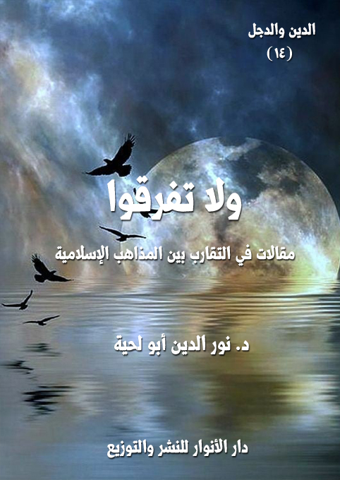

الكتاب: ولا تفرقوا
المؤلف: أ.د. نور الدين أبو لحية
الناشر: دار الأنوار للنشر والتوزيع
الطبعة: الأولى، 1437 هـ
عدد الصفحات: 128.
ISBN: 978-620-2-34560-6
لمطالعة الكتاب من تطبيق مؤلفاتي المجاني وهو أحسن وأيسر: هنا

التعريف بالكتاب
عالجت هذه المقالات بطريقة بسيطة بعض القضايا الكبرى التي أوقع الشيطان بسببها الفتنة بين كبرى الطائفتين من المسلمين: السنة والشيعة.. وبينت أن كليهما يحمل صورة خاطئة عن الآخر.. وأن لكليهما جوانب مشرقة.. كما أن لكليهما حظه من الانحراف والبدعة والابتعاد عن الدين الأصيل.
وقد حرصت فيها أن أكون على مسافة واحدة بين الجميع، وما يبدو من الدفاع أحيانا عن جهة من الجهات دون غيرها، فذلك لأني رأيت الحرب معلنة عليها.. والشريعة والأخلاق والقيم النبيلة تدعونا لأن نقف في صف المستضعفين، وألا نخذلهم، ولو بالكلمة والنصيحة.
ولا تفرقوا (5)
هذه مقالات كتبتها في مناسبات مختلفة، لكنها تجتمع لتحقيق هدف واحد هو الدعوة للتقارب بين المذاهب الإسلامية، وخصوصا بين الطائفتين الكبيرتين في الأمة: السنة والشيعة.
وليس قصدي منها أن تنتفي الخلافات بينهما، ولا أن يتحول السنة إلى شيعة، ولا الشيعة إلى سنة.. فذلك لا أهمية له بالنسبة لي، فقد يتحول الشيعي إلى سني متطرف ممتلئ بالأحقاد.. وقد يتحول السني إلى شيعي خرافي غارق في الأساطير والأوهام.. وبذلك يتخلص كل منهما من علة ليقع في علة، أو يتهرب من وضع ليقع في وضع لا يقل خطورة عنه.
وإنما هدفي منها هو ردم بعض الحفر التي حفرها المغرضون بين هاتين الطائفتين الكبيرتين، وتبيين أن نقاط الخلاف محدودة، وأنه يمكن تجاوزها، وأننا يمكن أن نعيش بمشاعر [الأمة الواحدة] في ظل ذلك الاختلاف.
ولتحقيق هذا الغرض عالجت هذه المقالات بطريقة بسيطة بعض القضايا الكبرى التي أوقع الشيطان بسببها الفتنة بين كلتا الطائفتين.. وبينت أن كليهما يحمل صورة خاطئة عن الآخر.. وأن لكليهما جوانب مشرقة.. كما أن لكليهما حظه من الانحراف والبدعة والابتعاد عن الدين الأصيل.
وقد حرصت فيها أن أكون على مسافة واحدة بين الجميع، وما يبدو من الدفاع أحيانا عن جهة من الجهات دون غيرها، فذلك لأني رأيت الحرب معلنة عليها.. والشريعة والأخلاق والقيم النبيلة تدعونا لأن نقف في صف المستضعفين، وألا نخذلهم، ولو بالكلمة والنصيحة.
ولا تفرقوا (6)
وأنا أعلم أن الكثير مما كتبته فيها لن يرضي الكثير من الأطراف، ففي السنة متشددون يعتبرون التقارب بين المسلمين بدعة وضلالة، ويسلطون كل سيوف حقدهم على من يدعو إلى ذلك.. ويحتجون له بأن بعض المشايخ كالقرضاوي، بعد أن أمضى سنين من عمره يدعو إلى الوحدة والتقارب ندم على ذلك، وعلم أن إخوانه وزملاءه من السلفيين كانوا على حق..
ولست أدري كيف يرد الفكر المستنير الوحدوي لجيل من أفاضل العلماء كالشيخ شلتوت والمراغي وأبو زهرة والغزالي وغيرهم كثير، بتراجع شخص واحد، لسنا ندري أهدافه ولا دوافعه ولا المتآمرون الذين يقفون خلفه.
ومثل هؤلاء الداعين للفتنة في المعسكر السني نجدهم في المعسكر الشيعي بدعوى حماية المذهب أو رفع التقية.. وهؤلاء الذين تمولهم أمريكا وبريطانيا، ولهم مؤسسات إعلامية في تلك الدول.
وليتهم اكتفوا بمعارضة التقارب.. بل إنهم راحوا إلى مقدسات المسلمين وخصوصا ما يتعلق بعرض رسول الله صلى الله عليه وآله وسلم الذي اتفقت الأمة على تنزيهه وعصمته، يسيئون إليه، ليتستثيروا غيرة المسلمين، وليملأوا قلوبهم أحقادا وظغائن.
وللأسف.. فإن أولئك الحاقدين من السنيين الذين وقفوا في وجه التقارب لم يخطو خطوة تجاه هذا المعسكر الشيعي المبتدع، ولم يطالبوا بإغلاق قنواته الفضائية المسمومة، وإنما راحوا للقنوات الداعية للتقارب يحرضون عليها، ويطالبون بغلقها، بل يغلقونها بالفعل، ويستغلون أولئك الأغبياء المتآمرين.
وأنا أعلم في الأخير بأن هذا جهد المقل.. ولذلك أتمنى من زملائي الباحثين أن يسعوا لتحقيق هذه الغاية النبيلة، ويحيوا تلك الدار المباركة التي قامت لإحياء سنة التقارب بين المذاهب الإسلامية، والتي يسعى الآن كل المغرضون لهدمها.
ولا تفرقوا (7)
وهم يتناسون كل تلك الأوامر القرآنية الناهية عن الشقاق والخلاف بين المسلمين، كما قال تعالى: {إِنَّ الَّذِينَ فَرَّقُوا دِينَهُمْ وَكَانُوا شِيَعًا لَسْتَ مِنْهُمْ فِي شَيْءٍ إِنَّمَا أَمْرُهُمْ إِلَى اللَّهِ ثُمَّ يُنَبِّئُهُمْ بِمَا كَانُوا يَفْعَلُونَ} [الأنعام: 159]، فهذه الآية الكريمة تضع معيارا خطيرا للمنحرفين عن رسول الله صلى الله عليه وآله وسلم وعن دينه الأصيل، وهو تفريق الدين، وتحويله إلى شيع يحارب بعضها بعضها، ويفخر بعضها على بعض.
وقد علمنا الله تعالى الموقف الصحيح الذي نقفه عند وقوع مثل هذا النزاع، فقال: {وَإِنْ طَائِفَتَانِ مِنَ الْمُؤْمِنِينَ اقْتَتَلُوا فَأَصْلِحُوا بَيْنَهُمَا فَإِنْ بَغَتْ إِحْدَاهُمَا عَلَى الْأُخْرَى فَقَاتِلُوا الَّتِي تَبْغِي حَتَّى تَفِيءَ إِلَى أَمْرِ اللَّهِ فَإِنْ فَاءَتْ فَأَصْلِحُوا بَيْنَهُمَا بِالْعَدْلِ وَأَقْسِطُوا إِنَّ اللَّهَ يُحِبُّ الْمُقْسِطِينَ} [الحجرات: 9]، فالآية الكريمة لا تشير إلى النزاع المسلح فقط، بل تشير معه إلى النزاع الأخطر وهو نزاع الأفكار المختلطة بالأهواء.
فالواجب الشرعي في كليهما ليس في تحريض طرف على طرف، وإنما في الصلح الذي نص القرآن الكريم على وجوبه في كل حالة، فقال: {إِنَّمَا الْمُؤْمِنُونَ إِخْوَةٌ فَأَصْلِحُوا بَيْنَ أَخَوَيْكُمْ وَاتَّقُوا اللَّهَ لَعَلَّكُمْ تُرْحَمُونَ} [الحجرات: 10]
وهكذا أخبر رسول الله صلى الله عليه وآله وسلم أن من أفضل الأعمال الصلح بين المسلمين، ففي الحديث، قال رسول الله صلى الله عليه وآله وسلم: (ألا أخبركم بأفضل من درجة الصيام، والصلاة، والصدقة؟ قالوا: بلى، قال: صلاح ذات البين، فإن فساد ذات البين هي الحالقة، لا أقول: هي تحلق الشعر، ولكن تحلق الدين) (1)
هذه بشارة رسول الله صلى الله عليه وآله وسلم.. ونحن نسعى أن يمن الله علينا بتحقيقها حتى نغطي قصورنا في نوافل الصلاة والصيام والصدقات.. ونسأل الله أن يتقبل منا.
__________
(1) رواه الترمذي، وأبو داود.
ولا تفرقوا (8)
مع أن الدعوة للتقارب بين المذاهب والطوائف والأديان والبشر بمختلف أعراقهم هي دعوة قرآنية بالدرجة الأولى إلا أنها أصبحت في العصر الحديث - وبفعل العقول التي استسلمت للأهواء السياسية الغبية، واستسلمت معها للمؤامرة الحانقة الذكية - تهمة لا تقل عن تهمة الزندقة والبدعة التي كان يكيلها أسلاف رجال الدين الجدد لمخالفيهم في الفكر والمعتقد.
أما كونها دعوة قرآنية بالدرجة الأولى، فيتضح من خلال معان قرآنية كثيرة، نذكر خمسة منها باختصار:
أولها: إخبار الله تعالى بأن الغرض من التنوع والاختلاف بين البشر هو التعارف، لا الصراع، قال تعالى: {يَاأَيُّهَا النَّاسُ إِنَّا خَلَقْنَاكُمْ مِنْ ذَكَرٍ وَأُنْثَى وَجَعَلْنَاكُمْ شُعُوبًا وَقَبَائِلَ لِتَعَارَفُوا إِنَّ أَكْرَمَكُمْ عِنْدَ اللَّهِ أَتْقَاكُمْ إِنَّ اللَّهَ عَلِيمٌ خَبِيرٌ} [الحجرات: 13]، فالآية الكريمة لا تدعو إلى التقارب بين المذاهب في الدين الواحد فقط، بل تدعو إلى التقارب بين الأمم والشعوب جميعا بمختلف أديانها وأعراقها وتوجهاتها الفكرية، لأنه لا يمكن للبشر أن يحققوا كمالهم الإنساني في ظل الصراع والتباعد.
ثانيها: إخبار الله تعالى بالرسالة العالمية لرسول الله صلى الله عليه وآله وسلم.. كما قال تعالى: {وَمَا أَرْسَلْنَاكَ إِلَّا رَحْمَةً لِلْعَالَمِينَ} [الأنبياء: 107]، وهذا يقتضي من المسلمين العمل على كل ما ييسر وصول هذه الرحمة الإلهية للناس أجمعين، وذلك لا يكون إلا بالتقارب والتآلف معهم، بل والصبر عليهم حتى تصل إليهم الرسالة مضمخة بعطر الرحمة والألفة والمودة.
ثالثها: إخبار الله تعالى بالمهمة الكبيرة التي أناط بها هذه الأمة، وهي مهمة الشهادة على الأمم، كما قال تعالى: {وَكَذَلِكَ جَعَلْنَاكُمْ أُمَّةً وَسَطاً لِتَكُونُوا شُهَدَاءَ عَلَى النَّاسِ وَيَكُونَ
ولا تفرقوا (9)
الرَّسُولُ عَلَيْكُمْ شَهِيداً} (البقرة: 143)، وهي تعني أن يقوم المسلمون بنفس الدور الذي قام به رسول الله صلى الله عليه وآله وسلم نحو الأممم المختلفة، لتنصاع لأمر الله بمحبة ومودة، لا بشدة وإكراه، وقد قال تعالى يبين كيفية أداء رسول الله صلى الله عليه وآله وسلم لدوره الدعوي مع العرب الذي عاش معهم، والمعروفين بشدتهم وغلظتهم: {فَبِمَا رَحْمَةٍ مِنَ اللَّهِ لِنْتَ لَهُمْ وَلَوْ كُنْتَ فَظًّا غَلِيظَ الْقَلْبِ لَانْفَضُّوا مِنْ حَوْلِكَ فَاعْفُ عَنْهُمْ وَاسْتَغْفِرْ لَهُمْ وَشَاوِرْهُمْ فِي الْأَمْرِ فَإِذَا عَزَمْتَ فَتَوَكَّلْ عَلَى اللَّهِ إِنَّ اللَّهَ يُحِبُّ الْمُتَوَكِّلِينَ} [آل عمران: 159]، فهل يتصور عاقل بأن يدخل العرب إلى دين الله باللين والرحمة، ويدخل غيرهم فيه بالشدة والعنف.
رابعها: دعوة الله تعالى الدعاة عباده إلى استعمال كل أساليب الهداية ووسائلها، والتي اجتمعت في قوله تعالى: {ادْعُ إِلَى سَبِيلِ رَبِّكَ بِالْحِكْمَةِ وَالْمَوْعِظَةِ الْحَسَنَةِ وَجَادِلْهُمْ بِالَّتِي هِيَ أَحْسَنُ إِنَّ رَبَّكَ هُوَ أَعْلَمُ بِمَنْ ضَلَّ عَنْ سَبِيلِهِ وَهُوَ أَعْلَمُ بِالْمُهْتَدِينَ} [النحل: 125]، وهذه الوسائل والأساليب جميعا تستدعي التقارب، لأنه لا يمكن أن نعظ أو نحاور ونخاطب من تحول بيننا وبينه الحجب المادية والمعنوية الكثيرة.
خامسها: ما ذكره القرآن الكريم من نماذج الحوار مع أهل الكتاب من اليهود والنصارى، مع ما يحملونه في عقائدهم من أحقاد لا على الصحابة والتابعين من المسلمين، وإنما على الأنبياء أنفسهم، بل إنهم في كتبهم يضعون صورة مشوهة لله، ممتلئة بالتجسيم والتشويه، ومع ذلك يقول الله تعالى داعيا إلى التقارب معهم: {قُلْ يَاأَهْلَ الْكِتَابِ تَعَالَوْا إِلَى كَلِمَةٍ سَوَاءٍ بَيْنَنَا وَبَيْنَكُمْ أَلَّا نَعْبُدَ إِلَّا اللَّهَ وَلَا نُشْرِكَ بِهِ شَيْئًا وَلَا يَتَّخِذَ بَعْضُنَا بَعْضًا أَرْبَابًا مِنْ دُونِ اللَّهِ فَإِنْ تَوَلَّوْا فَقُولُوا اشْهَدُوا بِأَنَّا مُسْلِمُونَ} [آل عمران: 64]، وانظروا كيف اعتبر الله تعالى إلههم - أي إله اليهود والنصارى - هو نفسه إله المسلمين مع ما يحملونه في دينهم عن الله من تشويه، ومع ذلك لم يقطع الصلة بهم، بل لم يقطعها حتى بعد رفضهم لتلك الدعوة، فليس في النصوص القرآنية أي دعوة لقطع العلاقة مع أي دين من الأديان،
ولا تفرقوا (10)
أو شعب من الشعوب إلا مع المحاربين الذين يأبون الحديث إلا بلغة السيف.
هذه بعض الأمثلة عن دعوة القرآن الكريم للتقارب مع البشر جميعا بمختلف أديانهم وطوائفهم وأعراقهم.. لكن المسلمين بسبب ابتعادهم عن المنهج القرآني، وعن التربية النبوية السامية جلسوا في أبراج الكبر العاجية، ووضعوا المسافات الهائلة بينهم وبين الأمم المختلفة، حتى تجرأوا فصنفوا الدار التي يسكنون فيها [دار إسلام] يأمن ساكنها في الدنيا، ويسعد في الآخرة، أما دور غيرهم، فسموها [دار حرب] تباح لهم أموالها ودماؤها وأعراضها، ثم يصلى أهلها بعدها نار جهنم وبئس المصير.
وليت الأمر اقتصر على ذلك، بل ضاق هؤلاء ذرعا بأنفسهم، وبالمسلمين من حولهم، فراحوا يصنفونهم إلى طبقات مختلفة، لا تقل سوءا عن الطبقات التي وضعها رجال الدين الهندوسي لمجتمعاتهم وأتباع دينهم..
ولم يكتفوا بذلك، بل وضعوا الجدر التي تحمي كل طبقة عن التواصل مع الطبقات الأخرى، ووضعوا تهمة جديدة في تجريح كل عالم يحمل نفسا إنسانية وروحا قرآنية تجعل صدره يتسع لكل مخالف، وتجعل جسده لا ينفر من الجلوس والحوار والتقارب مع أي بشر كان، لا يهمه دينه ولا عرقه ولا مذهبه.
وقد طالت هذه التهمة كل من يحمل تلك النفس الإنسانية، حتى لو كان علما من أعلام الأمة الكبار من أمثال الشيخ محمد أبي زهرة وشيخ الأزهر محمود شلتوت والمفسر الكبير مصطفى المراغي والداعية المجدد الكبير الشيخ محمد الغزالي، وغيرهم كثير، والذين صارت إنسانيتهم وقرآنيتهم التي جعلتهم يتواصلون مع إخوانهم من أصحاب المذاهب المختلفة تهمة يجرحون على أساسها، وتمنع قراءة كتبهم أو الاطلاع على فكرهم أو ترديده في أي محل.
وعندما تحدثت في بعض المجالس عن تصريح للشيخ محمد الغزالي للطليعة
ولا تفرقوا (11)
الإسلامية ردا على سؤال حول دوره في جماعة التقريب فقال: (نعم أنا كنت من المعنيين بالتقريب بين المذاهب الإسلامية وكان لي عمل دؤوب ومتصل في دار التقريب في القاهرة وصادقت الشيخ محمد تقي القمي كما صادقت الشيخ محمد جواد مغنية ولي أصدقاء من العلماء والأكابر من علماء الشيعة) (1)
وذكرت قوله في كتابه [كيف نفهم الإسلام]: (ولقد رأيت ان أقوم بعمل إيجابي حاسم سداً لهذه الفجوة التي صنعتها الأوهام، بل إنهاء لهذه الفجوة التي خلقتها الأهواء، فرأيت أن تتولى وزارة الأوقاف ضم المذهب الفقهي للشيعة الإمامية إلى فقه المذاهب الأربعة المدروسة في مصر، وستتولى إدارة الثقافة تقديم أبواب العبادات والمعاملات في هذا الفقه الإسلامي للمجتهدين من إخواننا الشيعة، وسيرى أولوا الألباب عند مطالعة هذه الجهود العلمية أن الشبه قريب بين ما ألفنا من قراءات فقهية وبين ما باعدتنا عنه الأحداث السيئة) (2)
عندما قرأت ذلك قامت القيامة علي، وأخرج لي بعضهم كتابا لمقبل الوادعي يقول فيه عن الغزالي: (إن محمدا الغزالي داعية كبير، ولكن إلى الضلال، وأعتقد أنه لو كان في زمن الإمام أحمد لحكم عليه بالزندقة) (3)
وأخرج لي آخر كتابا آخر لربيع المدخلي اسمه (جماعة واحد لا جماعات) قال فيه كلاما عن الغزالي يربأ لساني عن ذكره هنا.
بعد أن رأيت الجموع تصفق لدعاة الفتنة والطائفية والتعالي، ورأيتها تعرض عن الغزالي وشلتوت وأبي زهرة وتقبل على الوادعي والمدخلي والحربي عرفت أن المؤامرة على
__________
(1) مجلة الطليعة الإسلامية (عدد 26 مارس)
(2) كيف نفهم الإسلام، ص 118.
(3) فضائح ونصائح، ص 38.
ولا تفرقوا (12)
الأمة ستتم بنجاح، وسيأكل بعضها بعضا، وهذا ما نراه ونعيشه، وسنرى إن بقينا على هذه الحالة ما هو أشنع وأشد.
ولا تفرقوا (13)
السنة النبوية.. والسنة المذهبية
من الصعب جدا على الإنسان أن يكتشف في عرصات القيامة أنه لم يكن يعبد الله، بل كان يعبد هواه، وأنه لم يكن يتبع نبيه، وإنما كان يتبع أصناما عجنها بشهواته وأهوائه وأعانه الشيطان على تشكيلها، وأنه فوق ذلك كله لم يكن في حياته جميعا من حزب الله، وإنما كان من حزب الشيطان.. وأن تسميته لنفسه بالسني أو السلفي أو غيرها من الألقاب لم تكن إلا خدعة شيطانية ضحك بها الأبالسة عليه ليستضيفوه معهم في دركات جهنم..
هذه ليست أوهاما ولا مخاوف زائفة، بل هي مخاوف حقيقية تراود عقل وقلب كل إنسان اقتنع اقتناعا تاما بأنه قد وضع في هذه الدنيا في وضع امتحان وابتلاء واختبار لتبلى سريرته، ويكشف عن معدنه، ويزف بعد ذلك إلى المقر الذي يتناسب معه إما إلى الجنة، وإما إلى النار.
وهذه الحقيقة لا يدعو إليها التأمل العقلي فقط، بل يدعو إليها قبل ذلك وبعده القرآن الكريم رسالة الله إلى عباده، ففيها من الإنذارات المشددة ما ترتجف له الأفئدة.. فالأمر ليس هزلا، وليس لعبة الأطفال.. والمصير الأبدي الذي ينتظرنا، وينتظر البشرية جميعا بحلوه ومره مرتبط باختياراتنا، والشيطان متربص بنا في كل لحظة.. لا يدع محلا من الخير والشر إلا راودنا فيه لينحرف بنا إلى جهته، وليحقق وعده لربه حين قال: {قَالَ رَبِّ بِمَا أَغْوَيْتَنِي لَأُزَيِّنَنَّ لَهُمْ فِي الْأَرْضِ وَلَأُغْوِيَنَّهُمْ أَجْمَعِينَ (39) إِلَّا عِبَادَكَ مِنْهُمُ الْمُخْلَصِينَ (40)} [الحجر: 39، 40]
وقد رسم رسول الله صلى الله عليه وآله وسلم صورة توضح دور الشيطان في الانحراف بالإنسان عن سبيل الله، فقد حدث عبد الله بن مسعود قال: خط لنا رسول الله صلى الله عليه وآله وسلميوما خطا، وخط عن يمينه خطا، وخط عن يساره خطا، ثم قال: (هذا سبيل الله)، ثم خط خطوطا فقال: (هذه
ولا تفرقوا (14)
سبل، على كل سبيل منها شيطان يدعو إليه)، وقرأ {أَنَّ هَذَا صِرَاطِي مُسْتَقِيمًا فَاتَّبِعُوهُ وَلَا تَتَّبِعُوا السُّبُلَ} [الأنعام: 153] (1)
وبناء على هذا كانت خطورة البحث عن حقيقة انتماءاتنا وتوجهاتنا الفكرية والسلوكية.. فهي ليس مجرد اختيارات عبثية، وإنما هي اختيارات ينبني عليها مصيرنا وحياتنا الحقيقية.
ولهذا، فإن القرآن الكريم يحذرنا من التبعية.. لأن التبعية تجعل صاحبها مغلول العقل، لا يفكر بما أعطاه الله من طاقات ومدارك، وإنما يفكر بعقول غيره، ومدارك غيره، والتي قد يستحوذ عليها الشيطان، فيملؤها ببرامجه المضادة لبرامج الله لعباده.. قال تعالى: {إِذْ تَبَرَّأَ الَّذِينَ اتُّبِعُوا مِنَ الَّذِينَ اتَّبَعُوا وَرَأَوُا الْعَذَابَ وَتَقَطَّعَتْ بِهِمُ الْأَسْبَابُ (166) وَقَالَ الَّذِينَ اتَّبَعُوا لَوْ أَنَّ لَنَا كَرَّةً فَنَتَبَرَّأَ مِنْهُمْ كَمَا تَبَرَّءُوا مِنَّا كَذَلِكَ يُرِيهِمُ اللَّهُ أَعْمَالَهُمْ حَسَرَاتٍ عَلَيْهِمْ وَمَا هُمْ بِخَارِجِينَ مِنَ النَّارِ (167)} [البقرة: 166، 167]، والآية جاءت مطلقة هنا، ومن الخطأ الكبير ربطها بأمة دون أمة، أو شعب دون شعب.. فعدالة الله تقتضي سريان سنن الله في جميع الشعوب والأمم.
ومثل هذه الآية الكريمة تلك الآيات الكثيرة التي تتحدث عن الخصومة بين أهل النار، وخاصة بين المستكبرين والمستضعفين.. فالمستكبرون ليسوا فقط رجال السياسة، وإنما يدخل فيهم رجال الدين.. أي دين كان.. والمستعضفون ليسوا فقط الرعية.. بل كل تابع ذليل حتى لو كان عالما علامة بحرا فهامة.. لأنه كان تابعا لأي رجل من رجال الدين تبعية مطلقة، من غير تفكير ولا بحث ولا نظر.
هذه مقدمة ضرورية للحديث عن الفرق بين السنة النبوية والسنة المذهبية.. فالسنة النبوية قيم وحقائق وسلوكات ومواقف تنبع من الصدق في البحث والنظر والتأمل.. بينما
__________
(1) البزار في مسنده [رقم 1865.. 5/ 251]
ولا تفرقوا (15)
السنة المذهبية مجرد تبعية لفريق من الناس تصور البعض أنهم هم السنة، أو أنهم هم النبي نفسه، وأن عليه أن يتبعهم أخطأوا أو أصابوا.. ضلوا أو اهتدوا.. وفي يوم القيامة يكتشف الحقيقة المرة، ويكتشف أنه لم يكن يعبد الله بل كان يعبد هواه.. وأن كل تلك الألقاب التي كان يفرح بها مجرد خدع شيطانية لبس الشيطان بها عليه، ليزحزحه عن الجنة، ويقذفه في جهنم.
وبناء على هذا، فإن الخطوة الأولى التي ينطلق منها من يريد صادقا أن يتحقق بالسنة النبوية بدل السنة الذهبية، أن يعلم أن السنة النبوية حقائق وليست أفرادا.. وقيما وليست جماعات.. ومعان سامية وليست فرقا ومذاهب، كما قال الإمام علي لبعض الذين راحوا يميزون الحق بالرجال: (إنك لمبلوس عليك، إن الحق والباطل لا يعرفان بأقدار الرجال، اعرف الحق تعرف أهله، واعرف الباطل تعرف أهله)
فالحق مقصود لذاته.. وأما الرجال، فيمكن أن يكونوا معه، ويمكن أن يخالفوا طريقه.. ولهذا فإن العاقل لا يكون إمعة فيما يرتبط بمصيره الأزلي، كما قال صلى الله عليه وآله وسلم: (لا تكونوا إمعة، تقولون: إن أحسن الناس أحسنا، وإن ظلموا ظلمنا، ولكن وطنوا أنفسكم، إن أحسن الناس أن تحسنوا، وإن أساءوا فلا تظلموا) (1)
ومع أن هذا الذي ذكرناه من البديهيات التي كثيرا ما نرددها، بل ترددها كل الطوائف، لكننا في الواقع العملي نتيه عنها بسبب تلك الأصنام التي تعمر قلوبنا، والتي غذتها المناهج التربوية والقنوات الإعلامية والخطب المنبرية والبيئة الاجتماعية التي لا نستطيع التنصل منها ومن الأفكار التي تطرحها.. فهي جميعا تبشرنا بأننا (أهل السنة والجماعة)، وأننا (الفرقة الناجية)، وأننا حتى لو دخلنا النار، فلن نمكث فيها إلا أيام معدودات بخلاف غيرنا من أهل الأهواء والبدع، والذين سيخلدون في النار لا محالة حتى
__________
(1) رواه الترمذي.
ولا تفرقوا (16)
لو كانوا من أهل الصيام والقيام.. وحتى لو فعلوا ما فعلوا من أنواع البر، لأن الجنة مخصصة لنا، ومحرمة عليهم.
ولهذا قد ترى في الشارع بعض عوام الناس ممن لا يصلون، ولا علاقة لهم بالدين، ولكن بسبب الحملات الإعلامية الطائفية التي تقوم بدورها في نشرها الفتن، تجدهم يزعمون لأنفسهم أنهم ـ مع تركهم للصلاة ولكل شعائر الدين ـ من أهل السنة والجماعة، وتجدهم يكفرون غيرهم من أهل الملل والنحل.. بل يقول أحدهم بافتخار: نعم أنا لا أصلي.. ولكني مع ذلك من أهل السنة والجماعة.. وأنا أفضل من كل أولئك الذين يسكنون في تلك البلاد الممتلئة بالشرك والبدع.
وللأسف لا نجد العلماء ينكرون عليهم.. بل نجدهم يؤيدونهم، فهم يقولون كل حين، وعلى جميع وسائل الإعلام: نحن أهل السنة والجماعة نشكل الطائفة الأكبر من الأمة، فنحن أكثر من مليار نسمة، بينما لا يشكل الروافض والخوارج وغيرهم سوى ثلة قليلة قد لا تتجاوز بعض مئات الملايين.
وهم يعلمون جيدا أن في هذا المليار الذي يزعمونه من لا يعرف من الدين لا اسما، ولا رسما، ولا يقيم له وزنا.. ومع ذلك هم يكذبون عليهم، ويمنونهم بالنجاة، وبأن يسقوا من يد رسول الله صلى الله عليه وآله وسلم شربة هنية لا يظمأون بعدها أبدا، وكأن رسول الله صلى الله عليه وآله وسلم تحول إلى سقاء للفسقة والفجرة والمنحرفين..
ومن كذبني فليذهب لقناة الجزيرة أو قناة العربية أو غيرهما من قنوات الفتنة ليرى الصحفيات بكامل زينتهن، وهن يزعمن لأنفسهن أنهن من أهل السنة، وأنهن ينتصرن لأهل السنة، ويبكين على أهل السنة، ويسخرن من الرافضة، ومن صحفيات القنوات الرافضية.
ولا تفرقوا (17)
خطورة الحديث عن هذا الموضوع بموضوعية ودقة وبعيدا عن كل الحساسيات لا تكمن في غموضه أو عدم وضوحه.. وإنما تكمن في الموقف ممن يتحدث عنه سواء ممن يسمون أنفسهم [أهل السنة]، أو من إخوانهم ممن يسمون أنفسهم [شيعة]
وبما أنني أشعر أنني في مسافة واحدة بينهما، فكلاهما إخوان لي، بل كلاهما جزء مني، فأنا ـ بحمد الله ـ لا أؤمن إلا بالإسلام الواحد الذي يتعالى على المذاهب والطوائف والفرق.. فإنني ـ مثلما انتقدت الكثير من المناهج السنية ـ أرى نفسي مضطرا كذلك ـ حسب ما يقتضيه العدل، وحسبما تقتضيه الشهادة الصادقة لله ـ أن أتعامل مع الشيعة بمثل تعاملي مع إخوانهم من أهل السنة..
فلا يحق لشخص يدعو إلى العدل والصدق، ويعتبرهما من أعظم القيم القرآنية والإنسانية، أن ينحاز لطرف دون طرف، أو ينتقد جهة دون جهة.
وهذا المقال موجه بالدرجة الأولى لجهتين من الأمة:
الجهة الأولى: تتمثل في الكثير ممن يسمون أنفسهم [أهل السنة]، والذين يضعون الشيعة جميعا في سلة واحدة، ثم يرمونهم جميعا بحكم واحد.. ويستعملون لذلك ما شاءت لهم أهواؤهم من الأمثلة والنماذج، وما أسهل أن يوجد الشيطان للحاقدين والمفرقين لصف الأمة ما يشاءون من الشواهد والأمثلة والنماذج.
وليت هؤلاء تعاملوا مع الشيعة بمثل ما يتعاملون به مع أنفسهم.. فهم إذا ذكر لهم أي نموذج منهم لا يناسبهم، يسارعون إلى البراءة منه، ويذكرون أنه لا علاقة له بهم.. وإذا ذكر لهم حديث في مصادرهم لا يعجبهم، يسارعون بذكر من ضعفه، مع أنه من بينهم من صححه.
ولا تفرقوا (18)
لكنهم إن تعاملوا مع الشيعة، لم يراعوا فيهم كل ذلك.. بل يلزمونهم بمن شاءت لهم أهواؤهم وشياطينهم التي لا تسعى لشيء كما تسعى لصدع وحدة الأمة.
والجهة الثانية: هم أولئك الذين يسمون أنفسهم [شيعة].. ثم يفخرون بذلك، ويعتبرون أنفسهم خاصة، وغيرهم من الناس عامة.. بل إن بعضهم قد يجنح به الخيال الممزوج بالأهواء، فيزعم لنفسه النجاة.. بل يزعم لنفسه أن يكون مجاورا للأئمة في مقاماتهم السنية.
وقد يأتيه الشيطان، وما أكثر الشياطين في هذا المجال، فيتهم الأمة كلها بعلمائها وعوامها بالنصب.. ثم يرميهم بالنفاق.. ثم يرميهم بعدها في جهنم.. وقبل أن يرميهم فيها يصب عليهم كل ما يمتلئ به قلبه الشيطاني من لعنات وأحقاد.
وينسى في خضم ذلك كله أنه من أخطر النواصب وأشدهم عداء لأئمته الذين يزعم انتسابه لهم.. لأن النصب ليس فقط العداوة لأهل البيت، بل أخطر منه تشويههم وتحريف القيم التي نادوا بها.
هاتان هما الجهتان اللتان أوجه لهما هذا المقال، والذي قد يؤذيهما.. أما غيرهما من أهل السنة المعتدلين المحترمين.. أو إخوانهم من الشيعة الصادقين المتواضعين.. فلا أظن أنني سأضيف شيئا لما عندهما من معان أو مواقف.
وأحب أن أنبه ابتداء إلى أن وجود المبتدعة بين الشيعة.. أو وجود من يشوه التشيع، ويرسم صورة سيئة لأئمة أهل البيت لا يحتاج إلى أدلة.. فالعقل والنقل كلاهما متفقان على الدلالة عليه:
أما العقل.. فواضح، فليس هناك من ادعى العصمة في أفراد الشيعة، ولا في جماعاتهم.. وعدم العصمة يعني احتمال الوقوع في الخطأ.. وهذا الاحتمال يجعلنا محترزين من كل سلوك يمارس باسم التشيع، لأنه قد يكون كذلك، وقد لا يكون كذلك..
ولا تفرقوا (19)
والعقل يدعونا إلى عرض أعمال الشيعة على ما يقوله أئمتهم لنرى مدى التوافق والاختلاف.. مثلما يمتحن كل منتسب لجهة من الجهات بما يثبت حقانية انتسابه، وقد روي عن أئمة أهل البيت الكثير من الروايات الدالة على هذا الامتحان، ومنها قول الإمام الصادق: (امتحنوا شيعتنا عند ثلاث: عند مواقيت الصلاة كيف محافظتهم عليها، وعند أسرارهم كيف حفظهم لها عند عدونا، وإلى أموالهم كيف مواساتهم لإخوانهم فيها) (1)
أما النقل، فما أكثر الروايات الدالة على أن الانتساب للتشيع وحده غير كاف في تحقق النسبة.. لأن الانتساب مجرد دعوى، والدعوى لا تقبل إلا بدليل..
ومن تلك الروايات المعروفة والمشتهرة في الأوساط الشيعية، والتي كثيرا ما يرددها خطباء المنابر الحسينية قصة عمار الدهني مع ابن أبي ليلى قاضي الكوفة، ورده شهادته لأنه رافضي، وبكاء عمار وقوله: (أما بكائي على نفسي فإنك نسبتني إلى رتبة شريفة لست من أهلها) (2)
ومنها مرور بعض أصحاب موسى بن جعفر برجل في السوق، ينادي: أنا من شيعة محمد وآل محمد الخلص، وهو ينادي على ثياب يبيعها: على من يزيد؟ وكلام الإمام في ادعائه الكاذب (3).
ومنها استئذان قوم من الشيعة لزيارة الرضا، وعدم إذنه لهم لدعواهم الكاذبة (4).
وغير ذلك من القصص الكثيرة المشهورة، والتي تثبت أن التشيع ـ بحسب ما يذكره جميع أهل البيت ـ قيم عظيمة، وأخلاق عالية، وروحانية سامية.. وليس مجرد دعاوى.
بل إن أئمة أهل البيت جميعا صرحوا بأن المنتسبين إليهم والموالين لهم ليسوا صنفا
__________
(1) الخصال: 103/ 62
(2) التفسير المنسوب إلى الإمام العسكري.
(3) التفسير المنسوب إلى الإمام العسكري.
(4) التفسير المنسوب إلى الإمام العسكري.
ولا تفرقوا (20)
واحدا، فعن الإمام الصادق قال: (الشيعة ثلاث: محب واد فهو منا، ومتزين بنا ونحن زين لمن تزين بنا، ومستأكل بنا الناس، ومن استأكل بنا افتقر) (1)
وقال: (افترق الناس فينا على ثلاث فرق: فرقة أحبونا انتظار قائمنا ليصيبوا من دنيانا، فقالوا وحفظوا كلامنا وقصروا عن فعلنا، فسيحشرهم الله إلى النار، وفرقة أحبونا وسمعوا كلامنا، ولم يقصروا عن فعلنا، ليستأكلوا الناس بنا، فيملأ الله بطونهم نارا يسلط عليهم الجوع والعطش، وفرقة أحبونا وحفظوا قولنا، وأطاعوا أمرنا، ولم يخالفوا فعلنا، فاولئك منا ونحن منهم) (2)
ومثله قال الإمام الباقر: (شيعتنا ثلاثة أصناف: صنف يأكلون الناس بنا، وصنف كالزجاج ينم (3)، وصنف كالذهب الأحمر كلما ادخل النار ازداد جودة) (4)، وقال: (الشيعة ثلاثة أصناف: صنف يتزينون بنا، وصنف يستأكلون بنا، وصنف منا وإلينا) (5)
بناء على هذا، فقد رأيت من خلال قراءتي للروايات الصحيحة الواردة عن أئمة أهل البيت أن التفريق بين الشيعي السني والشيعي البدعي يكمن في امتحانه في ثلاثة مواقف:
أولها موقفه من القرآن الكريم، ومدى تفعيله له، وعمله بما فيه.
وثانيها موقفه من الرسالة والرسول والقيم التي جاء بها.
وثالثها موقفه من الأمة وخدمتها والحفاظ على وحدتها.
وهذه المواقف نفسها يمكن امتحان مدعي الانتساب لأهل السنة فيها.. حتى يميز بين صحيح النسبة للسنة، وبين المدعين، وما أكثرهم..
__________
(1) الخصال: 103/ 61
(2) تحف العقول: 514
(3) يعني لا يكتم السر ويذيع ما في باطنه من الأسرار
(4) البحار: 78/ 186 / 24
(5) مشكاة الأنوار: 63
ولا تفرقوا (21)
وعندما نتعامل مع كل من السنة والشيعة على أساس هذا الامتحان، سنرى قصر المسافة بين السنة والشيعة.. بل نرى أن المسافة تختزل لتصبح عدما أو وهما كبيرا استعمله الشيطان ليفرق صف الأمة، ويزرع الشقاق بينها.
أولا الموقف من القرآن الكريم، ومدى تفعيله، والعمل بما فيه
يعتقد الشيعة ـ متسننهم ومبتدعهم ـ بأن رسول الله صلى الله عليه وآله وسلم أوصى في حديثه المتواتر المنقول في مصادر الفريقين بأمرين خطيرين سماهما لأجل أهميتهما [ثقلين]، فقال: (إني تركت فيكم ما إن تمسكتم بهما لن تضلوا بعدي، الثقلين وأحدهما أكبر من الآخر: كتاب الله حبل ممدود من السماء إلى الأرض، وعترتي أهل بيتي. ألا وإنهما لن يفترقا حتى يردا علي الحوض) (1)
وفي رواية: (أيها الناس. إنما أنا بشر يوشك أن يأتيني رسول من ربي فأجيب. وإني تارك فيكم الثقلين. أولهما كتاب الله فيه الهدى والنور فخذوا بكتاب الله واستمسكوا به. فحث على كتاب الله ورغب فيه. ثم قال: وأهل بيتي. أذكركم الله في أهل بيتي. أذكركم الله في أهل بيتي. أذكركم الله في أهل بيتي) (2)
فهذا الحديث برواياته المختلفة يعتبر القرآن الكريم هو الثقل الأول، بل الثقل الأكبر كما يدل على ذلك ظاهر الحديث، بل نص على ذلك الإمام علي بقوله: (القرآن أفضل
__________
(1) رواه أبو داود وغيره، وللأسف فإن هذا الحديث مع وروده بلفظ (كتاب الله وعترتي) ومع كثرة الروايات الواردة فيه بهذا المعنى استبدل بحديث آخر، وصار هو المعروف عند الناس، وهو استبدال (عترتي) بلفظ (سنتي) مع أنه لم يرد في أي من الصحاح الست، وقد أخرج الحديث بهذا اللفظ مالك بن أنس في موطئه ونقله مرسلا غير مسند، وأخذ عنه بعد ذلك البعض كالطبري وابن هشام ونقلوه مرسلا كما ورد عن مالك.. مع العلم أنه في قانون المحدثين لا يروى الحديث إلا بأصح صيغه، هذا في حال كون الصيغة المروية عن مالك صحيحة باعتبار المحدثين لأنها مرسلة، ولكنه للأسف صار الحديث المرسل هو الأصل، وصار الحديث المتواتر في حكم المكتوم، بل لو أن شخصا حدث به لاتهم في دينه.
(2) رواه مسلم
ولا تفرقوا (22)
الهدايتين) (1)
بل إن المتسنين من الشيعة لا يعتبرون الأئمة من أهل البيت سوى تجل من تجليات القرآن الكريم.. أو يعتبرونهم القرآن الناطق.. أو يعتبرونهم التطبيق النموذجي للقرآن الكريم.
فلذلك لا يقتصرون في تنفيذهم لوصية رسول الله صلى الله عليه وآله وسلم على شطرها الثاني، ويتركون الشطر الأول.. فالوصية كائن واحد، والفصل بينهما يؤدي إلى تشويه كليهما..
وانطلاقا من هذا كانت وصية جميع أئمة أهل البيت للأمة عموما، ولشيعتهم خصوصا بالقرآن الكريم، باعتباره شمس الهداية، وبوصلتها الكبرى..
ولهذا نجد في خطب أمير المؤمنين الإمام علي تلك الأوصاف البديعة للقرآن الكريم، ترغيبا في قراءته وتدبره والتعلم منه والحياة على منهجه..
حيث نطالع فيها قوله: (الله الله في القرآن، لا يسبقكم بالعمل به غيركم) (2)
ويقول: (كتاب الله تبصرون به، وتنطقون به، وتسمعون به، وينطق بعضه ببعض، ويشهد بعضه على بعض، ولا يختلف في الله، ولا يخالف بصاحبه عن الله) (3)
ويقول: (تعلموا كتاب الله تبارك وتعالى فإنه أحسن الحديث وأبلغ الموعظة، وتفقهوا فيه فإنه ربيع القلوب، واستشفوا بنوره فإنه شفاء لما في الصدور، وأحسنوا تلاوته فإنه أحسن القصص) (4)
ويقول: (اعلموا أنه ليس على أحد بعد القرآن من فاقة، ولا لأحد قبل القرآن من
__________
(1) غرر الحكم: 1664.
(2) نهج البلاغة: الكتاب 47.
(3) نهج البلاغة: الخطبة 133
(4) تحف العقول: 150
ولا تفرقوا (23)
غنى، فاستشفوه من أدوائكم، واستعينوا به على لأوائكم) (1)
ويقول واصفا ما أودع الله فيه من أنوار الهداية: (جعله الله ريا لعطش العلماء، وربيعا لقلوب الفقهاء، ومحاج لطرق الصلحاء، ودواء ليس بعده داء، ونورا ليس معه ظلمة) (2)
ويقول: (اعلموا أن هذا القرآن هو الناصح الذي لا يغش، والهادي الذي لا يضل، والمحدث الذي لا يكذب، وما جالس هذا القرآن أحد إلا قام عنه بزيادة أو نقصان، زيادة في هدى، أو نقصان من عمى) (3)
ويقول: (إن الله سبحانه لم يعظ أحدا بمثل هذا القرآن، فإنه حبل الله المتين وسببه الأمين، وفيه ربيع القلب، وينابع العلم، وما للقلب جلاء غيره) (4).
ويقول: (فالقرآن آمر زاجر، وصامت ناطق، حجة الله على خلقه، أخذ عليه ميثاقهم، وارتهن عليهم أنفسهم (5)
ويقول: (أفضل الذكر القرآن، به تشرح الصدور، وتستنير السرائر (6)
وهو يحذر من هجر الأمة للقرآن وإعراضها عنه، وتقديمها لأهوائها عليه، فيقول: (إنه سيأتي عليكم من بعدي زمان ليس فيه شئ أخفى من الحق، ولا أظهر من الباطل... فالكتاب وأهله في ذلك الزمان في الناس وليسا فيهم، ومعهم وليسا معهم، لأن الضلالة لا توافق الهدى وإن اجتمعا، فاجتمع القوم على الفرقة، وافترقوا على الجماعة، كأنهم أئمة الكتاب وليس الكتاب إمامهم، فلم يبق عندهم منه إلا اسمه، ولا يعرفون إلا خطه
__________
(1) نهج البلاغة: الخطبة 176، شرح نهج البلاغة لابن أبي الحديد: 10/ 18
(2) نهج البلاغة: الخطبة 198، شرح نهج البلاغة لابن أبي الحديد: 10/ 199
(3) نهج البلاغة: الخطبة 176، نهج البلاغة لابن أبي الحديد: 10/ 18.
(4) نهج البلاغة: الخطبة 176، شرح نهج البلاغة لابن أبي الحديد: 10/ 31.
(5) نهج البلاغة: الخطبة 183، شرح نهج البلاغة لابن أبي الحديد: 10/ 115.
(6) غرر الحكم: 3255.
ولا تفرقوا (24)
وزبره) (1)
وهكذا نجد الروايات الكثيرة عن سائر الأمة توصي بالقرآن، وتدعو إلى تفعيله في كل مجالات الحياة، فالإمام الحسن يقول: (إن هذا القرآن فيه مصابيح النور وشفاء الصدور، فليجل جال بضوئه، وليلجم الصفة، فإن التلقين حياة القلب البصير كما يمشى المستنير في الظلمات بالنور) (2)
والإمام زين العابدين يعبر عن علاقته الروحية بالقرآن الكريم، فيقول: (لو مات من بين المشرق والمغرب لما استوحشت بعد أن يكون القرآن معي) (3)
والإمام الصادق يعبر عن ضرورة اللجوء للقرآن الكريم لتبصر الحقائق، والابتعاد عن سبل الفتن التي حرف بها الدين، فيقول: (من لم يعرف الحق من القرآن لم يتنكب الفتن) (4)
ويقول ـ لما سئل: ما بال القرآن لا يزداد على النشر والدرس إلا غضاضة؟ -: (لأن الله تبارك وتعالى لم يجعله لزمان دون زمان، ولا لناس دون ناس، فهو في كل زمان جديد، وعند كل قوم غض إلى يوم القيامة) (5)
وهكذا يقول الإمام الرضا واصفا القرآن الكريم مرغبا شيعته فيه: (هو حبل الله المتين، وعروته الوثقى، وطريقته المثلى، المؤدي إلى الجنة، والمنجي من النار، لا يخلق على الأزمنة، ولا يغث على الألسنة، لأنه لم يجعل لزمان دون زمان، بل جعل دليل البرهان،
__________
(1) نهج البلاغة: الخطبة 147
(2) البحار: 78/ 112 / 6
(3) الكافي: 2/ 602 / 13.
(4) المحاسن: 1/ 341 / 702.
(5) البحار: 92/ 15 / 8
ولا تفرقوا (25)
والحجة على كل إنسان، لا يأتيه الباطل من بين يديه ولا من خلفه تنزيل من حكيم حميد) (1)
ويقول الإمام الجواد محذرا من نبذ القرآن الكريم أو تحريف معانيه وقيمه: (وكل أمة قد رفع الله عنهم علم الكتاب حين نبذوه وولاهم عدوهم حين تولوه، وكان من نبذهم الكتاب أن أقاموا حروفه وحرفوا حدوده، فهم يروونه ولا يرعونه، والجهال يعجبهم حفظهم للرواية، والعلماء يحزنهم تركهم للرعاية) (2)
ويقول الإمام الحسن العسكري مبينا قيمة القرآن الكريم ودوره في تحقيق السعادة الأبدية، ومرغبا مواليه فيه: (إنّ القرآن يأتي يومَ القيامة بالرّجل الشّاحبِ يقولُ لربّه: يا ربّ، هذا أظمأتُ نهارَه، وأسهرتُ ليلَه، وقوّيت في رحمتك طمعه، وفسحتُ في رحمتك أمله، فكن عند ظنّي فيك وظنّه. يقول الله تعالى: اُعطوه المُلكَ بيمينه والخُلد بِشماله، واقرِنوه بأزواجه من الحور العين، واكسُوا والديه حلّة لا تقوم لها الدّنيا بما فيها، فينظر إليهما الخلائق فيعظّمونهما، وينظران إلى أنفسهما فيعجبان منهما، فيقولان: يا ربّنا، أنّى لنا هذه ولَم تَبلُغْها أعمالُنا؟! فيقول الله عزّوجلّ: ومع هذا تاج الكرامة، لم يَرَ مثلَه الرّاؤون ولم يسمع بمثله السّامعون، ولا يتفكَّر في مثله المتفكّرون، فيقال: هذا بتعليمكما ولدَكُما القرآن، وبتبصيركما إيّاه بدين الإسلام، وبرياضتكما إيّاه على حُبّ محمّد رسول الله وعليّ وليّ الله صلوات الله عليهما، وتفقيهكما إيّاه بفقههما) (3)
بل إن أئمة أهل البيت متفقون على أنه إذا تعارضت أي رواية واردة عنهم أو عن رسول الله صلى الله عليه وآله وسلم مع القرآن الكريم، فإن القرآن الكريم يقدم عليها.. فالكتاب هو الحاكم، وهو المرجع عند التنازع.
__________
(1) عيون أخبار الرضا: 2/ 130 / 9
(2) الكافي: 8/ 53 / 16
(3) مستدرك الوسائل: ج 1 / ص 290.
ولا تفرقوا (26)
وبناء على هذا، فقد كان التراث الشيعي في صورته الجميلة ممتلئا بتلك الحرية الفكرية التي تتيح للعالم والمجتهد والمرجع أن يرمي أي رواية أو يردها إذا تناقضت مع ما يدعو إليه القرآن الكريم من المعاني النبيلة والقيم الطاهرة، ولا يجد من زملائه من ينكر عليه رده لحديث رواه الكافي أو غيره.. فالقرآن الكريم فوق الكافي وفوق كل الصحاح.
لكن المتشيع بالتشيع البدعي، لا يهتم لكل تلك الروايات.. بل يعتبر الروايات أصلا، ويجعل من القرآن الكريم فرعا هزيلا، يمكن الاحتيال عليه بكل ألوان الحيلة..
ولذلك كان انحراف هذا اللون من التشيع عن خط أهل البيت بقدر انحرافه عن القرآن الكريم..
بل إن كل ما أصاب هذا اللون من التشيع من أنواع البدع والضلالات كان بسبب الانحراف عن القرآن الكريم، وتقديم الروايات عليه.. حتى أني سمعت من بعض الشيعة المتواجدين في أوروبا من يلقي المحاضرات الكثيرة التي يحاول أن يثبت فيها أن أهل البيت أصل، والقرآن فرع.. وأن القرآن لم ينزل إلا ليثبت لنا حقانية أهل البيت..
ثم يقضي أوقاتا طويلة في محاضراته يحقر فيها القرآن، ليرفع من شأن أهل البيت.. وكأن هناك صراعا بينهما، أو كأنه لا يرفع أهل البيت إلا إذا وضع القرآن.
ومثل هذا، أو لا يقل عنه ذلك الدجل الذي كتبه بعض محدثيهم حين راح يجمع الروايات في بيان تحريف القرآن.. واستقبله أمثال أولئك المتواجدين في أوروبا من الذين استعملهم الشيطان لتحريف تلك الوصايا المقدسة من أئمة أهل البيت.. واستقبله كذلك أولئك المغرضين الحاقدين من الذين يسمون أنفسهم زورا وبهتانا [أهل السنة]، فراحوا ـ من غير تحقيق ـ يرمون الشيعة جميعا بهذه التهمة الباطلة من غير تفريق بين من يسير منهم على خطى أهل البيت، أو من انحرف عنهم.
وعلى خلافهم أصحاب التشيع السني الذين انبروا بقوة في وجه تلك الدعاوى،
ولا تفرقوا (27)
وكتبوا الكتب الكثيرة في إثبات عدم تحريف القرآن.. وأن التحريف الذي أصابه هو تحريف المعنى لا تحريف اللفظ.. وهو تحريف مارسته الأمة جميعا بفرقها المختلفة.
وعلى خلافهم أيضا أولئك العلماء الأجلاء الذين تركوا ثروة ضخمة من التفاسير والدراسات القرآنية التي كانت ثمرة التدبر الواعي، أو ثمرة المزج بين الثقلين جميعا، من أمثال ناصر مكارم الشيرازي وجعفر السبحاني وتقي المدرسي ومحمد حسين فضل الله وباقر الصدر وجوادي آملي، وغيرهم كثير ممن أثروا المكتبة الإسلامية بالدراسات الكثيرة المستلهمة من القرآن الكريم.
هذا هو الفارق الأول بين هاتين المدرستين الكبيرتين في الشيعة: المدرسة الأصولية العلمية العقلانية التي تعتبر الوصية بالقرآن الكريم مقدمة على الوصية بأهل البيت.. وتعتبر أهل البيت مثالا تطبيقيا للقرآن الكريم، ويستحيل حصول النزاع بينهما.. والمدرسة الإخبارية التي استهوتها الروايات والآثار كما استهوت إخوانها من سلفية أهل السنة.. فضلت بالحديث والآثار عن القرآن وحقائق القرآن..
ثانيا الموقف من الرسالة والقيم التي جاءت بها
كما يعتقد أصحاب التشيع السني بأن أئمة أهل البيت هم القرآن الناطق، وأنهم تمثلوا القيم القرآنية، ودعوا إليها، وعاشوا في سبيلها، فهم يرون كذلك أنهم امتداد لرسول الله صلى الله عليه وآله وسلم، وليس كيانا مستقلا ولا موازيا، فدعوتهم هي دعوته، والقيم التي نادوا بها هي نفس القيم التي دعا إليها رسول الله صلى الله عليه وآله وسلم، لأنهم ورثوا كل ما عندهم من رسول الله صلى الله عليه وآله وسلم..
ولهذا نراهم يحذرون من أن يقدموا على رسول الله صلى الله عليه وآله وسلم أو يبالغ في شأنهم بأكثر من وصفهم ورثته وخلفاءه وأوصياءه، وقد سئل إمام الأئمة الإمام علي بن أبي طالب من بعض الأحبار ـ بعد أن سمع كلامه العجب ـ: (يا أمير المؤمنين أفنبي أنت؟)، فقال له الإمام علي:
ولا تفرقوا (28)
(ويلك، إنما أنا عبد من عبيد محمدصلى الله عليه وآله وسلم) (1)
وهكذا يقال في سائر الأئمة، بل إن رسول الله صلى الله عليه وآله وسلم أشار إلى ذلك إشارة صريحة عندما قال عن الإمام الحسين: (حسين مني، وأنا من حسين) (2)
فهذا الحديث يشير إلى التواصل والامتداد بين الإمامة والرسالة.. فالإمامة فيض من فيوضات الرسالة، ومنبع من منابعها، وتجل من تجلياتها، وليست كيانا خاصا مستقلا.
ولهذا ورد في النصوص الكثيرة الجمع في الصلاة بين رسول الله صلى الله عليه وآله وسلم وآله الطيبين الطاهرين.. لأنهم فرع ممتد يحفظ به الدين، وتحفظ به قيمه.
هذا هو مفهوم الإمامة عند أصحاب التشيع السني، ولهذا لا يرون في كونها سفينة نجاة أو حبله الممتد من السماء إلى الأرض ما يراه أصحاب الأماني الواسعة، من أن مجرد الولاء لهم كاف في ركوب السفينة، وفي القبض على الحبل.. فذلك غير صحيح.. فالولاء لهم يقتضي اتباعهم، واتباع القيم الروحانية والأخلاقية النبيلة التي دعوا إليها.
بل إن المتحقق بتلك القيم التي نادوا بها قريب منهم، حتى لو لم يعد في مواليهم.. وغير المتحقق بتلك القيم بعيد عنهم، ولو عد نفسه مواليا وشيعيا، وافتخر بذلك.
ولهذا فإن ما نراه من بعض الشيعة المبتدعة من الكلام في كبار العلماء، واعتبارهم من النواصب بحجة كونهم لم ينتسبوا لأهل البيت كلام جريء وخطير جدا، ومشوه لمنهج أهل البيت.. وقد سمعت بعضهم، وهو في أوروبا يتحدث ببذاءة عن أبي حامد الغزالي، معتبرا إياه من النواصب، ناسيا كل تلك الجهود التي بذلها في الدعوة إلى نفس القيم التي نادى إليها أهل البيت.
وهذا الشخص نفسه ممتلئ ببغض إخوانه من الشيعة أنفسهم، بل يعتبرهم أيضا
__________
(1) التوحيد: 174/ 3.
(2) رواه الترمذي (3775) وابن ماجه (144) وأحمد (17111)
ولا تفرقوا (29)
نواصب، لأنهم لم يلعنوا فلانا، أو لم يسبوا فلانة.
وهذا هو نفسه الفكر السلفي العدواني الذي لا يهتم بشيء كما يهتم بتصنيف الناس، ليصب عليهم بعد ذلك أحقاد قلبه، وأمراض نفسه.
ولذلك يصرح أئمة أهل البيت في نصوص كثيرة جدا، أن شيعتهم ومواليهم هم أصحاب القيم الروحية والأخلاقية العالية، وأن مجرد دعوى الانتساب إليهم غير كافية، بل هي كذب عليهم، وتشويه لهم.
ولعل أبرز النصوص وأشهرها في الدلالة على صفات الموالين لآل بيت النبوة ما ذكره الإمام علي في خطبة المتقين الطويلة، وهي تبين نوع القيم التي كان الإمام علي يدعو إليها أصحابه ومواليه، فمن صفات أولئك الموالين المتقين: (منطقهم الصواب، وملبسهم الإقتصاد، ومشيهم التواضع. غضوا أبصارهم عما حرم الله عليهم، ووقفوا أسماعهم على العلم النافع لهم.. عظم الخالق في أنفسهم فصغر ما دونه في أعينهم، فهم والجنة كمن قد رآها، فهم فيها منعمون، وهم والنار كمن قد رآها، فهم فيها معذبون. قلوبهم محزونة، وشرورهم مأمونة، وأجسادهم نحيفة، وحاجاتهم خفيفة، وأنفسهم عفيفة) (1)
إلى آخر الخطبة التي تمثل الشخصية الإسلامية في صورتها الجميلة، والتي دعا إليها القرآن الكريم، ومثلها النبي صلى الله عليه وآله وسلم أحسن تمثيل، وكان دور الأئمة بحسب ما تدل عليه أفعالهم وأقوالهم هي تمثيلها في الواقع ليراها الناس أمامهم حية متحركة.
بل إن كل الأئمة يصرحون بأن شيعتهم هم أصحاب تلك القيم، لا المتاجرون بهم، أو المتزينون بالانتساب إليهم.
وقد قال الإمام علي في وصف مواليه: (شيعتي والله، الحلماء، العلماء بالله ودينه، العاملون بطاعته وأمره، المهتدون بحبه، أنضاء عبادة، أحلاس زهادة، صفر الوجوه من
__________
(1) نهج البلاغة: الخطبة 193.
ولا تفرقوا (30)
التهجد، عمش العيون من البكاء، ذبل الشفاه من الذكر، خمص البطون من الطوى، تعرف الربانية في وجوههم، والرهبانية في سمتهم، مصابيح كل ظلمة.. إن شهدوا لم يعرفوا، وإن غابوا لم يفتقدوا، اولئك شيعتي الأطيبون وإخواني الأكرمون، ألاهاه شوقا إليهم) (1)
وقال: (شيعتنا المتباذلون في ولايتنا، المتحابون في مودتنا المتزاورون في إحياء أمرنا، الذين إن غضبوا لم يظلموا، وإن رضوا لم يسرفوا، بركة على من جاوروا، سلم لمن خالطوا) (2)
وقال: (شيعتنا هم العارفون بالله، العاملون بأمر الله، أهل الفضائل، الناطقون بالصواب، مأكولهم القوت، وملبسهم الاقتصاد، ومشيهم التواضع.. تحسبهم مرضى وقد خولطوا وما هم بذلك، بل خامرهم من عظمة ربهم وشدة سلطانه ما طاشت له قلوبهم، وذهلت منه عقولهم، فإذا اشتاقوا من ذلك بادروا إلى الله تعالى بالأعمال الزكية، لا يرضون له بالقليل، ولا يستكثرون له الجزيل.. كانوا خيار من كانوا منهم، إن كان فقيه كان منهم، وإن كان مؤذن فهو منهم، وإن كان إمام كان منهم، وإن كان صاحب أمانة كان منهم، وإن كان صاحب وديعة كان منهم، وكذلك [كونوا] احبونا إلى الناس ولا تبغضونا إليهم) (3)
وقال لتلميذه النجيب نوف البكالي: أتدري يا نوف من شيعتي؟ قال: لا والله، قال: (شيعتي الذبل الشفاه، الخمص البطون، الذين تعرف الرهبانية في وجوههم، رهبان بالليل أسد بالنهار) (4)
ومثله قال الإمام الحسن - في جواب رجل قال له: إني من شيعتكم -: (يا عبد الله إن كنت لنا في أوامرنا وزواجرنا مطيعا فقد صدقت، وإن كنت بخلاف ذلك فلا تزد في
__________
(1) أمالي الطوسي: 576/ 1189
(2) الكافي: 2/ 236 / 24
(3) البحار: 78/ 29 / 96
(4) البحار: 78/ 28 / 95
ولا تفرقوا (31)
ذنوبك بدعواك مرتبة شريفة لست من أهلها، لا تقل: أنا من شيعتكم، ولكن قل: أنا من مواليكم ومحبيكم ومعادي أعدائكم، وأنت في خير وإلى خير) (1)
ومثله قال الإمام الباقر - في صفة الشيعة -: (إنهم حصون حصينة، في صدور أمينة، وأحلام رزينة، ليسوا بالمذاييع البذر، ولا بالجفاة المرائين، رهبان بالليل أسد بالنهار) (2)
وقال: (ما شيعتنا إلا من اتقى الله وأطاعه، وما كانوا يعرفون إلا بالتواضع والتخشع وأداء الأمانة وكثرة ذكر الله) (3)
وقال محذرا: (لا تذهب بكم المذاهب، فوالله ما شيعتنا إلا من أطاع الله عزوجل) (4)
وقال لبعض أصحابه لما ذكر عنده كثرة الشيعة، وهو فرح لذلك: هل يعطف الغني على الفقير؟ ويتجاوز المحسن عن المسئ؟ ويتواسون؟ قال: لا، قال: ليس هؤلاء الشيعة، الشيعة من يفعل هكذا (5).
وقال محذرا من الغلو والغلاة: يا معشر الشيعة - شيعة آل محمد - كونوا النمرقة الوسطى، يرجع إليكم الغالي، ويلحق بكم التالي، فقال له رجل من الأنصار: جعلت فداك ما الغالي؟ قال: قوم يقولون فينا ما لا نقوله في أنفسنا، فليس اولئك منا ولسنا منهم، قال: فما التالي، قال: المرتاد يريد الخير، يبلغه الخير يوجر عليه (6).
أما الإمام الصادق، فقد وردت عنه الروايات الكثيرة التي تحذر من الانتساب الفارغ من المحتوى، ومنها قوله: (شيعتنا أهل الورع والاجتهاد، وأهل الوفاء والأمانة،
__________
(1) تنبيه الخواطر: 2/ 106
(2) مشكاة الأنوار: 62
(3) تحف العقول: 295
(4) الكافي: 2/ 73 / 1
(5) البحار: 74/ 313 / 69
(6) الكافي: 2/ 75 / 6
ولا تفرقوا (32)
وأهل الزهد والعبادة، أصحاب إحدى وخمسين ركعة في اليوم والليلة، القائمون بالليل، الصائمون بالنهار، يزكون أموالهم، ويحجون البيت، ويجتنبون كل محرم) (1)
وقال: (شيعتنا من قدم ما استحسن، وأمسك ما استقبح، وأظهر الجميل، وسارع بالأمر الجليل، رغبة إلى رحمة الجليل، فذاك منا وإلينا ومعنا حيثما كنا) (2)
وقال: (شيعتنا هم الشاحبون الذابلون الناحلون، الذين إذا جنهم الليل استقبلوه بحزن) (3)
وقال: (إنما شيعة علي من عف بطنه وفرجه، واشتد جهاده، وعمل لخالقه، ورجا ثوابه، وخاف عقابه، فإذا رأيت أولئك فاولئك شيعة جعفر) (4)
وقال: (امتحنوا شيعتنا عند ثلاث: عند مواقيت الصلاة كيف محافظتهم عليها، وعند أسرارهم كيف حفظهم لها عند عدونا، وإلى أموالهم كيف مواساتهم لإخوانهم فيها) (5)
وقال: (إنما شيعتنا يعرفون بخصال شتى: بالسخاء والبذل للإخوان، وبأن يصلوا الخمسين ليلا ونهارا) (6)
وقال: (ليس من شيعتنا من يكون في مصر يكون فيه آلاف ويكون في المصر أورع منه) (7)
__________
(1) البحار: 68/ 167 / 23 وص 169/ 29
(2) البحار: 68/ 167 / 23 وص 169/ 29
(3) الكافي: 2/ 233 / 7
(4) الكافي: 2/ 233 / 7 وح 9
(5) الخصال: 103/ 62
(6) تحف العقول: 303
(7) البحار: 68/ 164 / 13 و2/ 80 / 76.
ولا تفرقوا (33)
وقال: (قوم يزعمون أني إمامهم، والله ما أنا لهم بإمام، لعنهم الله، كلما سترت سترا هتكوه، أقول: كذا وكذا، فيقولون: إنما يعني كذا وكذا، إنما أنا إمام من أطاعني) (1)
وقال: (إن أصحابي أولوا النهى والتقى، فمن لم يكن من أهل النهى والتقى فليس من أصحابي) (2)
وقال: (ليس من شيعتنا من قال بلسانه وخالفنا في أعمالنا وآثارنا) (3)
وقال: (يا شيعة آل محمد! إنه ليس منا من لم يملك نفسه عند الغضب، ولم يحسن صحبة من صحبه، ومرافقة من رافقه، ومصالحة من صالحه، ومخالفة من خالفه) (4)
وقال: (يا معشر الشيعة إنكم قد نسبتم إلينا، كونوا لنا زينا، ولا تكونوا علينا شينا) (5)
وقال: (رحم الله عبدا حببنا إلى الناس، ولا يبغضنا إليهم، وأيم الله لو يرون محاسن كلامنا لكانوا أعز، وما استطاع أحد أن يتعلق عليهم بشئ) (6)
وقال: (رحم الله عبدا حببنا إلى الناس ولم يبغضنا إليهم، أما والله لو يرون محاسن كلامنا لكانوا به أعز، وما استطاع أحد أن يتعلق عليهم بشئ، ولكن أحدهم يسمع الكلمة فيحط إليها عشرا) (7)
ومثله قال الإمام الكاظم - لموسى بن بكر الواسطي -: (لو ميزت شيعتي لم أجدهم
__________
(1) البحار: 68/ 164 / 13 و2/ 80 / 76
(2) البحار: 68/ 166
(3) البحار: 68/ 164 / 13
(4) تحف العقول: 380
(5) مشكاة الأنوار: 67، 180
(6) مشكاة الأنوار: 67، 180
(7) الكافي: 8/ 229 / 293
ولا تفرقوا (34)
إلا واصفة، ولو امتحنتهم لما وجدتهم إلا مرتدين، ولو تمحصتهم لما خلص من الألف واحد، ولو غربلتهم غربلة لم يبق منهم إلا ما كان لي، إنهم طال ما اتكوا على الأرائك فقالوا: نحن شيعة علي، إنما شيعة علي من صدق قوله فعله) (1)
وقال: (ليس من شيعتنا من خلا ثم لم يرع قلبه) (2)
وهكذا نجد كل الأئمة ينصون على أن الولاء لهم هو ولاء بالدرجة الأولى للقيم النبيلة التي دعوا إليها، وليس مجرد نسبة فارغة من المحتوى.
وبناء على هذا فإن الشيعي المتسنن هو الذي يسرع إلى نفسه يحاسبها على وفق تلك المعايير التي وضعها الأئمة الذين يدعي انتسابه إليهم، وليس ذلك المدعي الذي يفتش في بطون الكتب عن أي كلمة قالها فلان من الناس، ليرميه بالنصب، ويرميه بعدها بالنفاق، ويتمتع بذلك.
ولهذا نجد هذا الصنف من الشيعة يرمون كل دعاة الوحدة الإسلامية من أصحاب الدين القويم القيمي بالنصب وغيره، ويمكن لكل من شاء أن يتأكد من ذلك أن يبحث عن مواقف هذا النوع من الشيعة من الشيخ محمد حسين فضل الله أو القمي أو التسخيري أو الخميني أو غيرهم من الدعاة إلى القيم النبيلة التي دعا إليها أهل البيت، وضحوا في سبيلها بكل شيء.
ولهذا فإن أصدق ما ينطبق على هؤلاء هو أنهم تحولوا إلى عبء ثقيل على كواهل أئمة أهل البيت.. فبدل أن يحملوا منهجهم، ويعرضوه بصورته الجميلة النقية، عرضوه بصورة مشوهة، نفرت منه المخالفين، وفرقت به الموالين.
__________
(1) الكافي: 8/ 228 / 290
(2) بصائر الدرجات: 247/ 10
ولا تفرقوا (35)
ثالثا الموقف من الأمة وخدمتها والحفاظ على وحدتها
الامتحان الثالث الذي يميز بين المحافظ على المنهج الصحيح لأئمة أهل البيت، والمنحرف عنهم هو أخطر الامتحانات وأهمها، وهو الموقف من الأمة سواء في الحفاظ على وحدتها بكل ما تحمله هذه الكلمة من معان، أو بخدمتها والسعي في النهوض بها وتطويرها في جميع المجالات.
وقد تجلى هذا الموقف واضحا جليا في كل الأئمة مهما اختلفت تعبيراتهم عنه، لاختلاف الظروف التي عاشوها، والابتلاءات التي مروا بها.
فالإمام علي مثلا ـ كما تنص على ذلك جميع مصادر الشيعة ـ لم يخرق صف الوحدة الإسلامية، ولم يستجب لأولئك المحرضين الذين استغلوا الوضع القائم بعد وفاة رسول الله صلى الله عليه وآله وسلم، ليحدثوا من خلاله فتنة في الأمة لم يطيقوا إحداثها في حياته، وقد ورد في المصادر المعتبرة للفريقين أن أبا سفيان جاء إلى الإمام علي، وهو يصيح: (إني لأرى عجاجة لا يطفئها إلا الدم، يا آل عبد مناف فيم أبو بكر من أموركم؟ أين المستضعفان؟ أين الأذلان علي والعباس؟ ما بال هذا الأمر في أقل حي من قريش؟) ثم قال لعلي: (ابسط يدك أبايعك، فوالله لئن شئت لأملأنها عليه خيلا ورجلا فزجره علي وقال: (والله إنك ما أردت بهذا إلا الفتنة وإنك والله طالما بغيت للإسلام شرا لا حاجة لنا في نصيحتك) (1)
بل نراه ينص على ذلك بصراحة في بعض خطبه في نهج البلاغة، ففيها: (والله لأسلمن ما سلمت أمور المسلمين ولم يكن فيها جور إلا علي خاصة التماسا لأجر ذلك وفضله وزهدا فيما تنافستموه من زخرفه وزبرجه) (2)
ولم يكتف الإمام علي ـ بحسب ما تنص عليه المصادر الشيعية المعتبرة ـ بالبيعة التي
__________
(1) الكامل في التاريخ، ج 2، ص 10.
(2) نهج البلاغة: خطبة رقم 73.
ولا تفرقوا (36)
تحفظ وحدة الأمة فقط، بل ضم إليها العمل الإيجابي لخدمة الأمة في جميع المجالات، وقد قال معبرا عن ذلك: (فما راعني إلا انثيال الناس على فلان يبايعونه، فأمسكت يدي حتى رأيت راجعة الناس قد رجعت عن الإسلام، يدعون إلى محق دين محمد، فخشيت إن لم أنصر الإسلام وأهله، أن أرى فيه ثلما أو هدما، تكون المصيبة به علي أعظم من فوت ولايتكم) (1)
وكان الإمام علي يتعامل في ذلك الوضع بكل ما تقتضيه النصيحة من أعمال، فكان مع الخلفاء ومع الأمة، يحضر المسجد، ويشارك في صلاة الجماعة، ويستشار، فيعطي رأيه، ويساعد الخلفاء في مواقف كثيرة.
بل ورد في الروايات الكثيرة أنه استشير في أكثر من تسعين مسألة من المسائل العسكرية والاقتصادية والسياسية والدينية من طرف الخلفاء من بعده، وخاصة الخليفة الثاني، فأشار فيها الإمام علي، وقبل الخليفة رأيه، ونفذه (2).
ولو لم يأنس الخلفاء منه النصيحة والإخلاص والصدق لما استشاروه، وذلك خلافا لما يذهب إليه دعاة التشيع البدعي من أنه مارس كل ذلك تقية، ولم يمارسه صادقا ولا مخلصا.. ومعاذ الله أن يقضي الإمام علي ذلك الشطر المحترم من عمره، وهو يضمر خلاف ما يظهر.
وهكذا كان موقفه حينما طلب منه العباس أن لا يدخل في الشورى التي عيّنها عمر فقال: (إني أكره الخلاف) (3)
بل إن الإمام علي كان من السعاة إلى درء الفتنة التي حصلت بين الخليفة الثالث
__________
(1) نهج البلاغة: كتاب رقم 62.
(2) انظر التفاصيل المرتبطة بذلك في كتاب: [علي والخلفاء] لنجم الدين العسكري.
(3) الكامل في التاريخ 3: 66.
ولا تفرقوا (37)
والمعارضين له، حيث أصبح وسيطاً بين الطرفين لإخماد الفتنة، ونصح المعارضين بعدم قطع الماء عنه في وقت الحصار، فلم يستجيبوا له، فبعث إليه ثلاث قرب مملوءة بالماء (1).
وبعث عثمان إليه فأتاه، فتعلّق به المعارضون ومنعوه، فحلّ عمامة سوداء على رأسه ورماها داخل البيت ليعلمه وقال: (اللهمّ لا أرضى قتله، والله لا أرضى قتله)، وأرسل الحسن والحسين للدفاع عن عثمان، فمنعوا المعارضين من الدخول إلى منزله، وقد أصابت الحسن عدّة جراحات في الدفاع عنه (2).
هكذا ظل الإمام علي إلى آخر لحظة من حياته حريصا على الأمة، وصلاحها ووحدتها، وقد قال في وصيته بعد أن قتله الشقي ابن ملجم: (يا بني عبد المطلب، لا ألفينكم تخوضون دماء المسلمين خوضا تقولون: قتل أمير المؤمنين، ألا لا تقتلن بي إلا قاتلي، انظروا إذا أنا مت من ضربته هذه، فاضربوه ضربة بضربة ولا تمثلوا بالرجل) (3)
وهكذا كان أصحابه وموالوه الذين يمجدهم جميع الشيعة، ويحترمونهم، فقد شاركوا في غزو الروم والفرس الذين كانوا يهددون الحدود الإسلامية، فقد شارك أبناء العباس وأبناء إخوانه كمحمد بن جعفر الذي استشهد في تستر، واشترك عمّار بن ياسر وسلمان وحذيفة بن اليمان وجابر بن عبد الله في أغلب تلك الغزوات (4).
وهكذا كان الإمام الثاني الإمام الحسن الذي آثر أن يقبل بالصلح المجحف في سبيل وحدة المسلمين واجتماع كلمتهم مع علمه بتغيير الطلقاء وتحريفهم لقيم الدين، ولكن حفظ الوحدة عنده كان أهم من كل شيء.
وهكذا فعل أخوه الإمام الحسين الذي لم يتحرك بتلك الحركة السلمية إلا بعد أن
__________
(1) حسين الديار بكري، تاريخ الخميس 2: 262.
(2) محمد بن سعد، الطبقات الكبرى 3: 68.
(3) ابن خلكان، وفيات الأعيان 2: 70.
(4) الكامل في التاريخ 2: 512، 550 و3: 9.
ولا تفرقوا (38)
رأى أن الأمة تنحرف انحرافا كبيرا، فسار بأهل بيته وبقلة من أصحابه ليحيي في الأمة ما مات منها، وقد قال في وصيته قبل خروجه من المدينة معبرا عن هدف تلك الحركة العظيمة التي لا نزال نعيش آثارها المباركة: (إني لم أخرج أشرا ولا بطرا ولا مفسدا ولا ظالما، وإنما خرجت لطلب الإصلاح في أمة جدي رسول الله صلى الله عليه وآله وسلم، أريد أن آمر بالمعروف وأنهى عن المنكر وأسير بسيرة جدي وأبي علي بن أبي طالب) (1)
وهذه كلمة عظيمة لها دلالتها المهمة في الوحدة الإسلامية، فهو لم يخرج لأجل طائفة، ولا ليؤسس مذهبا، وإنما خرج ليعيد لهذه الأمة القيم النبيلة التي تلاعب بها الطلقاء وأبناء الطلقاء.
وقد كان يعلم أنه سيستشهد مع الكثير من أهل بيته، كما أخبر بذلك رسول الله صلى الله عليه وآله وسلم، ولكنه كان يعلم أن دمه لن يذهب هدرا، بل سيبقى المؤمنون الذين يقتدون به في التضحية بكل شيء من أجل عودة الدين إلى أصالته.
وهكذا راح كل إمام يمارس في عصره ما يقتضيه واجب وقته، لتكون كل تلك المواقف دروسا وعبرا يمكن العمل بها وتفعيلها في المواقع المختلفة.
ولعل هذا هو السر في كون الخلفاء اثني عشر.. حتى تتعدد مواضع القدوة، وتعالج كل ما يرتبط بالحياة من ظروف.
انطلاقا من هذا، فإن المتشيع تشيعا سنيا لا ينظر إلى قوة طائفته بقدر ما ينظر إلى قوة الأمة.. فالأمة عنده هي الأصل.. والطائفة ظرف طارئ أملته الظروف التي منعت الأئمة من أداء أدوارهم كاملة..
أو أن الطائفة هي مجرد تجمع أو جماعة تفكر كيف تحيي الأمة، وكيف تعيد لها الإسلام الأصيل الممتلئ بالقيم الرفيعة..
__________
(1) بحار الأنوار 44: 329.
ولا تفرقوا (39)
ولهذا فإن المتشيع بهذا النوع من التشيع يقبل أن يشاركه في العمل لتحقيق هذا الغرض من كان معه في عقائده أو كان يختلف معه في بعض فروعها.. لأن الهدف هو إحياء الدين، لا إحياء الطائفة.
أما المتشيع تشيعا بدعيا، فهو ينظر إلى الأمة نظرة احتقار وازدراء وكبر.. فهو يفرح لمصائبها، ويتمنى من قلبه لو أن زلزالا عنيفا عصف بها، ليرتاح منها.
بل قد سمعت بعضهم يصف الثورة الإسلامية الإيرانية بأنها انحراف عن منهج أهل البيت، لأن تصوره الأسطوري للمهدي جعله يعتقد أن الأمة لابد أن تغرق، وتمتلئ جورا حتى يظهر المهدي لينقذها أو ليعاقبها.
ولهذا اصطف في حرب تلك الثورة كلا الصنفين من السلفية: السلفية السنية التي اعتبرتها ثورة مجوسية، والسلفية الشيعية التي بدعتها وضللتها وكفرتها.. بل إن بعض قادة تلك الثورة كالشيخ مطهري قتل بأيد سلفية شيعية.
وسبب كل تلك المواقف السلبية هو أنهم سمعوا قائد تلك الثورة الإمام الخميني يدعو إلى الوحدة الإسلامية، وإلى تجاوز الخلافات المذهبية لإعادة إحياء الأمة، وإعادة الحاكمية للإسلام المحمدي الأصيل.
وقد سمعت بعض هؤلاء المتشيعة تشيعا بدعيا يقرأ نصا للخميني حول الخلفاء الأوائل، ثم يرميه بالنصب بسبب ذلك.. والنص هو قول الخميني: (لنلاحظ كيف هي معيشة الذين كانوا يدعون إلى الإسلام؟ مثلاً: نفس النبي الأكرم وبعده الخلفاء الأوائل ـ الذين كانوا على نحو آخر ـ، ثم الإمام عليّ أمير المؤمنين، فهل كانت حياتهم تشبه حياة ملالي البلاط) (1)
ويستشهد في خطاب آخر بسيرة الخليفة الثاني عمر بن الخطاب، حيث يقول: (عندما
__________
(1) الكوثر 2: 399، مؤسسة تنظيم ونشر تراث الإمام الخميني، طهران، 1996..
ولا تفرقوا (40)
وصل الخليفة الثاني في أحد أسفاره قريباً من أحد البلدان التي كانت تحت سلطته إذ ذاك كان الدور لغلام الخليفة أن يركب والخليفة يمشي راجلاً، ويأخذ اللجام بيده، وعندما وردا المدينة ـ كما نقل ـ كانا في تلك الحالة، فالخليفة يمشي والغلام راكب على البعير، إذا وجدت مثل هذه الحكومة، فلا مجال لهذه الأقوال؛ لأنه في ظلّها لم تبق أنانية للإنسان) (1)
وعلى خلاف المتشيعة تشيعا مبتدعا نجد وقوف علماء الشيعة في العراق إلى جنب الدولة العثمانية في صراعها مع الاستعمار، وتحريم المرجع السيد محسن الحكيم لقتال الأكراد في العراق، ومطالبته جمال عبد الناصر بالإفراج عن سيد قطب (2)..
ومن أبرز الشواهد القريبة لذلك موقف الإمام الخميني من القضية الفلسطينية بعد أن مال الكثير من العرب إلى الصلح مع الكيان الصهيوني، وتوقيع اتفاقيات صلح معه.. في ذلك الحين كان الإمام الخميني يصيح في المسلمين: (لو اجتمع المسلمون وألقى كل واحد منهم دلواً من الماء على إسرائيل لجرفها السيل) (3)
وقد كان ليوم القدس العالمي الذي دعا إلى إحيائه دورا كبيرا في إحياء القضية الفلسطينية وجميع قضايا المستضعفين، يقول معبرا عن ذلك: (إن يوم القدس، يوم يجب أن تلتفت فيه كل الشعوب المسلمة إلى بعضها، وأن يجهدوا في إحياء هذا اليوم فلو انطلقت الضجة من كل الشعوب الاسلامية في الجمعة الأخيرة من شهر رمضان المبارك الذي هو يوم القدس لو نهضت كل الشعوب وقامت بنفس هذا التظاهرات ونفس هذه المسيرات، فإن هذا الامر سيكون مقدمة إن شاء الله للوقوف بوجه هؤلاء المفسدين والقضاء عليهم
__________
(1) الكوثر 2: 399.
(2) انظر مقالا رائعا في هذا بعنوان: [أهل البيت وفقهاء المذاهب الإسلامية وجه مشرق لعلاقة تعاون وتقارب] للسيد سعيد كاظم العذاري.
(3) هذه المقولات منقولة من كتاب: القدس في فكر الإمام الخميني قدس سره، مركز الإمام الخميني الثقافي، شبكة المعارف الإسلامية، تشرين الأول 2007 م- 1428 هـ، ص 26..
ولا تفرقوا (41)
في جميع أرجاء بلاد الإسلام) (1)
ولم يكن هذا مجرد مقولات أو شعارات، بل تحقق كواقع عملي من أول اليوم الذي أغلقت فيه السفارة الإسرائيلية، وفتحت فيه السفارة الفلسطينية، كعلامة على انتهاء التبعية للاستكبار، وابتداء عصر مناصرة المستضعفين.
ومنذ ذلك اليوم، تغير واقع القضية الفلسطينية تماما، حيث دعمت إيران قوى المقاومة القائمة، وأسست بتوجيهات الإمام قوى مقاومة جديد، لا زال الله يمدها بعونه إلى أن تحولت إلى قوى إقليمية محترمة يحسب لها الاستكبار العالمي ألف حساب.
وغيرها من المواقف الشريفة التي تتماشى تماما مع الخط الرسالي لأئمة أهل البيت في الحفاظ على وحدة الأمة، والسعي لخدمتها في جميع المجالات.
ولهذا فإن كل سلفية الشيعة الذين يوجهون سهام نقدهم لأمثال هؤلاء الوحدويين هم أول من سيقف في وجه من ينتظرونه كما وردت بذلك الروايات (2)..
لأن الذي ظل عمره محاربا لوحدة الأمة، مستكبرا عليها، يستحيل أن يرى بقلبه الممتلئ بالسواد جمال الحقيقة، ونور العدالة..
__________
(1) المرجع السابق، ص 42.
(2) منها قول الإمام الباقر: (لو قد قام قائمنا بدأ بالذين ينتحلون حبنا فيضرب رقابهم) [الايضاح فضل بن شاذان ص 208/ 209]
ولا تفرقوا (42)
قد يكون هذا العنوان غريبا عند الكثير من الناس، فكيف يكون الكل شيعة.. والشيعة التي نعرفها ليست سوى أولئك الرافضة الطائفيون الحاقدون المجوس الذين استبدلوا اتباع رسول الله صلى الله عليه وآله وسلم باتباع أئمتهم الذين زعموا لهم العصمة.. فهم لذلك يتعصبون لهم، ويبالغون في مودتهم، ويجعلون من حياتهم كلها دعاية لهم؟
وقبل أن أجيب على هذا الإشكال الذي قد يطرحه الكثير؛ أحب أن أحكي قصة واقعية حصلت في بعض المناطق، حيث قام بعض أفراد جمعية لمسجد جديد باقتراح اسم [الإمام الحسين] كاسم للمسجد، وهنا قام أفراد آخرون بغضب في وجه هذا الاقتراح، بدعوى أنه اسم طائفي، وأنه صار علما للشيعة، وأننا بتسميتنا للمسجد بهذا الاسم نكون قد وفرنا للشيعة امتدادا جديدا، وأعطيناهم فرصة للظهور والانتشار والغزو..
وفي الأخير.. وبعد مداولات طويلة قررت جمعية المسجد بإجماع أن تسمي المسجد باسم [شيخ الإسلام ابن تيمية]، وقرروا مع هذا القرار عزل صاحب الاقتراح الأول من الجمعية بدعوى أن فيه ميولا شيعية..
هذه القصة تتكرر كل يوم، وبأساليب مختلفة، حتى أن اسم الحسين أو غيره من آل البيت صار اسما للبدعة والرفض وكل ما يحملانه ـ في عقول أصحاب التهمة ـ من انحرافات في الدين والدنيا.
أما اسم ابن تيمية وابن العثيمين وابن خزيمة وابن حنبل وابن بطة.. فقد صارت أسماء سنية سلفية مباركة، يتسابق الناس عليها لينالوا بفضلها بركات التسنن، ويتقوا نقمات التشيع.
وليس ببعيد علينا ذلك الحشد الهائل من السباب الذي يكال لمن اختاروا لأنفسهم
ولا تفرقوا (43)
أن يتسموا بكتائب أبي الفضل العباس، أو الزينبيين، أو الفاطميين.. بينما يكال أضعافه من المديح والثناء على من تسموا بأحفاد يزيد، أو نور الدين الزنكي، أو السلطان مراد.
وهذا كله وغيره يدل على ما ذكرنا من أن الكل شيعة.. وهم لا يختلفون فقط إلا في الأئمة الذين يشايعونهم.
وهذه حقيقة سنكتشفها بسهولة عندما نزيح الغشاوة عن عقولنا، ونزيح معها أغلال التقليد التي تقيدنا، ونرى الأمور بشكلها الصحيح.. حينها لن نرى في الواقع الإسلامي جميعا.. بل في واقع الأديان جميعا سوى شيعة يحقر بعضهم بعضا، ويؤذي بعضهم بعضا، ويستكبر بعضهم على بعضهم تحت رايات الأئمة المعصومين الذين يشايعونهم.
وقد أشار القرآن الكريم إلى هذه الحقيقة، فقال: {قُلْ هُوَ الْقَادِرُ عَلَى أَنْ يَبْعَثَ عَلَيْكُمْ عَذَابًا مِنْ فَوْقِكُمْ أَوْ مِنْ تَحْتِ أَرْجُلِكُمْ أَوْ يَلْبِسَكُمْ شِيَعًا وَيُذِيقَ بَعْضَكُمْ بَأْسَ بَعْضٍ انْظُرْ كَيْفَ نُصَرِّفُ الْآيَاتِ لَعَلَّهُمْ يَفْقَهُونَ} [الأنعام: 65]
فهذه الآية الكريمة تبين أن الأمة حين تفتقد البوصلة التي تهديها إلى قبلة الحقيقة، سوف تتحول إلى شيع يذيق بعضها بأس بعض، ويلعن بعضها بعضا، ويستكبر بعضها على بعض.
ومثل ذلك وأخطر منه قوله تعالى: {إِنَّ الَّذِينَ فَرَّقُوا دِينَهُمْ وَكَانُوا شِيَعًا لَسْتَ مِنْهُمْ فِي شَيْءٍ إِنَّمَا أَمْرُهُمْ إِلَى اللَّهِ ثُمَّ يُنَبِّئُهُمْ بِمَا كَانُوا يَفْعَلُونَ} [الأنعام: 159]، فقوله تعالى مخاطبا رسوله صلى الله عليه وآله وسلم: (لَسْتَ مِنْهُمْ فِي شَيْءٍ) تحمل دلالات خطيرة أقلها براءة رسول الله صلى الله عليه وآله وسلم من هؤلاء الذين فرقوا دينهم، وحولوه إلى شيع متناحرة.
وأخبر القرآن الكريم في مقابل ذلك أن المستبدين - الذين يمثلون الشيطان – يحولون الناس إلى موالين لهم، وذلك بتحويلهم إلى شيع يتعصب كل فريق منهم لإمام من
ولا تفرقوا (44)
الأئمة يحارب به غيره، ويعتدي بالولاء له على من عداه، فقال: {إِنَّ فِرْعَوْنَ عَلَا فِي الْأَرْضِ وَجَعَلَ أَهْلَهَا شِيَعًا يَسْتَضْعِفُ طَائِفَةً مِنْهُمْ يُذَبِّحُ أَبْنَاءَهُمْ وَيَسْتَحْيِي نِسَاءَهُمْ إِنَّهُ كَانَ مِنَ الْمُفْسِدِينَ} [القصص: 4]
وأشار القرآن الكريم إلى ذلك الزهو الكاذب الذي يعتري هذه الشيع جميعا، لترى نفسها على الحق المجرد، وترى غيرها على الباطل المجرد، وهو ما تؤيده كل الأدلة الواقعية والتاريخية، قال تعالى: {مِنَ الَّذِينَ فَرَّقُوا دِينَهُمْ وَكَانُوا شِيَعًا كُلُّ حِزْبٍ بِمَا لَدَيْهِمْ فَرِحُونَ} [الروم: 32]
بعد هذا التأصيل القرآني لحقيقة التشيع ومآسيه نعود إلى التاريخ والواقع الممتلئ بالشيع التي يوبخ بعضنا بعضا، بل يكفر بعضها بعضا.. وسنرى أن كل التهم التي تكال إلى شيعة آل البيت تنطبق تماما على من شايع غيرهم من أئمة الفقه أو العقيدة أو السلوك أو السياسة أو غيرها من مناحي الدين والدنيا.
وبما أن الأمثلة على ذلك أكثر من أن تحصى أو تعد، أو يكفي هذا المقال القصير للدلالة عليها، فإنا سنكتفي بمثال بسيط يزعم التسنن، ويجعل مشروعه الأكبر محاربة الشيعة والتشيع، وينسى أن الخلاف بينه وبين الشيعة الذين يحاربهم لا يقع سوى على المصاديق، أما المفاهيم فيتفق عليها مع الشيعة اتفاقا تاما.
ففي الوقت الذي يشايع فيه شيعة آل البيت اثني عشر إماما ابتداء من الإمام علي وانتهاء بالإمام المهدي، معتقدين أحقيتهم ببيان أمور الدين، وأنه لا يقدم عليهم أحد في هذا المجال، لخصوصية خصوا بها.. نجد هذا المنطق عند شيعة ابن تيمية.. فهم يعتبرونه شيخ الإسلام، والناطق الرسمي باسم الإسلام، وكل رأي يراه صواب، وكل حديث يصححه صحيح، حتى لو خالفه فيه الأئمة الأفذاذ، وكل حديث يضعفه ضعيف إلى يوم القيامة، حتى لو اكتشف اللاحقون من طرقه ما يصححه..
ولا تفرقوا (45)
ولم يكتفوا بهذا، بل أعطوه من الهالة والهيلمان ما لو أعطى الشيعة مثله لأئمتهم لبدعوا بسببه..
وسأذكر هنا بعض الأمثلة على ذلك، وخصوصا ممن نذروا حياتهم في حرب الشيعة، وفي حرب التطرف الشيعي، ومواجهة الغلو الشيعي في الأئمة..
ولنبدأ بمثال نراه على جميع القنوات الفضائية، وكأنه إمام من الأئمة المعصومين، الذين لا يحل نقدهم أو الحديث عنهم إلا بما تتطلبه مكانتهم السامية الرفيعة في سلم الكهنوت الديني.
هذا الإمام المعصوم هو الشيخ عائض القرني، والذي تواضع جدا أمام إمامه الأكبر شيخ الإسلام ابن تيمية، فألف كتابا في فضائله ومناقبه التي لا تعد ولا تحصى، ومع ذلك كله ذكر أنه في حديثه عنه لم يبحر في بحره، وإنما اقتصر على الوقوف على ساحله، ولهذا سمى كتابه (على ساحل ابن تيمية)، وقد أثبت فيه بالأدلة القاطعة أن شيخ الإسلام ابن تيمية هو المربى والمفسر والمحدث والفقيه والمناظر والمجاهد والعابد، وأن مثله كمثل بحر لجى لكنه عذب، محيط هادر لكنه فرات، (وهل يستطيع المرء - ولو أجاد السباحة - أن يغوص فى أعماق البحر، أو أن يهبط إلى قعر المحيط؟ كلا لا يستطيع، ولكنه يستطيع أن يطل إطلالة) (1)
لن أتصرف في ما قال هذا الإمام المعصوم حول إمامه الأكبر ابن تيمية، ولكني فقط أود من القارئ أن يأخذ هذه الكلمات، ثم يلقيها أمامه أو أمام أي متشيع لابن تيمية، ولكن بدل أن يذكر اسم ابن تيمية يذكر الإمام علي، أو غيره من أئمة آل البيت.. وسيرى كيف يواجه بالتطرف والغلو والتشيع والزندقة والمجوسية وغيرها.. وطبعا إن سمح له بإنهاء
__________
(1) النص مقتبس من مقدمة كتاب (على ساحل ابن تيمية) لعائض القرني ببعض التصرف الذي يقتضيه المقام، وهكذا بعض النصوص التي نوردها في هذا المقام حتى لا يقال بأننا نقولهم ما لم يقولوا.
ولا تفرقوا (46)
حديثه قبل قلع لسانه أو قطع حنجرته.
قال القرني في مقدمة كتابه (على ساحل ابن تيمية) هذه القصيدة الرائعة أو اللطمية البديعة في الحنين إلى إمامه:
(من الذي عنده شغف بالمعرفة، وميل على العلم، وحب في الاطلاع، وهو لا يعرف ابن تيمية؟
من الذي لديه همة في المجد، وعزيمة في الخير، ورغبة في الصلاح، ثم لا يعرف ابن تيمية؟
هل الشمس بحاجة إذا توسطت السماء في يوم صحو أن ينبه على مكانتها؟
هل القمر في ليلة اكتماله والسماء صافية بحاجة لمن يشيد بعلوه وسنائه؟
إن ابن تيمية بلغ من الحظوة والرفعة وسمو المنزلة إلى درجة أنه استغنى عن لقب الشيخ، والعالم، والإمام، والمجدد، وصار أحسن اسمائه أنه: ابن تيمية!
عاشت بعض الدول خمسة قرون، ثم اندرست وذهبت فلا اثر ولا عين، ولكن هذا الجهبذ الأعجوبة بقى في ذاكرة الزمان، وقلب الدهر، قصة فريدة محفوظة للأجيال ترددها الألسن، وتترنم بها الشفاء. عاش سلاطين ووزراء، وأغنياء، وشعراء، ثم ماتوا فماتت معهم آثارهم، وعاش ابن تيمية بلا إمارة ولا وزارة ولا تجارة، لكن بقى معنا ومع الأجيال من بعدنا حياَ في الضمائر، ماثلاً في النفوس، حاضراً في الدروس والمنتديات العلمية، ومجامع المعرفة، وصرح الثقافة.
كلما سلكنا سبل العلم، وضربنا في فجاج الفنون، تلقانا ابن تيمية، فهو إمام في التفسير، حجة في الحديث، منظر في المعتقد، مجدد في الملة، مجتهد في الفقه، موسوعة في العلوم، بحر في السير والأخبار، آية في الذكاء، أستاذ في العبقرية وسامحني – أيها القارئ
ولا تفرقوا (47)
الكريم – إن قلت إنه أصبح اشهر من الدولة التي عاش في عهدها!) (1)
وهو بعد قوله هذا يستشعر أنه وقع في الغلو الذي طالما حذر منه، وعاتب الشيعة وكفرهم بسببه لكنه مع ذلك، ومثل الشيعة المحبين لآل البيت تماما يبرر حبه وجنونه في هذا الإمام العظيم، فيقول: (ولا نشكوا تقصيراً في حبه – رحمه الله -، لكنا نستغفر الله إن غلونا في التعلق به، كيف ننسى أياديه البيضاء وكلما قلبنا سفراً فإذا هو بين صفحاته بعلمه وحكمته وفقهه واستنباطه، وكلما حضرنا حواراً فإذا اسمه تتقاذفه الألسن، يتقاسمه المتحاورون، كل فريق يقول: أنا أولى به؟!.. كيف لا نعيش معه وقد فرض علينا احترامه، وأمتعنا بحضوره، وآنسنا بذكره الطيب؟ كيف لا نحب من احب الله ورسوله صلى الله عليه وآله وسلم؟ كيف لا نتولى من تولى ربه؟، كيف لا نقدر من قدر الشرع؟ كيف لا نجل من أجل الوحي؟) (2)
وعندما خشي أن يتطاول أحد من الناس، ويقول له: ما حاجتنا لكتاب في مناقب ابن تيمية.. نحن في حاجة إلى كتب في مناقب الرسول صلى الله عليه وآله وسلم أو آل بيته الأطهار الذين أمرت الأمة بالالتزام بهم؟.. يرد على ذلك بقوله: (دوائر المعارف تترجم عن دول بصفحتين وثلاث، ولكنها تتحدث عن ابن تيمية بعشرين صفحة، المجامع العلمية تذكر المصطلحات في سطر، ولكنها تتكلم عن ابن تيمية في ثلاثين سطرا، ولسنا متفضلين على ابن تيمية إذا مدحناه أو ذكرنا مناقبه أو عددنا سجاياه، لكنه متفضل علينا – بعد الله – بفيض علمه، وغيث فهمه، وبركة إنتاجه، ونور آثاره..) (3)
هذا نص مقتضب من مقدمة القرني لكتابه حول ابن تيمية، فإذا ما دخلنا إلى داخل الكتاب وجدنا العجب العجاب.. فابن تيمية أكبر بكثير من كل التصورات التي نتصوره
__________
(1) على ساحل ابن تيمية.
(2) على ساحل ابن تيمية.
(3) على ساحل ابن تيمية.
ولا تفرقوا (48)
بها.. إنه عظيم لدرجة أننا مهما تخيلنا قدراته وعبقريته، فإن عقلنا يقصر عن فهم ذلك.
وهي قدرات ليست مرتبطة بالعلم فقط.. بل مرتبطة قبل ذلك بالطهارة.. فآل البيت ليسوا وحدهم المطهرين.. بل ابن تيمية مطهر أيضا.. بل أين طهارة آل البيت أمام طهارة ابن تيمية!؟
يقول القرني تحت عنوان [طهره في شبابه]: (كان ابن تيمية من الصغر في عناية الله عز وجل وفي رعايته، فلا تعلم له صبوة، ولا تحفظ له عثرة، لم تنقل له زلة؛ لأنه عاش في بيت إمامه وعلم وصيانة وديانة، فقد رباه أبوه المفتي الحافظ عبدا لحليم، وكان أعمامه أيضاً من أهل الولاية لله عز وجل، فنشأ بين بيته الطاهر العفيف، وبيت الله العامر المبارك، وحفظ كتاب من الصغر، وتعلم السنة وأخذ الآداب الإسلامية من أهل العلم، وحفظه الله – الحافظ – عن تهور الشباب، وطيش الفتوة، ونزق الصبا، فعاش عفيفاً ديناً مقتصداً صيناً رزيناً عاقلاً محافظاً على الفرائض، معتنياً بالسنن، كثير الأذكار والأوراد، بعيداً عن اللهو وعن البذخ والسرف واللعب وكل ما يشين الرجال، وكل ما يخدش المروءة، وكل ما يذهب الوقار؛ فصار محل العناية من الأكابر، حتى كان يعرف إذا مر فيقال هذا ابن تيمية؛ لاشتهاره بين أقرانه بالجد والمثابرة وحب العلم والبراعة في التحصيل، وسرعة الحفظ والذكاء، وجودة الخاطر وسيلان الذهن وقوة المعرفة) (1)
أرأيتم هذه الأوصاف العظيمة، فهي لا تقل عن وصف الإمام علي نفسه، والذي عاش في بيت رسول الله صلى الله عليه وآله وسلم، وتربى على يدي رسول الله صلى الله عليه وآله وسلم.. وابن تيمية لا يقل عنه في ذلك كله إن لم يكن يفوقه فقد عاش في وسط إيمان وتقوى وسنة.. واستمر على ذلك، ولم يغير، ولم يبدل تبديلا؟
أما طاقاته فلا يمكن تصويرها، وقد ذكر القرني بعضها، فقال: (من لطائف سيرة
__________
(1) على ساحل ابن تيمية.
ولا تفرقوا (49)
الشيخ ابن تيمية أنه سريع الخط، فخطه أسرع من كلامه إلا أنه معلق أشد التعليق ومغلق، يفكه بعض تلاميذه كابن رشيق وغيره، ولكن الشاهد أنه ربما ألف في ألف الواحد أربع كراريس، وربما ألف الجلسة الواحدة كتاباً (كالتدمرية)، و(الحموية، و(الواسطية)، وقد درست كل واحدة منها في سنة دراسية في الجامعات، وربما كتب كتاباً في عدة أيام، فكان يتناول القلم ثم لا يتوقف، وليس عنده أوراق ولا مراجع ولا كتب قريبة منه ثم لا مصنفات، وإنما يفيض الله سبحانه وتعالى عليه من فتوحاته، ومما استودعته ذاكرته العجيبة القوية، فتنهال عليه وتسخو، وتمطره بشآبيب من المعرفة، وتسح سحاً وتسيل سيلانً، وتتدفق تدفقاً، فيكتب سريعاً مملياً كل ما جاد به خاطره في الموضوع، من شرح لآية، أو بسط لحديث، أو كلام عقلي، أو كلام معرفي، أو كلام لخصومه من الفلاسفة وأهل المنطق وعلماء الكلام والفقهاء والصوفية، ومن سار مسيرهم من كافة الطوائف) (1)
وفي الوقت الذي يحرم فيه القرني وغيره من شيعة ابن تيمية على شيعة آل البيت الحديث عن المآسي التي حصلت في كربلاء أو غيرها، يتحدث هو بإسهاب وتفصيل شديد على المآسي التي حصلت لإمامه المعصوم شيخ الإسلام ابن تيمية، فيقول: (فابن تيمية لم يثنه ما حصل له من الأذى والكيد والمكر والمجابهة والمواجهة، بل زاده ذلك قوة وإصرار ومضاء واستمرار، فإنه واجه من الحسد ما الله به عليم حتى من أقرب المقربين إليه؛ فحسده أرباب المذاهب الإسلامية، وأهل المشارب الفقهية، وحسده علماء الكلام، وحسده أهل الطوائف من غير أهل السنة، وآذاه كثير من الولاة والسلاطين، فافتروا عليه ونسبوا إليه ما لم يقل، ألفوا فيه الكتب والرسائل، وأهدروا دمه، وافتوا بقتله وضللوه، ودعوا السلطان إلى سجنه.. وبالفعل سجن خمس مرات، وكادوا، ومنعوا كتبه ومنعوه من التدريس، ومنعوه من الحديث ومواجهة الناس، وتناولوا عرضه، وشتموه وسبوه، وجلد مرة من المرات،
__________
(1) على ساحل ابن تيمية.
ولا تفرقوا (50)
وأخرج من دمشق إلى مصر، كل ذلك والرجل منشرح الصدر، وصابر مصابر محتسب على ما أصابه في سبيل الله مصر على تبليغ فكرته، مستمر عل الدعوة إلى الله عز وجل، لا يزيده الكيد إلا قوة وثباتاً وصبراً واحتساباً، فصار مضرب المثل في ذلك كله، وتعجب أصدقاؤه وخصومه من شجاعته ومن إصراره – رحمه الله -، فما ثناه حبس ولا قيد ولا جلد ردود ولا تهديد ولا وعيد عندما قام له من تجديد أمر الأمة، بل كلما آذوه نشراً لعلمه، وصبراً على خصومه، وحباً لأصحابه ن وثقة في وموعود ربه، وتفويض الأمر إلى خالقه، ورضا بكفايته ووكالته – سبحانه وتعالى -، وتفاؤلاً بالعافية الحسنة، وبذلك صارت له – بفضل الله – العاقبة الحسنة، فانتشرت كتبه وتأليفه، وانتصر على حاسديه، وكبت خصومه وصارت الدولة له والدائرة على أعدائه) (1)
ليس في إمكاني أن أقيس كل كلمة قالها القرني عن ابن تيمية على مثلها مما يقوله الشيعة في أئمتهم، لأن المقارنة تفضي إلى أن القرني ليس سوى شيعي يقول بعصمة الأئمة، وأنه لا فرق بينه وبينهم سوى في أن إمامهم علي، وإمامه ابن تيمية.
ولو أن المطبعة أخطأت فاستبدلت اسم ابن تيمية باسم الإمام علي أو باسم الإمام الحسين، وقدم له الكتاب، لرمى صاحبه بالكفر والضلالة والغلو.. ولأباح دمه، كما أباح إمامه ابن تيمية دماء الشيعة.
والأمر ليس قاصرا على القرني، فهو مجرد مثال ونموذج بسيط عن شيعة ابن تيمية، أما المغالون في حبه وولايته، فلا عد لهم ولا حصر..
وكمثال آخر على ذلك، وهو علم كبير من أعلام شيعة ابن تيمية المعاصرين، وهو أول من أدخل التشيع لابن تيمية في الكويت عندما وطئت قدماه أرضها في عام 1964 وسعى معلما في مدارسها الحكومية وموجها لمدرسي التربية الاسلامية.. وقد تصدى لكل
__________
(1) على ساحل ابن تيمية.
ولا تفرقوا (51)
النواصب الذين ناصبوا ابن تيمية العداء من متصوفه وأشاعرة ورافضة وغيرهم.. ولديه الكثير من المؤلفات والرسائل والردود في هذا المجال، لعل أهمها كتابه [لمحات من حياة شيخ الإسلام ابن تيمية]، والذي حاول فيه كصنوه القرني أن يقتصر على بعض الملامح من حياة ابن تيمية لأنه يصعب على أي موال لابن تيمية أن يحيط بحياته جميعا.
يقول في كتابه هذا بثقة عظيمة، وكأنه اطلع على اللوح المحفوظ: (إن شيخ الإسلام ابن تيمية من النفر القليل الذين كانت حياتهم كلها لله، والذين دعوا إلى الله على بصيرة.. ولقد تعرض شيخ الإسلام في سبيل ذلك إلى تفنيد مزاعم قوى الشر كلها التي انتشرت وسادت المسلمين في عصره في القرن السابع الهجري وأوائل الثامن.. فتصدى بالرد على الفلاسفة وأذنابهم، والرافضة وأكاذيبهم، والباطنية وخبثهم ونفاقهم، والصوفية وعقائدهم الفاسدة وترهاتهم، وللمتكلمين وخلفائهم وتأويلاتهم الباطلة، وللمقلدين وعبادتهم لشيوخهم وتعصبهم لآرائهم المخالفة للكتاب والسنة، والنصارى وضلالهم، واليهود وخبثهم وأفسادهم، وألف في كل ذلك وكتب ودرس وسافر وارتحل وناقش ولم يكتف بهذا أيضاً بل جرد سيفه لقتال التتار فجمع الجموع لملاقاتهم، ووحد صفوف المسلمين لحربهم، وخاض المعارك ونصره الله عليهم.. وعالم هذا شأنه لا شك أن يكثر أعداءه وحساده.. فقد عادى الدنيا كلها في الله وخاصم كل منحرف في ذات الله، ولم يداهن أميراً ولا وزيراً في الحق، بل صدع به حيث كان، ولذلك كثرت ابتلاءاته ومحنه فلا يخلص من محنة إلا ودخل في أخرى، ولا ينتهي من سجن حتى يزج به في سجن آخر، ولا ينصر في محاكمة حتى تعقد له محاكمة جديدة.. وكل ذلك وهو صابر محتسب، بل فرح مستبشر أن أكرمه الله بكل هذه الكرامات وهيأ له كل هذه الأسباب لينشر علمه وتعظم محبة أهل الخير له، فكان قدوة للعالمين من أهل الخير في زمانه، ونموذجاً للعلماء العاملين في وقته، بل كان من تلاميذه جهابذة الأمة في كل فرع من فروع المعرفة الدينية.. ثم أصبحت كتبه من
ولا تفرقوا (52)
بعده هي الهادي والمرشد لعقيدة أهل السنة والجماعة، بعد أن لبس الملبسون من أهل الكلام والزندقة على الناس، ونشروا عقائدهم الباطلة في الأمة فقام هذا المجدد الفرداني والعالم الرباني فكشف بنور القرآن والسنة أضاليل أهل الكلام والبدعة والزندقة والردة) (1)
وهكذا استمر الشيخ يردد هذا وأمثاله إلى أن نفث في روع الكثيرين من شيعة ابن تيمية أنه لولا ابن تيمية لما بقيت للإسلام قائمة.. وأنه لا يمكن لأحد أن يعرف الدين الصحيح.. ولا أن يطمع في دخول الجنة إن لم يعرف ابن تيمية ويقرأ كتبه ويكتفي بها.
هذان نموذجان عن شيعة ابن تيمية، وغلوهم فيه، وفي إمكان القارئ أن يعود إلى الكتب الكثيرة ليرى كيف ينظر هؤلاء إلى ابن تيمية، ويقارن ذلك ينظرة شيعة آل البيت لمن يشايعونهم.. وسيرى بعينه أن كل طامة اتهم بها شيعة ابن تيمية شيعة علي وقعوا فيها، بل وقعوا فيما هو أخطر منها.
ليس ذلك فقط.. بل إن الثقاة من العلماء من شيعة ابن تيمية يذكرون العجائب والغرائب من بركاته، ومن ذلك ما جاء في كتاب (الرد الوافر على من زعم بأن من سمى ابن تيمة شيخ الاسلام كافر) في الحادثة التي حصلت مع البطائحي المزي، وراوها لابن حجي قال: كنت شابا، وكانت لي بنت حصل لها رمد، وكان لنا اعتقاد في ابن تيمية، وكان صاحب والدي، ويأتي إلينا ويزور والدي، فقلت في نفسي: لآخذن من تراب قبر ابن تيمية فلأكحلها به، فإنه طال رمدها ولم يفد فيها الكحل، فجئت إلى القبر، فوجدت بغداديا قد جمع من التراب صررا، فقلت: ما تصنع بهذا، قال: أخذته لوجع الرمد، أكحل به أولادا لي، فقلت: وهل ينفع ذلك؟ فقال: نعم.. وذكر أنه جربه فازددت يقينا فيما كنت قصدته، فأخذت منه، فكحلتها وهي نائمة، فبرئت، قال: وحكيت ذلك لابن قاضي الجبل أبي عمر المقدسي، وكان يأتي الينا، فأعجبه ذلك، وكان يسألني ذلك بحضرة الناس فأحكيه، ويعجبه
__________
(1) النص مقتبس بتصرف من كتاب الشيخ عبد الرحمن الخالق المعنون بـ (لمحات من حياة شيخ الإسلام ابن تيمية)
ولا تفرقوا (53)
ذلك (1).
وهكذا صار التراب الذي دفن فيه تيمية شفاء للناس.. فلم العتب يا شيعة ابن تيمية على من يستشفون بتراب الحسين؟
بل صار ابن تيمية قسيما للجنة والنار.. كما ينص على ذلك الشيخ ابن عثيمين حين ذكر أنه يشهد لابن تيمية بالجنة، ويشهد لأعدائه بالنار، فقال في [شرح رياض الصالحين]: (وشيخ الإسلام ابن تيمية رحمه الله أجمع الناس على الثناء عليه إلا من شذ، والشاذ شذ في النار، يشهد له بالجنة على هذا الرأي) (2)
ولذلك من العجب أن يعاتب شيعة ابن تيمية شيعة علي على وصفهم لإمامهم بكونه قسيم الجنة والنار.. وهم يقولون بنفس قولهم، ويرددون نفس أحكامهم.
__________
(1) الرد الوافر، 129 - 130.
(2) شرح رياض الصالحين 4/ 570 - 573.
ولا تفرقوا (54)
من أخطر العقبات التي تحول بين المسلمين والتفكير في الوحدة هو خوفهم على مذاهبهم وأئمتهم والأفكار التي ربوا عليها، والطقوس التي عاشوا يمارسونها.
وهذا خوف لا مبرر له من الناحية الشرعية، ولا من الناحية العقلية، ولا من الناحية الواقعية، ولا من ناحية الأئمة الذين يأخذون منهم دينهم، ويعيشون في صحبتهم والولاء لهم.
أما من الناحية الشرعية.. فالشريعة بمصادرها المقدسة تذكر أن المقصد الأول لتعدد البشر في أعراقهم وألوانهم وأديانهم هو التعارف.. وهو لن يكون من دون تعايش واحتكاك وتواصل.. ولو كان لذلك كله خطر على العقيدة والدين لنهينا عن الاحتكاك بغيرنا، ولأمرنا أن نبني لأنفسنا عالما خاصا، نكون فيه لوحدنا، ولا يكون معنا فيه غيرنا.
وقد قال الإمام علي في تطبيق تلك التعاليم المقدسة في خطابه لمالك الأشتر: (يا مالك إن الناس صنفان: إما أخ لك في الدين، أو نظير لك في الخلق)
أما من الناحية العقلية، فإن سنة الله الجارية في كل شيء قائمة على التنوع والاختلاف، فهما موجودان في كل الأشياء.. وقد أشار إلى ذلك قوله تعالى: {وَفِي الْأَرْضِ قِطَعٌ مُتَجَاوِرَاتٌ وَجَنَّاتٌ مِنْ أَعْنَابٍ وَزَرْعٌ وَنَخِيلٌ صِنْوَانٌ وَغَيْرُ صِنْوَانٍ يُسْقَى بِمَاءٍ وَاحِدٍ وَنُفَضِّلُ بَعْضَهَا عَلَى بَعْضٍ فِي الْأُكُلِ إِنَّ فِي ذَلِكَ لَآيَاتٍ لِقَوْمٍ يَعْقِلُونَ} [الرعد: 4]، وقد ختمت الآية الكريمة بهذه الفاصلة العظيمة: {إِنَّ فِي ذَلِكَ لَآيَاتٍ لِقَوْمٍ يَعْقِلُونَ}، لتنبه إلى أن تجاور هذا القطع مع اختلافها وتنوعها في الألوان والمظاهر ليس خاصا بعالم النبات فقط، بل يمكن أن يتعدى إلى كل العوالم.. بما فيها عالم الخلافة الإنسانية.
أما من الناحية الواقعية، فقد شهد التاريخ والجغرافية الإسلامية في فترات كثيرة
ولا تفرقوا (55)
تعايش المذاهب والطوائف والأديان، واستفادتها بعضها من بعض، وحوارها بعضها مع بعض، ومع ذلك بقي لكل مذهب ودين وطائفة خصوصياته.
بل إن الواقع يثبت أن تحصيل الكمال مرتبط بالقدرة على التعامل مع المتناقضات والاستفادة منها جميعا.. وقد قال أبو حامد الغزالي يحدث عن نفسه: (ولم أزل في عنفوان شبابي - منذ راهقت البلوغ، قبل بلوغ العشرين إلى الآن، وقد أناف السن على الخمسين - أقتحم لجة هذا البحر العميق، وأخوض غمرته خوض الجسور، لا خوض الجبان الحذور، وأتوغل في كل مظلمة، وأتهجّم على كل مشكلة، وأتقحم كل ورطة، وأتفحص عن عقيدة كل فرقة، وأستكشف أسرار مذهب كل طائفة، لأميز بين محق ومبطل، ومتسنن ومبتدع، لا أغادر باطنياً إلا وأحب أن أطلع على باطنيته، ولا ظاهرياً إلا وأريد أن أعلم حاصل ظاهريته، ولا فلسفياً إلا وأقصد الوقوف على كنه فلسفته، ولا متكلماً إلا وأجتهد في الإطلاع على غاية كلامه ومجادلته ولا صوفياً إلا وأحرص على العثور على سر صفوته، ولا متعبداً إلا وأترصد ما يرجع إليه حاصل عبادته، ولا زنديقاً معطلاً إلا وأتحسس وراءه للتنبه لأسباب جرأته في تعطيله وزندقته) (1)
وبهذا الانفتاح الممتلئ بالجرأة والثقة استطاع أبو حامد الغزالي أن يدخل إلى عوالم كثيرة لم يكن ليستطيع الدخول إليها لو عاش منغلقا على نفسه وعلى مذهبه وطائفته..
ولهذا نرى كتبه تترجم للغات العالمية، ويستفيد منها أصحاب الديانات المختلفة..
وهكذا استطاع وهو الفقيه الشافعي أن يقتحم التراث العرفاني الشيعي، فقد قام الفيض الكاشاني بتهذيب الإحياء، وإضافة ما قال أئمة أهل البيت إليه، فحوله بصياغة بسيطة من كتاب كتبه رجل من أهل السنة إلى مصدر من مصادر الشيعة.. ومثله فعل صاحب جامع السعادات، وغيره من علماء الأخلاق والسلوك من الشيعة.
__________
(1) المنقذ من الضلال (ص: 109)
ولا تفرقوا (56)
ذلك أن الخلافات بين الأمة ليست بالصورة التي ينفخ فيها الشيطان.. فالأمة بحمد الله تتفق في أكثرها على تنزيه الله عن الجسمية ولواحقها.. وتتفق في عصمة الرسل.. وتتنفق في كل القيم الأخلاقية.. وتشترك في أكثر مفاهيم القرآن، وإن كانت تختلف في بعض مصاديقه.. وتشترك في أكثر الأحاديث، وإن كانت تختلف في الأسانيد التي تروى بها.
ولذلك نستطيع بكل جزم أن نذكر بأن نسبة الخلاف في الأمة لا تتعدى واحدا في المائة.. لكن شياطين الإنس والجن حولوا من ذلك الواحد مائة، وحولوا من نقاط الاتفاق صفرا، حتى صرنا نسمع من يذكر بأن السنة والشيعة دينان مختلفان لا جامع بينهما.
هذا من الناحية الواقعية.. أما من ناحية الأئمة الذين يواليهم أهل السنة، أو الأئمة الذين يواليهم الشيعة.. فكلاهما كانوا منفتحين على بعضهم..
وقد قال الشيخ كمال الدّين بن طلحة الشافعيّ عند ذكره للإمام الصادق: (نقل عنه الحديث، واستفاد منه العلم جماعة من أعيان الأئمّة وأعلامهم مثل يحيى بن سعيد الأنصاريّ، وابن جريح، ومالك بن أنس، والثوريّ، وابن عيينة، وأبي حنيفة، وشعبة، وأيّوب السجستانيّ، وغيرهم، وعدّوا أخذهم منه منقبة شرّفوا بها، وفضيلة اكتسبوها) (1)
ويذكر المؤرخون أن الإمام أبو حنيفة إمام الحنفية أخذ العلم عن أربعة من أئمة وفقهاء أهل البيت، وهم: محمد الباقر، جعفر الصادق، وزيد بن عليّ، وعبد الله بن الحسن بن الحسن، ولهم في قلبه منزلة وإكرام، وعرفت عنه محبّة واضحة لهم (2).
ويروون عنه قوله: (ما رأيت أفقه من جعفر بن محمّد) (3)، وقال فيه كلمته المشهورة: (لولا السنتان لهلك النعمان)
__________
(1) الشافعيّ كمال الدّين محمّد بن طلحة: مطالب السؤول في مناقب آل الرسول ص 110 - 111.
(2) محمد أبو زهرة، تاريخ المذاهب الإسلامية: 361.
(3) الذهبيّ: تاريخ الإسلام ج 9 ص 89.
ولا تفرقوا (57)
وقد قال الآلوسي على مقولته تلك بقوله: (هذا أبو حنيفة وهو من أهل السنّة يفتخر ويقول بأفصح لسان: لولا السنتان لهلك النعمان، يعني السنتين اللتين جلس فيهما لأخذ العلم عن الإمام جعفر الصادق) (1)
وهكذا روي عن مالك بن أنس إمام المالكية، قوله: (جعفر بن محمّد اختلفت إليه زماناً فما كنت أراه إلّا على إحدى ثلاث خصال: إمّا مصلٍّ وإمّا صائم وإمّا يقرأ القرآن، وما رأت عين ولا سمعت أذن ولا خطر على قلب بشر أفضل من جعفر بن محمّد الصادق علماً وعبادةً وورعاً) (2)
وقال واصفا له: (وكان من عظماء العبّاد وأكابر الزهّاد الذين يخشون الله عزَّ وجلَّ، وكان كثير الحديث، طيّب المجالسة، كثير الفوائد، فإذا قال: قال رسول الله صلى الله عليه وآله وسلم، اخضرّ مرّة واصفرّ أخرى، حتّى ينكره من يعرفه. ولقد حججت معه سنة فلمّا استوت به راحلته عند الإحرام، كان كلّما همّ بالتلبية انقطع الصوت في حلقه وكاد أن يخرّ من راحلته، فقلت: قل يا بن رسول الله ولا بدّ لك من أن تقول، فقال: (يا بن أبي عامر، كيف أجسر أن أقول لبّيك اللهمّ لبّيك؟ وأخشى أن يقول تعالى لي: لا لبّيك ولا سعديك) (3)
وهكذ نرى الإمام الشافعي يروي عن أئمة الشيعة، ويستفيد منهم، ولا يرى حرجا في ذلك.. فعن إسحاق بن إبراهيم قال: قلت للشافعي: ما حال جعفر بن محمد عندكم؟ فقال: (ثقة، كتبنا عنه أربعمئة حديث) (4)
وقد اتهم بسبب ذلك بالتشيع، وقد قال عنه الحافظ أحمد بن عبد الله العجلي: (هو ثقة، صاحب رأي ليس عنده حديث، وكان يتشيع)، وقد علق عليه الذهبي بعد أن نقل
__________
(1) التحفة الإثني عشريّة للآلوسيّ ص 8.
(2) حيدر أسد: الإمام الصادق والمذاهب الأربعة ج 1 ص 55.
(3) الصدوق: علل الشرائع ج 1 ص 275.
(4) الإمام جعفر الصادق: 161.
ولا تفرقوا (58)
ذلك عنه بقوله: (فكان العجلي يوهم في الإمام أبي عبد الله التشيع لقوله:
إن كان رفضاً حب آل محمد... فلشهد الثقلان أني رافضي (1)
وهكذا أخذ الإمام أحمد إمام الحنابلة من علماء الشيعة وجلس إليهم، واستفاد منهم، ومع ذلك كان له مذهبه الخاص.. وقد ذكر الخطيب البغدادي أن عبد الرحمن بن صالح الشيعي كان يغشى أحمد بن حنبل، فيقربه أحمد ويدنيه، فقيل له: يا أبا عبد الله.. عبد الله رافضي، فقال: سبحان الله رجل أحب قوما من أهل بيت النبي صلى الله عليه وآله وسلم نقول له لا تحبهم، هو ثقة) (2)
بل ذكر ابن الجوزي الحنبلي في كتابه في (مناقب أحمد) الكثير من الأعلام الذين أخذ منهم الإمام أحمد، ومنهم إسماعيل بن أبان الازدي أبو أسحاق الكوفي.. ومنهم إسحاق بن منصور السلوي أبو عبد الرحمن الكوفي.. ومنهم تليد بن سليمان المحاربي أبو سليمان الكوفي الذي قال فيه أحمد: إن مذهبه التشيّع ولم أر به بأسا.. ومنهم الحسين بن الحسن الفزاري أبو عبدالله الاشقر الكوفي.. ومنهم خالد بن مخلّد القطواني أبو الهيثم، وكان من كبار شيوخ البخاري وخرّج حديثه في صحيحه ومسلم والنسائي ومالك بن أنس في مسنده.. وغيرهم كثير.
وهكذا نرى المحدثين لا يخلو أحد منهم من أن يكون له مشايخ من الشيعة، فمن رجال البخاري خالد بن مخلد القطواني الكوفي الذي قال فيه العجلي: ثقة وفيه تشيع. وقال ابن سعد: كان متشيعا مفرطا. وقال صالح جزرة: ثقة إلا أنه يتشيع (3).
ومنهم عبيد الله بن موسى بن أبى المختار باذام، العبسى مولاهم، أبو محمد الكوفى،
__________
(1) الرواة الثقات المتكلم فيهم بما لايوجب ردهم ص 32.
(2) تاريخ بغداد: 10/ 261.
(3) هدي الساري: 398.
ولا تفرقوا (59)
الذي قال فيه الذهبي: ثقة في نفسه، لكنه شيعي متحرق، وقال أبو داود: كان شيعيا متحرقا (1).
وهكذا نرى كبار أئمة الجرح والتعديل المتشددين يوثقون كثيرا من رجال الشيعة، ويستشهدون بأحاديثهم، وقد ورد في سؤالات ابن الجنيد لإمام الجرح والتعديل يحيى بن معين: سألت يحيى بن معين عن سعيد بن خثيم الهلالي، فقال: (شيخ كوفي ليس به بأس ثقة)، فقال رجل ليحيى: شيعي؟ قال: (وشيعي ثقة، وقدري ثقة) (2)
وفيها: (سمعت يحيى بن معين ذكر حسينًا الأشقر، فقال: كان من الشيعة المغلية الكبار، قلت: فكيف حديثه؟ قال: لا بأس به، قلت: صدوق؟ قال: نعم، كتبت عنه عن أبي كدينة ويعقوب القمي) (3)
هذه مجرد أمثلة عن مواقف أئمة أهل السنة من الاحتكاك بالشيعة والجلوس إليهم والاستفادة منهم.. وقد روي مثلها عن أئمة الشيعة الذين كانوا ينهون أتباعهم عن التميز عن سائر الناس، بل يأمرونهم بمخالطتهم، والجلوس إليهم، والتعايش معهم بكل ما يقتضيه التعايش من معان.
فمن الروايات في ذلك ما رواه جابر الجعفي، قال: سألت أبا جعفر الباقر: (إن لي جيراناً، بعضهم يعرف هذا الأمر ـ أي ولاية أهل البيت صلى الله عليه وآله وسلم ـ وبعضهم لا يعرف، قد سألوني أن أؤذّن لهم، وأصلي بهم، فخفت أن لا يكون ذلك موسَّعاً لي؟ فقال: (أذّن لهم، وصلِّ بهم، وتحرَّ الأوقات) (4)
وروي عن الإمام الصادق أنه قال: (من صلى معهم في الصف الأول كان كمَنْ صلى
__________
(1) ميزان الاعتدال: ج 3 ص 16 رقم [5400].
(2) سؤالات ابن الجنيد لإمام الجرح والتعديل يحيى بن معين (ص: 421).
(3) تهذيب الكمال في أسماء الرجال (28/ 519).
(4) جامع أحاديث الشيعة، حديث رقم 10996.
ولا تفرقوا (60)
خلف رسول الله صلى الله عليه وآله وسلم في الصف الأول) (1)، وقال: (إذا صلَّيت معهم غفر لك بعدد مَنْ خالفك) (2)
وعن أبي علي قال: قلت لأبي عبدالله الصادق: إن لنا إماماً مخالفاً، وهو يبغض أصحابنا كلهم؟ فقال: (ما عليك من قوله، والله لئن كنت صادقاً لأنت أحق بالمسجد منه، فكُنْ أول داخل وآخر خارج، وأحسن خلقك مع الناس، وقُلْ خيراً) (3)
وعن إسحاق بن عمار، قال: قال لي أبو عبدالله الصادق: (يا إسحاق، أتصلي معهم في المسجد؟ قلت: نعم، قال: (صلِّ معهم؛ فإن المصلي معهم في الصف الأول كالشاهر سيفه في سبيل الله) (4)
وعن عبدالله بن سنان قال: سمعت أبا عبدالله يقول: (أوصيكم بتقوى الله عز وجل، ولا تحملوا الناس على أكتافكم فتذلّوا، إن الله تبارك وتعالى يقول في كتابه: {وَقُولُوا لِلنَّاسِ حُسْناً}، ثم قال: عودوا مرضاهم، واشهدوا جنائزهم، واشهدوا لهم وعليهم، وصلّوا معهم في مساجدهم) (5)
وعن زيد الشحّام، عن جعفر بن محمد، أنه قال له: (يا زيد، خالقوا الناس بأخلاقهم، صلّوا في مساجدهم، وعودوا مرضاهم، واشهدوا جنائزهم، وإن استطعتم أن تكونوا الأئمة والمؤذِّنين فافعلوا، فإنكم إذا فعلتم ذلك قالوا: هؤلاء الجعفرية، رحم الله جعفراً ما كان أحسن ما يؤدِّب أصحابه. وإذا تركتم ذلك قالوا: هؤلاء الجعفرية، فعل الله
__________
(1) وسائل الشيعة، حديث رقم 10717.
(2) وسائل الشيعة، حديث رقم 10718.
(3) وسائل الشيعة، حديث رقم 10721.
(4) وسائل الشيعة، حديث رقم 10723.
(5) وسائل الشيعة، حديث رقم 10724.
ولا تفرقوا (61)
بجعفر ما كان أسوأ ما يؤدِّب أصحابه) (1)
وعن علي بن جعفر في كتابه، عن أخيه موسى بن جعفر، قال: (صلّى حسن وحسين خلف مروان، ونحن نصلّي معهم) (2)
وقد ذكر الإمام مالك كيفية معاملة الإمام جعفر الصادق له، فقال: (والله ما رأت عيني أفضل من جعفر بن محمد زهداً وفضلاً وعبادة وورعاً، وكنت أقصده فيكرمني ويقبل عليّ) (3)
وقال: (كنت أدخل إلى الصادق جعفر بن محمد فيقدم لي مخدّة ويعرف لي قدراً، ويقول: يا مالك، إني أحبّك، فكنت أُسَرُّ بذلك، وأحمد الله عليه) (4)
وهكذا نجد كبار علماء الشيعة ومراجعهم في القديم والحديث يفتون بالتواصل والتآلف مع سائر المسلمين، فمن المتقدمين قال الشهيد الأول محمد بن مكي العاملي: (ويستحبّ حضور جماعة العامة، كالخاصة، بل أفضل، فقد روي: من صلى معهم في الصف الأول كان كمَنْ صلى خلف رسول الله‘ فيه. ويتأكد مع المجاورة. ويقرأ في الجهرية سرّاً، ولو مثل حديث النفس، وتسقط لو فجأه ركوعهم، فيتمّ فيه إن أمكن، وإلا سقط) (5)
ومن المتأخرين قال السيد شرف الدين الموسوي: (حاشا أمير المؤمنين ـ علياً ـ أن يصلّي إلا تقرُّباً لله وأداءً لما أمره الله به، وصلاته خلفهم ـ أي الخلفاء ـ ما كانت إلا خالصة لوجهه الكريم، وقد اقتدينا به ع، فتقرّبنا إلى الله عزّ وجلّ بالصلاة خلف كثير من أئمّة جماعة أهل السنّة، مخلصين في تلك الصلوات لله تعالى. وهذا جائز في مذهب أهل البيت. ويُثاب
__________
(1) جامع أحاديث الشيعة، حديث رقم 10995.
(2) وسائل الشيعة، حديث رقم 10725.
(3) بحار الأنوار 47: 20.
(4) بحار الأنوار 47: 16.
(5) محمد بن مكي العاملي، الدروس الشرعية، ضمن سلسلة الينابيع الفقهية، الصلاة 10: 651.
ولا تفرقوا (62)
المصلّي منّا خلف الإمام السني كما يُثاب بالصلاة خلف الشيعي. والخبير بمذهبنا يعلم أنّا نشترط العدالة في إمام الجماعة إذا كان شيعيّاً، فلا يجوز الائتمام بالفاسق من الشيعة، ولا بمجهول الحال، أمّا السنّي فقد يجوز الائتمام به مطلقاً) (1)
بعد هذا، فإن ما نراه في الواقع من هذا الفصام النكد الذي يمارس باسم المذاهب والطوائف لا علاقة له بالدين ولا بالعقل ولا بأئمة أولئك المذاهب أنفسهم، وإنما يقف خلفه الشيطان الذي لا يجتهد في شيء كما يجتهد في تفريق صف الأمة، وإشاعة الشحناء بينها.
ويقف خلف الشيطان ومعه زعماء الاستكبار العالمي الذين بذلوا أموالا ضخمة لتنسى الأمة أعداءها الحقيقيين وتضيع في متاهة عدواة بعضها لبعض.
وللأسف فقد نسيت الأمة علماءها الكبار من المذاهب المختلفة الذين حرصوا على الوحدة والتقارب بين المسلمين كالشيخ محمد الغزالي ومحمود شلتوت وعبد الحليم محمود ومحمد أبو زهرة والتسخيري والقمي وشرف الدين الموسوي.. تركت كل هؤلاء واستبدلتهم بفتية أغرار بلا علم ولا عقل من أمثال العريفي والحويني وحسان واللهياري وياسر الحبيب وغيرهم من مشعلي الفتن.
__________
(1) أجوبة مسائل موسى جار الله 4: 73.
ولا تفرقوا (63)
من عجائب التناقضات التي وقعت فيها هذه الأمة، ووقع فيها خصوصا فقهاؤها، وخصوصا الكثير من المعاصرين منهم تلك العنجهية التي يواجهون بها طائفة محترمة من الدين، ومذهبا له جذوره التاريخية التي تمتد إلى العصر الأول، ومدرسة لها علماؤها وفقهاؤها الكبار الذين لا يقلون فقها وعلما ودراية عن غيرهم من علماء المدارس الإسلامية، في نفس الوقت الذين يقبلون أقوالا فقهية ضعيفة، بل شاذة، ويقبلون أعلاما نطقوا بطامات لا تتعلق بالموقف من الصحابة فقط، بل بالموقف من الله تعالى، والموقف من رسله والقطعيات من دينه.. وهذا عجب عجاب.
فعكرمة مثلا، نجد كل الفقهاء بمن فيهم المعاصرون منهم، يثنون عليه، ويقبلون حديثه، ويقبلون أقواله في تفسير القرآن، ويقبلون آراءه الفقهية، ويضعونه ضمن المعتبرين في الإجماع، مع ما اتهم به من الكذب، فقد روي عن ابن عمر أنه قال لنافع لا تكذب عليَّ كما كذب عكرمة على ابن عباس.. وذكر عن جرير بن عبد الحميد عن يزيد بن أبي زياد، قال: دخلت على علي بن عبد الله بن عباس وعكرمة مقيد، فقلت: ما لهذا؟ قال: إنه يكذب على أبي (1).
وليس ذلك فقط، بل كان ـ كما يذكر الكثير من المؤرخين ـ يرى رأي المتشددين من الخوراج، والذين يحكم عليهم هؤلاء العلماء بأنهم كلاب أهل النار.. فقد قال ابن حجر في (مقدمة فتح الباري): (وفد عكرمة على نجدة الحروري فأقام عنده تسعة أشهر ثم رجع إلى ابن عباس فسلم عليه، فقال: قد جاء الخبيث قال: فكان يحدث برأي نجدة، وكان يعني نجدة أول من أحدث رأي الصفرية وقال الجوزجاني قلت لأحمد بن حنبل أكان عكرمة
__________
(1) انظر: وفيات الأعيان 1: 320، وتهذيب التهذيب 7: 238 وسير أعلام النبلاء للذهبي 5: 22.
ولا تفرقوا (64)
إباضيا فقال: يقال: إنه كان صفرياً، وقال أبو طالب عن أحمد كان يرى رأي الخوارج الصفرية، وقال يحيى بن معين كان ينتحل مذهب الصفرية ولأجل هذا تركه مالك، وقال مصعب الزبيري كان يرى رأي الخوارج) (1)
ومع كل هذه التهم نجد لعكرمة حضورا قويا في أهم المصادر المرتبطة بالكتاب والسنة والفقه والعقيدة.. فهو مفسر وراوية وفقيه.. وله السند السلفي والخلفي الذي يحميه ويصد كل التهم التي ووجه بها.
ومثله، أو قد يفوقه مقاتل بن سليمان البلخي الذي كان له هو الآخر حضورة القوي في جميع مصادر الدين وخصوصا التفسير؛ حتى روي عن ابن المبارك أنه قال: (ما أحسن تفسير مقاتل لو كان ثقة) (2)
ومع هذا القول فهم يتعاملون معه كثقة، فإذا حكوا خلافا في تفسير لفظة أو آية قرآنية، ذكروا من القائلين به (مقاتل بن سليمان) وفي إمكان القارئ الرجوع لأي تفسير ليرى ذلك..
ولو رجعنا إلى الكتب المؤرخة للملل والنحل نجد من أقواله العجب العجاب، فقد قال الأشعري ـ والذي يرجع إليه ابن تيمية وغيره كثيرا عند إيراد أقوال أصحاب الفرق المختلفة ـ: (حكي عن أصحاب مقاتل أن الله جسم، وأن له جثةً، وأنه على صورة الإنسان لحم ودم وشعر وعظم وجوارح وأعضاء من يد ورجل ورأس وعينين مصمت، وهو مع ذلك لا يشبه غيره ولا يشبهه غيره) (3)
وحكى عنه الشهرستاني ـ وهو الآخر من المصادر المعتبرة التي يرجع إليها هؤلاء
__________
(1) مقدمة فتح الباري 425.
(2) ميزان الاعتدال للذهبي 4/ 173..
(3) مقالات الإسلاميين 152 و209..
ولا تفرقوا (65)
العلماء عند حديثهم عن الشيعة ـ أنه قال: (قد ورد في الخبر أن الله خلق آدم على صورة الرحمن، فلا بد من تصديقه) (1)
ومن مرويات مقاتل في التجسيم ما أخرجه الذهبي بسنده عن مقاتل عن الضحاك عن ابن عباس أنه قال: (إذا كان يوم القيامة ينادي مناد أين حبيب الله؟ فيتخطى صفوف الملائكة حتى يصير إلى العرش حتى يجلسه معه على العرش حتى يمس ركبته) (2)
وقال ابن حبان: (كان يأخذ عن اليهود والنصارى علم القرآن الذي يوافق كتبهم، وكان مشبهاً يشبه الرب بالمخلوقين وكان يكذب مع ذلك في الحديث) (3)
وقال الذهبي: (ظهر بخراسان الجهم بن صفوان ودعا إلى تعطيل صفات الله عز وجل.. وظهر في خراسان في قبالته مقاتل بن سليمان المفسر وبالغ في إثبات الصفات حتى جسم وقام على هؤلاء علماء التابعين وأئمة السلف وحذروا من بدعهم) (4)
بعد كل هذا وغيره نرى ابن تيمية يقبله، بل يثني على علمه بالتفسير مع كون التفسير أخطر العلوم، وأحوجها إلى الثقاة، فالتفسير هو بيان مراد الله من النص، ولذلك يرقى لأعلى مقام في المصادر الشرعية.
يقول ابن تيمية عنه: (وأما مقاتل فالله أعلم بحقيقة حاله والأشعري ينقل هذه المقالات من كتب المعتزلة وفيهم انحراف عن مقاتل بن سليمان فلعلهم زادوا في النقل عنه أو نقلوا عن غير ثقة وإلا فما أظنه يصل إلى هذا الحد.. ومقاتل بن سليمان وإن لم يكن يحتج به في الحديث لكن لا ريب في علمه بالتفسير وغيره) (5)
__________
(1) الملل والنحل 178.
(2) ميزان الاعتدال 4/ 174.
(3) الضعفاء لابن الجوزي 1/ 136.
(4) طبقات الحفاظ 1/ 159.
(5) منهاج السنة 2/ 618.
ولا تفرقوا (66)
وليت ابن تيمية ومن تبعه من العلماء استعملوا هذا الورع في تعاملهم مع الفرق المختلفة.. لكن المكاييل المزدوجة هي المسيطرة على أمثال هذه العقول، فهي تميل لكل مجسم مشبه ينقل من تراث الأمم المختلفة.. وهي أبعد عن كل منزه موحد يحرم الأخذ بغير ما ورد في النصوص المعصومة.
هذان موقفان من رجلين لا شك في كون بدعتهما عظيمة وخطيرة على الدين، وقد أضافا إليها الكذب، ومع ذلك نجد ذلك التسامح واللين والرحمة في قبول أقوالهما في مصادر الدين الكبرى، وقد عومل مثلهما ومن لا يقل عنهما ككعب الأحبار ووهب بن منبه وغيرهما كثير بنفس تلك المعاملة الممتلئة بالتسامح واللطف واللين..
ولهذا نجد للكثير من أمثال هؤلاء حضورا قويا عند تعداد الأقوال في التفسير والحديث والفقه والتوحيد وغيرها من العلوم الشرعية، حتى أصبحت أسماؤهم مألوفة لا ينفر منها القارئ، بل لعله يتبرك بها.
لكن هذه الرحمة، وذلك التسامح يتحول إلى ضده إذا ذكر الرأي الشيعي، حتى لو كان القائل به إماما كبيرا كجعفر الصادق، أو محمد الباقر، بل حتى لو كان القائل به الإمام علي بن أبي طالب نفسه.. فإذا قيل في مسألة من المسائل: إن للشيعة رأي مخالف فيها.. تجهمت الوجوه، وعبست، وقطبت جبينها، وكأنه لم تذكر طائفة من المسلمين، وإنما ذكر الشيطان نفسه.. وهذا ظلم عجيب.
وقد أشار إلى هذا الظلم، وإلى هذه المكاييل المزدوجة الفقيه الكبير الشريف المرتضى، والذي على أساسه ألف كتابه العظيم (الانتصار)، والذي قال في مقدمته عند بيان هدفه من تأليفه: (إن الشناعة إنما تجب في المذهب الذي لا دليل عليه يعضده، ولا حجة لقائله فيه، فإن الباطل هو العاري من الحجج والبينات، البرى من الدلالات، فأما ما عليه دليل يعضده وحجة تعمده فهو الحق اليقين، ولا يضره الخلاف فيه وقلة عدد القائل به، كما لا
ولا تفرقوا (67)
ينفع في الاول الاتفاق عليه وكثرة عدد الذاهب إليه، وإنما يسأل الذاهب إلى مذهب عن دلالته على صحته وحجته القائدة له إليه لا عمن يوافقه فيه أو يخالفه) (1)
وهي كلمة مهمة جدا أشار بها الشريف المرتضى إلى ذلك الصمم الذي يصيب أولئك العلماء عندما تقول لهم: لا بأس دعنا من القائل.. ولنسمع للقول وحجته.. فعسى أن يكون فيه وجه صحة.. وعسى أن نرى فيه من الرؤى ما يحتمل قبوله..
لكن هؤلاء العلماء ـ ولست أدري لم ـ يصمون آذانهم، فيرفضون سماع الحجج حتى لو كانت آيات قرآنية واضحة، أو أحاديث نبوية صريحة..
ثم يعقب الشريف المرتضى على ذلك بقوله بنبرة ممتلئة بالألم والحزن على تلك المكاييل المزدوجة: (على أنه لا أحد من فقهاء الأمصار إلا وهو ذاهب إلى مذاهب تفرد بها مخالفوه كلهم على خلافها، فكيف جازت الشناعة على الشيعة بالمذاهب التي تفردوا بها، ولم يشنع على كل فقيه كأبي حنيفة والشافعي ومالك ومن تأخر عن زمانهم بالمذاهب التي تفردوا بها، وكل الفقهاء على خلافه فيها، وما الفرق بينما انفردت به الشيعة من المذاهب التي لا موافق لهم فيها، وبين ما انفرد به أبوحنيفة أو الشافعي من المذاهب التي لا موافق له فيها؟) (2)
وهذا قول صحيح، وتدل عليه كل المصادر.. بل نرى أن أقوالا عجيبة لأصحاب تلك المذاهب يخرق بها الإجماع، مع شذوذها، وغرابتها، ومن أمثلتها تفريق المالكية بين الشريفة والدنية في أحكام كثيرة، وقول الشافعية بجواز زواج الرجل من ابنته من الزنا حتى وإن كان يعلم أنها ابنته..
لكنا للأسف نجد أن هؤلاء العلماء يغضون الطرف عن تلك الأقوال، بل يدافعون
__________
(1) الانتصار (3/ 1)
(2) الانتصار (3/ 1)
ولا تفرقوا (68)
عن القائلين بها، بل يوصون بكتمان ما ورد من أمثالها حرصا على ما يطلقون عليه [أهل السنة] ومقصودهم السنة المذهبية، لا السنة النبوية.
وقد ذكر ابن تيمية مقولة الشافعي في جواز زواج الرجل من ابنته من الزنا، فقال: (ومثل هذه المسألة الضعيفة ليس لأحد أن يحكيها عن إمام من أئمة المسلمين لا على وجه القدح فيه ولا على وجه المتابعة له فيها، فإن ذلك ضربا من الطعن في الأئمة وأتباع الأقوال الضعيفة، وبمثل ذلك صار وزير التتر يلقى الفتنة بين مذاهب أهل السنة حتى يدعوهم إلى الخروج عن السنة والجماعة، ويوقعهم في مذاهب الرافضة وأهل الإلحاد) (1)
وهذا من ابن تيمية غريب جدا، فهو في كتبه يحكي أقوالا غريبة شاذة يتهم بها الشيعة مع أنهم هم أنفسهم ينفرون منها، ويكذبونها، ويعلنون البراءة منها، ومع ذلك لا يزال أتباعه يشيعونها عن الشيعة من غير رجوع منهم لمصادرهم التي تمثلهم.
بينما إذا تعلق الأمر بالشافعي أو مالك أو غيره من المذاهب، فإنه يوصي بكتمان أقوالهم الغريبة الشاذة.. وهذا من التطفيف الذي نهينا عنه.
بعد ذلك يذكر الشريف المرتضى وجها من وجوه الاستدلال التي يستند إليها التيار السلفي خصوصا، وهي أن لأقوال أئمة المذاهب جذورها في القرون الأولى، أو في السلف الأول، وهي لذلك معتبرة، فيقول ـ مطالبا لهم بالمعاملة بالمثل مع المدرسة الشيعية ـ: (فإن قالوا: إن الفرق بين الأمرين ان كل مذهب تفرد به أبوحنيفة فله موافق من فقهاء أهل الكوفة فيه، أو من السلف المتقدم، وكذلك ما تفرد به الشافعي له فيه موافق من أهل الحجاز أو من السلف، وليس كذلك الشيعه. قلنا: ليس كل مذهب تفرد به أبوحنيفه أو الشافعى يعلم أن أهل الكوفه وأهل الحجاز أو السلف قائلون به، وإن ادعى ذلك دون ما هو معلوم مسلم غير منازع فيه، فالشيعة أيضا تدعي وتروي أن مذاهبها التي انفردت بها هي مذاهب
__________
(1) كتب ورسائل وفتاوى ابن تيمية في الفقه: 32/ 137.
ولا تفرقوا (69)
جعفر بن محمد الصادق ومحمد بن علي الباقر وعلي بن الحسين زين العابدين عليهم السلام، بل تروي هذه المذاهب عن أمير المؤمنين علي بن أبي طالب صلوات الله عليه وتسندها إليه، فاجعلوا لهم من ذلك ما جعلتموه لأبي حنيفة وللشافعي وفلان وفلان، أو انزلوهم على أقل الأحوال منزلة ابن حنبل وداود ومحمد بن جرير الطبري فيما انفردوا به، فإنكم تعذرونهم خلافا فيما انفردوا به، ولا تعذرون الشيعة خلافا فيما انفردوا به، وهذا ظلم لهم وحيف عليهم) (1)
ويذكر الشريف المرتضى بألم وحرقة كيف يعتد في الإجماع بآراء أبي حنيفة التي تستند للقياس مع كون ذلك مما (لا يمكنه أن يدعي أن له في القول بها سلفا من الصحابة ولا التابعين.. فكيف لم يشنعوا عليه بأنه ذهب إلى ما لم يذهب إليه أحد قبله وشنعتم على الشيعة بمثل ذلك؟) (2)
وبمناسبة ذكر الشريف المرتضى لأبي حنيفة، فإن هذا يدلنا على مكيال آخر من المكاييل المزدوجة التي يتعامل بها هذا الصنف من العلماء مع الشيعة، ذلك أنهم يستندون في عدم اعتبار الشيعة عند ذكرهم للإجماع لما قال علماء السلف الذين يعتبرونهم في الجرح والتعديل، والقبول والرفض.. مع أن نفس أولئك العلماء تكلموا في أبي حنيفة كلاما شديدا ربما يكون كلامهم في الشيعة أدنى منه.
فقد ساق عبد الله بن أحمد في كتابه (السنة) مجموعة كبيرة من الاتهامات والشتائم التي وجهها من يسمونهم أئمة السلف لأبي حنيفة من أمثال: (كافر، زنديق، مات جهمياً، ينقض الإسلام عروة عروة، ما ولد في الإسلام أشأم ولا أضر على الأمة منه، وأنه أبو الخطايا، وأنه يكيد الدين، وأن الخمارين خير من أتباع أبي حنيفة، وأن الحنفية أشد على
__________
(1) الا نتصار (3/ 3)
(2) الا نتصار (3/ 3)
ولا تفرقوا (70)
المسلمين من اللصوص) (1)
ثم ذكر الشريف المرتضى تلك التهمة الغريبة التي خص الشيعة بالاتهام بها دون من سواهم، وهي أن جميع أصحاب الصادق والباقر وغيرهما من آل بيت النبوة كذبة، ولا يصح النقل عنهم في ذلك، بخلاف سائر الفقهاء الذين لا يصحبهم إلا الصادقون.
يقول الشريف المرتضى معبرا بألم عن هذه التهمة التي لا نزال نسمعها كل حين: (فإن قالوا: لو كان ما تدعيه الشيعة في مذاهب الصادق والباقر حقا لوجب أن نعلمه كما علموه، ويزول الخلاف فيه منا كما علمت الشيعة بمذاهب سلفنا من أبي حنيفة والشافعي وغيرهما ممن تقدمهما، قلنا: ليس يجب أن يعلم الأجانب والأباعد من مذاهب العالم ما يعلمه أصحابه وخلصاؤه وملازموه ومؤانسوه، ولهذا لا نعلم كثيرا من مذاهب أبي حنيفة مما يعلمه أصحابه والمنتمون إليه فمن هو أخص بالباقر والصادق عليه السلام من أصحابهما وشيعتهما أعلم بمذاهبهما ممن ليست له هذه الصفة معهما عليهما السلام على أنا لا نعلم كثيرا من المذاهب التي يدعيها مخالفونا مذهبا لأمير المؤمنين صلوات الله عليه وتروى عنه، وتحكي خلاف ما يروون وضد ما يحكمون، فعذرهم في أنا لا نعلم ذلك هو عذرنا في أن لم يعلموا المذاهب التي تدعيها ونحكيها عن أمير المؤمنين وعلماء أبنائه صلوات الله عليهم، فليعتذروا بما شاؤا ثم نقول لهم: كيف علمنا صحة ما يحكونه مذهبا لأبي حنيفة وللشافعي ولم نعلم ذلك في كل ما يدعونه مذهبا لامير المؤمنين صلوات الله عليه ففرقكم بين الأمرين هو فرقنا بين العلم العام بمذاهب أبي حنيفة وأمثاله، ووقوع الاشتباه في كثير من مذاهب أئمتنا عليهم السلام، وبعد فليس يجري مذاهب من قوله حجة في العلم بها مجرى مذاهب من ليس قوله بحجة، ولهذا لانعرف بمذاهب النبي صلى الله عليه وآله وأهل بيته في كثير من أحكام الشريعة كما نعلم مذاهب كثير من أصحابه فيها، وكما نعلم مذاهب أبي حنيفة
__________
(1) السنة، لعبد الله بن أحمد، من ص 180 - ص 120.
ولا تفرقوا (71)
والشافعي في تلك المسائل، والعلة في ذلك ما أشرنا إليه) (1)
انطلاقا من هذا فإن الفقه المقاصدي لا يمكنه أن يؤدي غرضه في البحث عن الحلول للمشكلات المختلفة التي تعترض حياتنا الدينية والسياسية والاجتماعية والاقتصادية وغيرها، وهو يعزل هذا المكون الكبير من مكونات الأمة.
وقد أقر بهذا كبار العلماء المحققين من المعاصرين، والذين اضطروا لأن يأخذوا بأقوال الشيعة في مسائل مهمة لها صلتها الكبرى بتحقيق مقاصد الشريعة.
ومن الأمثلة على ذلك ما أفتى به الكثير من المعاصرين ـ لتضييق دائرة الطلاق، والحفاظ على الأسرة ـ من اشتراط الإشهاد لوقوع الطلاق.
وقد ذكر محمد عبده هذا، وبين مصدره الشيعي محترما له، فقال: (فلم لا يجوز ومع ظهور الفساد في الأخلاق والضعف في العقول وعدم المبالاة بالمقاصد، أن يؤخذ بقول بعض الأئمة من أن الاستشهاد شرط في صحة الطلاق كما هو شرط صحة الزواج، كما ذكره الطبرسي، وكما تشير الآية في سورة الطلاق حيث جاء في آخرها: {وَأَشْهِدُوا ذَوَيْ عَدْلٍ مِنْكُمْ} [الطلاق: 2]؟. أليس هذا أمرا صريحا بالاستشهاد يشمل كل ما أتى قبله من طلاق ورجعة وإمساك وفراق؟ لم لا نقرر أن وجود الشهود وقت الطلاق ركن بدونه لا يكون الطلاق صحيحا، فيمتنع بهذه الطريقة هذا النوع الكثير الوقوع من الطلاق الذي يقع الآن بكلمة خرجت على غير قصد ولا روية في وقت غضب؟.. نظن أن في الأخذ بهذا الحكم موافقة لآية من كتاب الله ورعاية لمصالح الناس، وما يدرينا أن الله سبحانه وتعالى قد اطلع على ما تصل إليه الأمة في زمان كزماننا هذا، فأنزل تلك الآية الكريمة لتكون نظاما نرجع إليها عند مسيس الحاجة كما هو شأننا اليوم) (2)
__________
(1) الا نتصار (3/ 6)
(2) محمد عبده الأعمال الكاملة المجلد الثاني ص 122 – 123.
ولا تفرقوا (72)
ومثله الكثير من الأعلام الكبار في العصر الحديث، وخاصة من رواد التقريب بين المذاهب الإسلامية، فقد أخذ الشيخ محمد الغزالي بهذا القول، ودعا من خلاله إلى الاستفادة من الآراء الموجودة في جميع المدارس الإسلامية، فقال: (وأستطيع أن أضم إلى ذلك رفض الطلاق الذي ليس عليه إشهاد، فالشاهدان لابد منهما لقبول العقد والرجعة والطلاق على سواء وخير لنا نحن المسلمين أن تقتبس من تراثنا ما يصون مجتمعنا ويحميه من نزوات الأفراد. أما الزهد في هذا التراث كله فهو الذي فتح الطريق لمحاولات تنصير قوانين الأسرة) (1)
وقد قال في موضع آخر: (ولقد رأيت أن أقوم بعمل إيجابي حاسم سدا لهذه الفجوة التي صنعتها الأوهام، فرأيت أن تتولى وزارة الأوقاف ضم المذهب الفقهي للشيعة الإمامية إلى فقه المذاهب الأربعة، وستتولى إدارة الثقافة تقديم أبواب العبادات والمعاملات فى هذا الفقه الإسلامي لمجتهدين من إخواننا الشيعة، وسيرى أولو الألباب عند مطالعة هذه الجهود العلمية أن الشبه قريب بين ما ألفنا من قراءات فقهية، وبين ما باعدتنا عنه الأحداث السيئة) (2)
ومنهم داعية الوحدة الكبير الشيخ (محمد أبو زهرة)، والذي يعد من أكبر علماء الشريعة الإسلامية في عصرنا الحديث، فقد وقف نفس الموقف، وكانت له آراؤه الكثيرة التي اعتد فيها بالخلاف الشيعي، بل اعتبره، بل رجحه على ما خالفه.
ومنهم الشيخ السيد سابق الذي ذكر في كتابه (فقه السنة) الكثير من الأدلة على هذا، ونقل نقولا كثيرة من كتب الشيعة تؤيد هذا الرأي وتقويه.
هذه مجرد نماذج عن تعامل المحققين من العلماء مع المدرسة الشيعية، ومثله يقال مع
__________
(1) قضايا المرأة بين التقاليد الراكدة والوافدة، ص 184..
(2) كيف نفهم الإسلام، محمد الغزالي.
ولا تفرقوا (73)
سائر المدارس الإسلامية، لأنه لا يمكن أن نؤسس للوحدة الإسلامية، ونحن نتنابز بالألقاب، ويكفر بعضنا بعضا، كما قال تعالى: {إِنَّ الَّذِينَ فَرَّقُوا دِينَهُمْ وَكَانُوا شِيَعًا لَسْتَ مِنْهُمْ فِي شَيْءٍ إِنَّمَا أَمْرُهُمْ إِلَى اللَّهِ ثُمَّ يُنَبِّئُهُمْ بِمَا كَانُوا يَفْعَلُونَ} [الأنعام: 159]
ولا تفرقوا (74)
من القضايا التي تثار كثيرا، وبأساليب متعددة: قضية المهدي، ووجوه الخلاف بين السنة والشيعة حوله.. وهل هو من نسل الحسن أو من نسل الحسين؟.. وهل هو حي يرزق، أو لا يزال لم تلده أمه بعد؟.. وهل سينشر عدله على الأرض جميعا، أم أن عدله سيقتصر على بقعة محدودة من الأرض، وفي زمن محدود؟.. وأشياء من هذا القبيل.
ومع أني من مدرسة تحاول أن تردم الفجوات بين مذاهب الأمة المختلفة، لتقرب بينها، وتحل الصفو بدل الكدر، والمحبة بدل العداوة إلا أنني في هذه المسألة خصوصا أذهب خلاف ذلك المذهب، لأني أرى من خلال تأملي في الواقع الفكري والمادي للسنة والشيعة، وتعاملهما مع هذه المسألة أن الفرق بينهما جوهري، وليس عرضيا، حتى كأن مهدي الشيعة كائن مختلف تماما عن مهدي السنة، وإن كان اسمهما ولقبهما ودورهما واحد في نظر كليهما.
وقبل أن أشرح وجهة نظري هذه أحب أن أورد حكاية بسيطة معروفة قد تساهم في توضيح الفرق بين نظرة كلا المدرستين لهذه الشخصية التي تكاد تكون محل اتفاق بينهما من حيث الشكل، وإن كانت تختلف بينهما من حيث المضمون.
والقصة هي قصة نيوتن مع التفاحة، والتي جلب انتباهه سقوطها إلى الأرض، وعدم سقوطها في جهة أخرى غير جهة الأرض، وقد أوحى له ذلك الاهتمام والتساؤلات التي جرها إلى اكتشاف قوانين الجاذبية، وقوانين أخرى ساهمت في نشأة الفيزياء المرتبطة بنيوتن وتفاحته، والتي ساهمت بعد ذلك في الثورة الصناعية الكبرى، والتي استطاعت بعد ذلك كله أن تخرج أوروبا من عصور التخلف لتزج بها في عصر النهضة الحديثة.. ولا تزال أوروبا والعالم أجمع ينعمان ببركات تفاحة نيوتن إلى يوم الناس هذا.
ولا تفرقوا (75)
من فهم هذه القصة يمكن أن نتصور الفرق الأساسي بين مهدي السنة ومهدي الشيعة.. فمهدي السنة ليس سوى تفاحة بسيطة سقطت في يوم من الأيام من أعلى الشجرة، فاختلطت بتراب الأرض، ولم يبق لها وجود ولا قيمة ولا أي تأثير عدا تنعم أفراد النمل التي أحاطت بها، وتغذت بها أياما معدودة.
أما مهدي الشيعة، فعكس ذلك تماما، لأنه مشروع كامل للإنسان يدخل في جميع أجزاء حياته، فبركات المهدي عند الشيعة لا يتنعم بها أهل عصره فقط، بل تتنعم بها كل العصور، لأنه يعيش في كل العصور.. ولذلك نجد من ألقابه عندهم [إمام العصر والزمان]
فهو عندهم أشبه بالشمس التي حجبها الغمام، فهم يتنعمون بها من خلف الغمام، ويعملون كل جهدهم ليزيحوا ذلك الغمام لتبدو الشمس منيرة للعالم كله، فتحجب بطلعتها البهية كل ظلمة، وتزيل كل عناء، وترفع كل جور.
مهدي السنة نبوءة تاريخية، تتعلق بفرد من الناس يظهر في زمن من الأزمنة ليتنعم بعدالته من عايشوه.. أما مهدي الشيعة فحياته ممتدة في جميع الأجيال، لأن دوره فيها جميعا هو استنهاض الهمم لتشكيل الإنسان الكامل، والمجتمع العادل، والمدنية الفاضلة.
قد يضحك السنة ملء أفواههم على مهدي الشيعة المخبأ في السرداب كما يتصورون.. وكذلك يضحك الشيعة على مهدي السنة الذي لا يكاد يوجد، وإذا وجد لا يكاد يؤثر، فلا أحد من الناس يتحدث عنه، ولذلك فإن سراديب النسيان والغفلة التي أودع السنة مهديهم فيها أخطر من كل ألوان السراديب.
في كل صباح يتمثل الشيعي إمامه المهدي الغائب، ويمد يديه وروحه له بالبيعة قائلا: (اللهم إني أجدد له في صبيحة يومي هذا وما عشت من أيامي عهدا وعقدا وبيعة له في عنقي، لا أحول عنها ولا أزول أبدا، اللهم اجعلني من أنصاره وأعوانه والذابين عنه والمسارعين إليه في قضاء حوائجه، والممتثلين لأوامره والمحامين عنه، والسابقين إلى إرادته
ولا تفرقوا (76)
والمستشهدين بين يديه) وهو بذلك يهيء نفسه بهذا الدعاء لنصرة المهدي إن ظهر، ويهيء نفسه للتحضير لظهوره إن طال غيابه.
بينما لا يجد السني أي مهدي يمد يده إليه، فلذلك قد تمتد يده بالبيعة لأي دجال من الدجاجلة، أو مستبد من المستبدين، أو ظالم من الظلمة، أو حتى مشعوذ من المشعوذين، ولهذا لا نستغرب أن يكثر ادعاء المهدوية في المدرسة السنية، بينما لا يتجرؤون على ادعائها في المدرسة الشيعية.
ولا يكتفي الشيعي بمد يديه بالبيعة لإمامه المنتظر، وإنما يتمثل في كل صباح، بل في كل لحظة مشروع الحكومة الإلهية التي يمثلها ويحملها إمامه المهدي، فيقول بكل أشواقه: (اظهر اللهم لنا وليك وابن بنت نبيك المسمى باسم رسولك حتى لا يظفر بشيء من الباطل إلا مزقه، ويحق الحق ويحققه، واجعله اللهم مفزعا لمظلوم عبادك، وناصرا لمن لا يجد له ناصرا غيرك، ومجددا لما عطل من أحكام كتابك، ومشيدا لما ورد من أعلام دينك وسنن نبيك صلى الله عليه وآله)، فهذا الدعاء مشروع متكامل يلخص الدور الرسالي الذي يقوم به المهدي في نظر الشيعي، بينما لا يجد أخوه السني أمامه أي دعاء من هذا النوع، فيستسلم لكل التوجهات والحركات والتيارات التي تحمل مشاريع ممتلئة بالتناقض..
بالإضافة إلى هذه الفروق، فإن هناك فرقا نفسيا خطيرا لا يقل أهمية عما سبق، وهو مرتبط بالأمل، أو بما يسميه الشيعة انتظار الفرج، ولهذا يقولون عند ذكر مهديهم: (اللهم عجل فرجه الشريف)، وهم يقصدون فرجهم، وفرج الأمة جميعا، لأن علامة فرج الأمة ـ كما اتفق عليه الفريقان ـ هو ظهور هذا الإمام، وهم موقنون بهذا الفرج، لأنهم يرون حياة صاحبه، ولهذا إذا أصاب الشيعي أي مكروه، أو رأى أي انحراف، لا يحزن ولا يتألم لأنه يعلم أن الفرج قريب، وأن إمامه حاضر، وأنه لا يفصله عن تحقيق مشروعه إلا بعض الزمن القصير.. أما السني فلا يجد لتفريج كربه أي أمل.. لأن الذين رسموا له نهاية التاريخ
ولا تفرقوا (77)
رسموها بصورة مشؤومة ممتلئة بالكآبة والإحباط، فأيام المهدي أيام معدودة، ومشروعه ليس سوى فلتة من الزمن، لا علاقة لها بالماضي، ولا بالمستقبل.
هذه خلاصة الفروق بين مهدي السنة ومهدي الشيعة، ولهذا استطاع الشيعة أن يشكلوا مشروعهم الكبير، وأن يتمدد مشروعهم في العالم أجمع.. بينما وقف السنة ضاحكين ساخرين.. ولكن بلا مشروع، ولا هوية، ولا مجرد بصيص من الأمل يحققون به ما يحلمون به من نصر الله.
فلذلك هم يحتاجون إلى القيام بتعديلات جوهرية حول النظر لمهديهم، ويخرجوه من سراديب الغفلة والنسيان والإعراض التي وضعوه فيها، ويخرجوا أنفسهم من الصراع على الزعامات التي شتتتهم وفرقت صفهم.
وإن كان لهم بعض التواضع، فأنصحهم أن يتعالوا عن الخلافات الفرعية التي تفرق بينهم وبين إخوانهم من الشيعة في هذا المجال، فيجعلوا لمهديهم وجودا ولو رمزيا في أذهان الناس ومشاعرهم، وسيرون كيف يلتف الناس حولهم، وكيف ينهضون، لأن من طبيعة البشر ألا يستسلم إلا للمقدس، وألا يخضع إلا للمعصوم.. وما داموا يدنسون مهديهم بالاحتقار والإعراض، فإن جزاءهم سيكون الاحتقار والإعراض.
ولا تفرقوا (78)
من المسائل المهمة التي نحتاج إلى التعرف عليها لارتباطها بحياتنا بجميع مجالاتها ومساراتها التمييز بين ما نفكر فيه، وبين ما نعتقده، فليس كل ما نفكر فيه عقيدة.. وليس كل عقيدة نؤمن بها قد تكون منطلقة من فكر وبحث وتأمل.
وربما يشير إلى هذا المعنى قوله تعالى: {قَالَتِ الْأَعْرَابُ آمَنَّا قُلْ لَمْ تُؤْمِنُوا وَلَكِنْ قُولُوا أَسْلَمْنَا وَلَمَّا يَدْخُلِ الْإِيمَانُ فِي قُلُوبِكُمْ} [الحجرات: 14]، فالآية الكريمة تشير إلى مرحلة من مراحل الإسلام، وهي الإذعان الفكري للقضايا للعقدية، وهو ما سماه القرآن الكريم في هذا المحل إسلاما، وفوقه درجة أعلى هي الإيمان، وهي الدرجة التي اصطلح الكثير ـ وخصوصا من المعاصرين ـ على تسميتها عقيدة، باعتبارها تنعقد في القلب وترسخ فيه رسوخا شديدا تجعله يعتبرها في سلوكه وجميع مواقفه.
وربما يشير إلى هذا المعنى أيضا قوله تعالى: {وَلَكِنَّ اللَّهَ حَبَّبَ إِلَيْكُمُ الْإِيمَانَ وَزَيَّنَهُ فِي قُلُوبِكُمْ} [الحجرات: 7]، فمن أهم خصائص العقيدة الانفعال العاطفي لها، وهو ما عبر عنه القرآن الكريم بالحب.. ويتبعه ويسبقه التزيين.. لأن الفطرة لا تحب إلا للجميل، ويشير إلى هذا المعنى قوله صلى الله عليه وآله وسلم: (ذاق طعم الإيمان، من رضي بالله ربا، وبالإسلام دينا، وبمحمد رسولا) (1)
وأشار صلى الله عليه وآله وسلم إلى التأثير السلوكي للعقيدة في شخصية صاحبها، فقال: (قد كان من قبلكم يؤخذ الرجل، فيحفر له في الأرض، فيجعل فيها، فيجاء بالمنشار، فيوضع على رأسه، فيجعل نصفين، ويمشط بأمشاط الحديد، ما دون لحمه وعظمه، فما يصده ذلك عن دينه) (2)
__________
(1) رواه مسلم.
(2) رواه البخاري.
ولا تفرقوا (79)
بناء على هذه المعاني البديهية والمتفق عليها بين العقلاء، أحب أن أجيب عن بعض الإشكالات التي طرحها بعض الفضلاء حول هذا الموضوع عند حديثي عن الفرق بين الفكرة الحية والفكرة الميتة، وعند حديثي عن مهدي السنة ومهدي الشيعة، وحتى يكون الكلام منتظما فسأقسمه إلى المحاور التالية:
الأول: أن مصطلحي [الفكرة، والعقيدة] لا يحملان في دلالتهما العامة أي مدح أو ذم، أو قبول أو رفض.. وهما بذلك يشبهان مصطلح [الخلق] الذي يصدق على الخلق الطيب، كما يصدق على الخلق الخبيث.. ولذلك فإننا عند حديثنا عن الفكرة الحية أو الميتة.. أو عن المهدي.. أو عن غيرها من القضايا لم نقصد بذلك تأييد ذلك المعتقد أو رفضه، وإنما قصدنا تبيين الفوارق العملية بين الفكرة الحية المؤثرة، والفكرة الميتة السلبية.. وقد دعونا إلى النظر في هذا من هذه الزاوية، أما الأدلة المثبتة أو النافية، فلها محلها الخاص في كتب العقائد، أو في كتب الملل والنحل.. وهي ليست مقصودنا بالدرجة الأولى.
الثاني: أن لاعتقاد الحياة بأي معنى من المعاني في القضية المطروحة تأثيره النفسي الكبير في تحويل الفكرة من مجرد كونها فكرة لا تحتل سوى محلا بسيطا من الذهن إلى عقيدة لها تأثيرها الكبير والفاعل في الحياة..
وقد رأيت هذا من خلال صحبتي للطرق الصوفية، والتي يعتقد أصحابها اعتقادا راسخا في حياة النبي صلى الله عليه وآله وسلم، وكون الحياة لا تخلو منه.. ولذلك نراهم يستشعرون وجوده وحضوره التام.. وهم لأجل ذلك يتوسلون به، ويخاطبونه نثرا وشعرا، ويتغنون بجماله وجلاله.. ويرونه كثيرا في الرؤى.. وبعضهم يذكر ـ لشدة محبته وشوقه ـ أنه يراه في اليقظة.
وذلك غير مستغرب لمن يفهم الفرق بين الفكرة والعقيدة.. فصاحب العقيدة يعيش العجائب، ويرى العجائب، وقد قال أبو حامد الغزالي لبعض تلاميذه الذين تعجبوا من بعض ما ذكره في كتبه: (بالله إن تسر ترى العجائب)
ولا تفرقوا (80)
فسلطان العقيدة لا يكتفي بالذهن المجرد، بل يتحول إلى كل الكيان، فيملأه ثقة وحضورا وأشواقا مع القضية العقدية، ولهذا ورد في الحديث الذي اتفقت على روايته الأمة بفرقها أن النبي صلى الله عليه وآله وسلم لقي رجلاً يقال له حارثة في بعض سكك المدينة فقال: (كيف أصبحت يا حارثة؟)، قال: أصبحت مؤمناً حقاً، قال: (إن لكل إيمان حقيقة فما حقيقة إيمانك؟) قال: عزفت نفسي عن الدنيا فأظمأت نهاري وأسهرت ليلي وكأني بعرش ربي بارزاً وكأني بأهل الجنة في الجنة يتنعمون فيها وكأني بأهل النار في النار يعذبون. فقال النبي صلى الله عليه وآله وسلم: (أصبت فالزم مؤمن نور الله قلبه) (1)
ومثله حديث حنظلة الذي جاء للنبي صلى الله عليه وآله وسلم، وقال له: نافق حنظلة يا رسول الله، فقال رسول الله صلى الله عليه وآله وسلم: (وما ذاك؟)، قال: يا رسول الله نكون عندك تذكرنا بالنار والجنة، حتى كأنا رأي عين، فإذا خرجنا من عندك عافسنا الأزواج والأولاد والضيعات نسينا كثيراً، فقال له رسول الله صلى الله عليه وآله وسلم: (والذي نفسي بيده؛ إن لو تدومون على ما تكونون عندي وفي الذكر لصافحتكم الملائكة على فرشكم، وفي طرقكم، ولكن يا حنظلة ساعة وساعة) (2)
فالحديث يشير إلى هذا البعد الذي ينكره الكثير على الصوفية، ويسخرون منهم بسببه، والمشكلة أن الذي يعتقد هذا، ويقر به، بل يقر بما هو أكثر منه رجل فيلسوف متكلم اتفق الكل على مدى قوة عقله ورجاحته، أقصد أبا حامد الغزالي الذي قال بعد صحبته للصوفية: ومن أول الطريقة تبتدئ المكاشفات والمشاهدات، حتى أنهم في يقظتهم يشاهدون الملائكة، وأرواح الأنبياء ويسمعون أصواتاً ويقتبسون منهم فوائد. ثم يترقى الحال من مشاهدة الصور والأمثال، إلى درجات يضيق عنها النطق) (3)
__________
(1) رواه البزار.
(2) رواه مسلم.
(3) المنقذ من الضلال (ص: 178)
ولا تفرقوا (81)
ونفس الشيء يقال في تأثير اعتقاد الشيعة بحياة المهدي، فإن هذا الاعتقاد أكسبهم علاقة تفوق بكثير علاقة السنة بالمهدي، وهي علاقة تبدأ من التواصل الروحي معه، والاستفادة من ذلك في التربية والسلوك والترقي، وتنتهي بالتواصل الاجتماعي والسياسي، والذي أكسب المشروع السياسي الشيعي من القوة ما يفتقده المشروع السياسي السني، ذلك أن للأول عقيدته الحية الكبرى المؤثرة، وأما الثاني فليس له مثل تلك العقيدة.
وقد لقي الشيعة مثلما لقي إخوانهم من الصوفية الكثير من التهكم والسخرية، ولكنهم لم يتأثروا، ولم ينفعلوا، ولا أحدث فيهم ذلك أي نفور من عقيدتهم، مثل إخوانهم من الصوفية تماما، والذين يقولون كل حين مخاطبين المنكرين عليهم:
نحن قوم لانبالي بالملام... إن كتمنا الحبّ أبداه الغرام
لاتلمني ياعذولي إنّني... عبد رقّ بين سادات كرام
لا تلم عبد الهوى فيما جرى... في إهتزاز واضطراب واصطلام
كم محبّ زاده العذل فما... أبعد السّلوان عن أهل الغرام
وقد كان في إمكان المتهكمين لو كانوا صادقين مع أنفسهم ومع الحقيقة ومع الأدب مع الله أن يلتمسوا آلاف الأعذار لكل هذا، ولعل أدناها أن يتدبروا في قوله تعالى: {وَإِذْ أَخَذَ رَبُّكَ مِنْ بَنِي آدَمَ مِنْ ظُهُورِهِمْ ذُرِّيَّتَهُمْ وَأَشْهَدَهُمْ عَلَى أَنْفُسِهِمْ أَلَسْتُ بِرَبِّكُمْ قَالُوا بَلَى شَهِدْنَا أَنْ تَقُولُوا يَوْمَ الْقِيَامَةِ إِنَّا كُنَّا عَنْ هَذَا غَافِلِينَ} [الأعراف: 172]
وقد ورد في الحديث ما يفسر هذا المعنى، وما يؤكد أن كل البشر أحياء من خرج منهم إلى الأرض، ومن لم يخرج، فقد قال صلى الله عليه وآله وسلم: (إن الله أخذ الميثاق من ظهر آدم، عليه السلام، بنعمان ـ يعني عرفة ـ فأخرج من صلبه كل ذرية ذرأها، ثم كلمهم قبلا قال: {أَلَسْتُ بِرَبِّكُمْ قَالُوا بَلَى شَهِدْنَا أَنْ تَقُولُوا يَوْمَ الْقِيَامَةِ إِنَّا كُنَّا عَنْ هَذَا غَافِلِينَ} [الأعراف: 172]، وغيرها من الأحاديث، والتي لو طبقناها في هذا المجال لكان في ذلك عذرا لمن أراد
ولا تفرقوا (82)
الاعتذار.
بل أخبر صلى الله عليه وآله وسلمأن نبوته كانت متحققة قبل ولادته بأزمان طويلة جدا، ففي الحديث الصحيح: (إني عند الله مكتوب: خاتم النبيين وإن آدم لمنجدل في طينته، وسأخبركم بأول أمري: دعوة إبراهيم، وبشارة عيسى، ورؤيا أمي التي رأت حين وضعتني، وقد خرج لها نور أضاءت لها منه قصور الشام) (1)، وفي رواية: (متى كتبت نبيا؟) فقال صلى الله عليه وآله وسلم: (وآدم بين الروح والجسد)
ولهذا ورد في الروايات الكثيرة الواردة لدى الأمة بمختلف طوائفها أن الأنبياء كانوا يتوسولون به صلى الله عليه وآله وسلم، ولم يكونوا ليتوسولوا بمعدوم.
ولهذا، فإن في إمكان السنة ـ إن أرادوا تحويل عقيدتهم في المهدي إلى عقيدة فاعلة ـ أن يستشعروا هذا المعنى، ويعيشوه، وسيرون تأثيرهم في حياتهم بمختلف جوانبهم.
وطبعا لا أقول هذا الكلام لأوليك المتدينين تدينا ماديا، والذين لا يكادون يؤمنون بالغيب، وإنما أقوله للذين قال الله تعالى فيهم: {ذَلِكَ الْكِتَابُ لَا رَيْبَ فِيهِ هُدًى لِلْمُتَّقِينَ الَّذِينَ يُؤْمِنُونَ بِالْغَيْبِ} [البقرة: 2، 3]، والذين لا يختلف الغيب عندهم عن الشهادة، ولا الملك عن الملكوت، فهم يعيشون في بحار الأنوار، ويغترفون من شرابها العذب ما يضيف لحياهم قوة وجمالا لا تضاهيه حياة المتدينين تدينا ماديا علمانيا لائكيا.
الثالث: أنه من خلال التجربة والواقع فإن إحياء المناسبات المختلفة، والمرتبطة بالفكرة تأثير كبير في تحويلها إلى عقيدة راسخة، ولهذا نرى الشعوب بمختلف توجهاتها الدينية تتذكر تاريخها وتحيي المناسبا المختلفة المرتبطة به، وذلك لترسخ الاعتقاد بالوطنية في نفوس أفرادها.
وإلى هذا المعنى يشير قوله تعالى: {وَلَقَدْ أَرْسَلْنَا مُوسَى بِآيَاتِنَا أَنْ أَخْرِجْ قَوْمَكَ مِنَ
__________
(1) رواه أحمد، وقال: صحيح الإسناد، وصححه الألباني في شرح السنة -مشكاة المصابيح - (3/ 251، 5759)
ولا تفرقوا (83)
الظُّلُمَاتِ إِلَى النُّورِ وَذَكِّرْهُمْ بِأَيَّامِ اللَّهِ إِنَّ فِي ذَلِكَ لَآيَاتٍ لِكُلِّ صَبَّارٍ شَكُورٍ} [إبراهيم: 5]، ففي الآية الكريمة إشارة إلى ما يحدثه التذكير بأيام الله في النفوس من الصبر والشكر، والصبر هو تحمل الفكرة وعدم الضجر منها، والشكر هو تحويل الفكرة إلى مادة فاعلة مؤثر في الحياة بمختلف مجالاتها.
ولأجل هذا نرى اهتمام الصوفية بميلاد النبي صلى الله عليه وآله وسلم، والذي يبدأ إحياءهم له من أول ربيع الأول، بل يحضرون له قبل ذلك بفترة طويلة.. ولهذا نرى في المجتمعات الصوفية الصادقة تأثير تلك المناسبات في ربط القلوب برسول الله عاطفيا ووجدانيا.
ونفس الشيء يقال عن اهتمام الشيعة بموالد الأئمة من آل البيت، والمآسي التي حصلت لهم.. فقد دمجت حياة الشيعي بسبب ذلك بالأئمة والأولياء والصالحين، فهو في كل حين يسمع أخبارهم، ويعيش أفراحهم وأحزانهم، ويتأثر لكل ذلك، وذلك ما يحول علاقته بآل البيت من علاقة ميتة إلى علاقة حية مؤثرة.
الرابع: أن من الأدب الذي علمنا إياه القرآن الكريم، والذي يشير إليه قوله تعالى: {قُلْ لَا تُسْأَلُونَ عَمَّا أَجْرَمْنَا وَلَا نُسْأَلُ عَمَّا تَعْمَلُونَ} [سبأ: 25]، أن صاحب العقيدة في تعامله مع المخالف، أو في حواره معه، لا يطرح عقيدته كعقيدة، ويتعصب لها، وإنما يطرحها كفكرة يمكن أن تناقش، فلهذا تأثيره الكبير في الطرح العلمي والموضوعي للقضية والانتصار لها، بخلاف الذي يطرح أفكاره، ومعها روائح التعصب لها، فالبشر في العادة ينفرون من التعصب، وينفرون ممن يريد أن يكرههم على شيء من غير المنهج الصحيح.
وهذا المعنى هو الذي ييشير إليه قوله تعالى في بيان منهج الدعوة: {ادْعُ إِلَى سَبِيلِ رَبِّكَ بِالْحِكْمَةِ وَالْمَوْعِظَةِ الْحَسَنَةِ وَجَادِلْهُمْ بِالَّتِي هِيَ أَحْسَنُ إِنَّ رَبَّكَ هُوَ أَعْلَمُ بِمَنْ ضَلَّ عَنْ سَبِيلِهِ وَهُوَ أَعْلَمُ بِالْمُهْتَدِينَ} [النحل: 125]
وهو الذي يشير إليه سلوك رسول الله صلى الله عليه وآله وسلمفي دعوته لهذه الأمة، والذي أثنى عليه
ولا تفرقوا (84)
قوله تعالى: {فَبِمَا رَحْمَةٍ مِنَ اللَّهِ لِنْتَ لَهُمْ وَلَوْ كُنْتَ فَظًّا غَلِيظَ الْقَلْبِ لَانْفَضُّوا مِنْ حَوْلِكَ فَاعْفُ عَنْهُمْ وَاسْتَغْفِرْ لَهُمْ وَشَاوِرْهُمْ فِي الْأَمْرِ فَإِذَا عَزَمْتَ فَتَوَكَّلْ عَلَى اللَّهِ إِنَّ اللَّهَ يُحِبُّ الْمُتَوَكِّلِينَ} [آل عمران: 159]
فليس من السهل لشخص ممتلئ بالمادية أن تقنعه بحياة رسول الله صلى الله عليه وآله وسلم، أو بحياة غيره.. فلذلك تحتاج الى طرح القضية له كفكرة، وليس كعقيدة.
ومن هذا الباب كان عتابي لبعض إخواني من الصوفية أو من الشيعة على تلك الطروحات التي لا تراعي قدرات الناس، ولا المراحل الفكرية التي يمرون بها.. ولو أنهم طرحوا أفكارهم بهدوء ورحمة وموضوعية لكانت أكثر قبولا، وأبعد عن اللجاج والخصومة.. فلا خير في اللجاج والخصومة.
ولا تفرقوا (85)
عرض رسول الله.. والمبتدعة الجدد
ما كنت أظن أن هذه الأمة التي تسمي نفسها دون الأمم بالأمة المرحومة تتجرأ في يوم من الأيام على استخدام عرض رسولها صلى الله عليه وآله وسلم وسيلة للحرب وتنفيس الأحقاد وإثارة الفتن.
فعرض رسول الله صلى الله عليه وآله وسلم على مدار التاريخ فوق الشبهات، وفوق أن يتحدث عنه أحد، وفوق أن يذكر في المجالس، بل فوق أن يخطر على بال المنافقين والفاسقين والحاقدين.. ولهذا لم نجد الشهرستاني ولا البغدادي ولا ابن حزم ولا كل من تكلم في الفرق يشير إلى هذا، ولا يومئ إليه، لأن الأمة جميعا كما اتفقت على عصمة رسول الله صلى الله عليه وآله وسلماتفقت على عصمة عرضه، لأن عرض المرء شرفه وكرامته، ومن تعرض لعرض امرئ فقد أهانه أبشع إهانة وسبه أبلغ سبة.
لكن المبتدعة الجدد بعد أن استعملوا كل وسائلهم الحاقدة أغراهم الشيطان أن يرفعوا على رؤوس الرماح ما يسمونه الدفاع عن عرض رسول الله صلى الله عليه وآله وسلم.
وليت الأمر اقتصر على المجالس المحدودة، والكلمات المهموسة.. بل تعداه إلى وسائل الإعلام التي تنشر سمومها وأريجها في جميع أنحاء العالم.. واختلف المسلمون لأول مرة في التاريخ.. وأمام سمع العالم وبصره حول عرض رسول الله صلى الله عليه وآله وسلم.. وهل كان مبرأ، أو كان مخدوشا؟
والمبتدعة الجدد صنفان من الناس، نعوذ بالله من شرهما وحقدهما ونارهما في الدنيا والآخرة:
أما الفريق الأول: فيمثله دعاة التشيع البريطاني والأمريكي، والذين اتخذوا من لندن
ولا تفرقوا (86)
وواشنطن ملاذا لنشر الفتنة في الأمة، فهؤلاء راحوا عبر قنواتهم الفضائية التي تديريها مخابرات الاستكبار العالمي ينشرون أمثال هذه التراهات ليملأوا أرض المسلمين بالفتن، ويحققوا من وراء ذلك صراعا داخليا يمكنهم بعد ذلك من تقسيم المقسم، وتجزئة المجزأ، من غير أن يصرفوا دينارا ولا درهما.
وهؤلاء المبتدعة يكذبون أعظم كذبة حين يزعمون لأنفسهم التشيع لآل بيت رسول الله صلى الله عليه وآله وسلم، فهم أبعد الناس عنه وعن بيته صلى الله عليه وآله وسلم.. فبيته بيت الطهارة والنبل والسماحة، ولا يشايعه إلا الطاهرون النبلاء المتسامحون.. ولو أن هؤلاء قرأوا سير أهل البيت، وكيف كانوا يتعاملون مع خصومهم لطأطأوا رؤوسهم خجلا، ولاستحوا أن ينتسبوا لهم، أو يشوهوهم بانتسابهم إليهم.
فالتشيع لآل بيت النبوة ليس دعوى، وإنما هو أخلاق نبيلة طاهرة.. وقد روي عن الباقر قوله مخاطبا بعض أدعياء التشيع: (إنّما شيعة عليّ الشاحبون الناحلون الذابلون، ذابلة شفاههم، خميصة بطونهم، متغيّرة ألوانهم، مصفرّة وجوههم، إذا جنّهم الليل اتّخذوا الأرض فراشاً، واستقبلوا الأرض بجباههم، كثيرٌ سجودهم، كثيرةٌ دموعهم، كثيرٌ دعاؤهم، كثيرٌ بكاؤهم، يفرح الناس وهم محزونون) (1)
بل قسم الصادق أصناف الشيعة، فقال: (الشيعة ثلاث: محبٌّ وادٌّ فهو منّا، ومتزيّنٌ بنا ونحن زين لمَن تزيّن بنا، ومستأكلٌ بنا الناس ومَن استأكل بنا افتقر) (2)
وهذا القسم الأخير هو الذي يصدق عليه حال هؤلاء.. فهم شيعة تجار، يزرعون بذر الفتنة في الأمة ليحصدوا بها دنيا زائلة.. ولا صلة لهم لا بمحمد ولا بآل محمد صلى الله عليه وآله وسلم.
بل ورد في الروايات عن أئمة أهل البيت ما يصور حال هؤلاء، فقد روي أنه قيل
__________
(1) الخصال 2/ 58.
(2) الخصال 1/ 51.
ولا تفرقوا (87)
للكاظم: مررنا برجل في السوق وهو ينادي: أنا من شيعة محمّد وآل محمّد الخُلّص، وهو ينادي على ثياب يبيعها: مَن يزيد؟.. فقال الكاظم: (ما جهل ولا ضاع امرؤ عرف قدر نفسه، أتدرون ما مَثَل هذا؟.. هذا شخص قال: أنا مثْل سلمان وأبي ذرّ والمقداد وعمّار، وهو مع ذلك يباخس في بيعه، ويدلّس عيوب المبيع على مشتريه، ويشتري الشيء بثمنٍ فيزايد الغريب يطلبه فيوجب له، ثمّ إذا غاب المشتري قال: لا أُريده إلاّ بكذا بدون ما كان طلبه منه.. أيكون هذا كسلمان وأبي ذرّ والمقداد وعمّار؟.. حاش لله أن يكون هذا كَهُم، ولكن ما يمنعه من أن يقول: إنّي من محبّي محمّد وآل محمّد، ومَن يوالي أولياءهم ويُعادي أعداءهم؟
ومثل ذلك قول الإمام الرضا لمن ادعوا هذه المرتبة الرفيعة من غير تحقيق ولا أدب، فقد قال لهم: (ويحكم!.. إنّما شيعته الحسن والحسين وأبو ذرّ وسلمان والمقداد وعمّار ومحمد بن أبي بكر، الذين لم يخالفوا شيئاً من أوامره، ولم يركبوا شيئاً من فنون زواجره، فأمّا أنتم إذا قلتم إنّكم شيعته، وأنتم في أكثر أعمالكم له مخالفون مقصّرون في كثير من الفرائض، متهاونون بعظيم حقوق إخوانكم في الله، وتتّقون حيث لا يجب التقيّة، وتتركون التقيّة حيث لا بدّ من التقيّة، فلو قلتم أنّكم موالوه ومحبّوه، والموالون لأوليائه، والمعادون لأعدائه، لم أُنكره من قولكم، ولكن هذه مرتبة شريفة ادّعيتموها، إن لم تصدّقوا قولكم بفعلكم هلكتم إلاّ أن تتدارككم رحمةٌ من ربّكم)
وغيرها من الروايات الكثيرة الواردة عن جميع أئمة أهل البيت.. فكلهم كانوا يدعون أتباعهم ومشايعيهم إلى ما دعا إليه الصادق حين قال: (معاشر الشيعة!.. كونوا لنا زيناً ولا تكونوا علينا شيناً، قولوا للناس حسناً، واحفظوا ألسنتكم وكفّوها عن الفضول، وقُبح القول) (1)
__________
(1) أمالي الطوسي 2/ 55.
ولا تفرقوا (88)
ولو أن هؤلاء الأدعياء رجعوا إلى سيرة إمامهم الذي يزعمون أنهم يشايعونه، ورأوا سيرته مع أم المؤمنين عائشة، واقتدوا به في ذلك، لما فعلوا ما فعلوه من التشهير بها، والإذية لها، ولرسول الله صلى الله عليه وآله وسلم.
فقد روي في المصادر المعتبرة عند الشيعة أنفسهم أن عليا بعد انتصاره في معركة الجمل لم يسئ إليها ولم يؤذها، بل ردها مكرمة إلى بيتها، بعد أن عاتبها على خروجها الذي سبب فتنة للمسلمين، والذي ندمت عليه بعد ذلك ندما شديدا، وباتفاق الأمة جميعا سنتهم وشيعتهم، فقد قال الذهبي: (روى إسماعيل بن أبي خالد، عن قيس قال: قالت عائشة وكانت تحدث نفسها أن تدفن في بيتها، فقالت: إني أحدثت بعد رسول الله صلى الله عليه وآله وسلمحدثا، ادفنوني مع أزواجه فدفنت بالبقيع)، ثم علق على ذلك بقوله: (تعني بالحدث: مسيرها يوم الجمل؛ فإنها ندمت ندامة كلية وتابت من ذلك، على أنها ما فعلت ذلك إلا متأولة قاصدة للخير، كما اجتهد طلحة بن عبيد الله والزبير بن العوام وجماعة من الكبار) (1)
وقال الزيلعي: (وأجمعوا على أن عليا كان مصيبا في قتال أهل الجمل، وهم طلحة، والزبير، وعائشة، ومن معهم، وأهل صفين، وهم معاوية، وعسكره، وقد أظهرت عائشة الندم، كما أخرجه ابن عبد البر في كتاب الاستيعاب عن ابن أبي عتيق، وهو عبد الله بن محمد بن عبد الرحمن بن أبي بكر الصديق، قال: قالت عائشة لابن عمر: يا أبا عبد الرحمن، ما منعك أن تنهاني عن مسيري؟! قال: رأيت رجلا غلب عليك - يعني ابن الزبير- فقالت: أما والله لو نهيتني ما خرجت) (2)
بل إن الألباني ـ والذي يزعم الفريق الثاني من المبتدعة الجدد أنهم شيعة له ـ يقول بعد ذكره لحديث الحوأب: (وجملة القول أن الحديث صحيح الإسناد، ولا إشكال في متنه..
__________
(1) سير أعلام النبلاء: 3/ 462.
(2) نصب الراية (4/ 69)
ولا تفرقوا (89)
فإن غاية ما فيه أن عائشة لما علمت بالحوأب كان عليها أن ترجع، والحديث يدل أنها لم ترجع! وهذا مما لا يليق أن ينسب لأم المؤمنين. وجوابنا على ذلك أنه ليس كل ما يقع من الكمل يكون لائقا بهم، إذ لا عصمة إلا لله وحده. والسني لا ينبغي له أن يغالي فيمن يحترمه حتى يرفعه إلى مصاف الأئمة الشيعة المعصومين! ولا نشك أن خروج أم المؤمنين كان خطأ من أصله، ولذلك همت بالرجوع حين علمت بتحقق نبوءة النبي صلى الله عليه وآله وسلمعند الحوأب، ولكن الزبير أقنعها بترك الرجوع بقوله: (عسى الله أن يصلح بك بين الناس) ولا نشك أنه كان مخطئا في ذلك أيضا. والعقل يقطع بأنه لا مناص من القول بتخطئة إحدى الطائفتين المتقاتلتين اللتين وقع فيهما مئات القتلى. ولا شك أن عائشة المخطئة لأسباب كثيرة، وأدلة واضحة، ومنها ندمها على خروجها، وذلك هو اللائق بفضلها وكمالها، وذلك مما يدل على أن خطأها من الخطأ المغفور بل المأجور) (1)
بعد هذا، فلو أن هذا الفريق من المبتدعة الجدد ـ بعد تقصيرهم في حق أئمتهم الذين يزعمون لأنفسهم الانتساب لهم - أعطوا مراجعهم وعلماءهم الذين أمروا بالرجوع إليهم حقهم من الاحترام، لتوقفوا عن تلك الجرأة العظيمة التي واجهوا بها نبيهم، وأثاروا الفتنة بسببها في أمته.
فكل مراجع الشيعة الكبار، وعلى مدار التاريخ، احترموا عرض رسول الله صلى الله عليه وآله وسلم، بل احترموا عرض جميع الأنبياء، بل اعتبروا من عصمة النبي عصمة عرضه، ولذلك لم يسيئوا لرسول الله صلى الله عليه وآله وسلم في عرضه، حتى لو اختلفوا مع بعض أمهات المؤمنين بسبب حربهم للإمام علي.. لأن أمهات المؤمنين وإن عصموا في أعراضهم بسبب ارتباطهم بالمعصوم إلا أنهم ليسوا معصومين فيما عدا ذلك، وقد نص القرآن الكريم على ذلك، بل ذكر أن من نساء الأنبياء من وقع في الكفر ذاته.. وفرق كبير بين الكفر والفاحشة.. فالفاحشة ترتبط بعرض
__________
(1) نصب الراية (4/ 69 - 70)
ولا تفرقوا (90)
النبي، بخلاف الكفر وغيره، فلا علاقة لذلك بعرض النبي.. بل إن القرآن الكريم ذكر أن أبناء الأنبياء أنفسهم ليسوا معصومين من الكفر، وقد قص علينا من قصة ابن نوح عليه السلام ما يثبت ذلك، وقص علينا من أمر امرأة نوح ولوط ما يدل على ذلك أيضا.
ولا بأس أن نورد هنا للمبتدعة الجدد بفريقيهم كلام علم من أعلام الشيعة الكبار كنموذج عن موقف مراجع الشيعة من هذه البدعة الحادثة، والنماذج على ذلك أكثر من أن تحصر.
وهذا النموذج هو العلامة السيد شرف الدين الموسوي، وهو من أعلام الشيعة الكبار في هذا العصر، فقد قال في أجوبة مسائل جار الله: (من الوجوه التي اعتمد عليها الناصب موسى جار الله في تكفير الشيعة الإمامية أنهم يطولون ألسنتهم على عائشة، ويتكلمون في حقها من أمر الافك والعياذ بالله ما لا يليق بشأنها.. إلى آخر افكه وبهتانه.. والجواب أنها عند الامامية، وفي نفس الأمر والواقع أنقى جيبا، وأطهر ثوبا وأعلى نفسا وأغلى عرضا وامنع صوتا وارفع جنابا وأعز خدرا واسمى مقاما من أن يجوز عليها غير النزاهة أو يمكن في حقها الا العفة والصيانة، وكتب الامامية قديمها وحديثها شاهد عدل بما أقول، على أن أصولهم في عصمة الانبياء تحيل ما بهتها به أهل الافك بتاتا، وقواعدهم تمنع وقوعه عقلا ولذا صرح فقيه الطائفة وثقتها أستاذنا المقدس الشيخ محمد طه النجفي أعلى الله مقامه بما يستقل بحكمه العقل من وجوب نزاهة الأنبياء عن أقل عائبة ولزوم طهارة أعراضهم عن أدنى وصمة، فنحن والله لا نحتاج في براءتها الى دليل، ولا نجوز عليها ولا على غيرها من أزواج الأنبياء والأوصياء كل ما كان من هذا القبيل)
ثم نقل عن الشريف المرتضى علم الهدى ردا على من نسب الخنا الى امرأة نوح ـ كما يقول بذلك ابن تيمية نفسه ـ: (إن الأنبياء عليهم الصلاة والسلام يجب عقلا ان ينزهوا عن مثل هذه الحال لأنها تعر وتشين وتغض من القدر، وقد جنب الله تعالى أنبياءه عليهم
ولا تفرقوا (91)
الصلاة والسلام ما هو دون ذلك تعظيما لهم وتوقيرا لكل ما ينفر عن القبول منهم)
ثم نقل الإجماع على ذلك، فقال: (وعلى ذلك اجماع مفسري الشيعة ومتكلميهم وسائر علمائهم)
ثم بين موضع انتقاد الشيعة لها، وهو مما يتفقون فيه مع السنة، فقال: (نعم ننتقد من أفعال أم المؤمنين خروجها من بيتها بعد قوله تعالى: {وَقَرْنَ فِي بُيُوتِكُنَّ} [الأحزاب: 33] وركوبها الجمل بعد تحذيرها من ذلك ومجيئها الى البصرة تقود جيشا عرمرما تطلب على زعمها بدم عثمان، وهي التي أمالت حربه وألبت عليه وقالت فيه ما قالت، ونلومها على أفعالها في البصرة يوم الجمل الأصغر مع عثمان بن حنيف وحكيم بن جبلة ونستنكر أعمالها يوم الجمل الأكبر مع أمير المؤمنين ويوم البغل حيث ظنت أن بني هاشم يريدون دفن الحسن المجتبى عند جده صلى الله عليه وآله وسلم فكان ما كان منها ومن مروان، بل نعتب عليها في سائر سيرتها مع سائر أهل البيت عليهم السلام)
وهذا الذي قاله شرف الدين الموسوي هو نفسه الذي تنص عليه كل المراجع الشيعية المعتمدة.. أما الروايات الباطلة التي اعتمدها عليها المغرضون فهي مرفوضة من جميع المراجع لمعارضتها العقل والفطرة والقرآن الكريم.
وبعد أن ظهرت هذه الفرية في وسائل الإعلام، وتبناها هؤلاء المبتدعة من الشيعة قام أعلام الشيعة الكبار بردود مفصلة، وفي القنوات الفضائية المختلفة، ومنهم العلامة السيد كمال الحيدري، الذي تكلم مفصلا عن هذه القضية في حينها، ففي شرحه لحديث الثقلين سندا ودلالة قال ما نصه: (الفرية الأخرى التي يحاولون في الآونة الأخيرة أن يلصقوها باتباع وعلماء مدرسة أهل البيت أن يقولون أن هؤلاء يطعنون في عرض النبي الأكرم صلى الله عليه وآله وسلم بعبارة أخرى يقولون أن الشيعة يطعنون في أزواج النبي صلى الله عليه وآله وسلم... ولا ينبغي لأحد ولا يصح من أحد أن يتكلم بأي أمر يسيء أو يهين أزواج النبي الأكرم صلى الله عليه وآله وسلم، ولا أقل للقاعدة
ولا تفرقوا (92)
التي نحن تعلمناها (ألف عين لأجل عين تكرم) لما كُنَّ هؤلاء أزواج النبي فلا يمكن أن نشير إليهن أو نوجه إليهن شيء من الإهانة والإساءة فضلاً أن نطعن في عرض النبي الأكرم صلى الله عليه وآله، يعني في عرض أزواج النبي الأكرم صلى الله عليه وآله، هذا ليس منهج علماء مدرسة أهل البيت، علماء مدرسة أهل البيت كلهم يعتقدون أن أزواج النبي الأكرم بل أزواج جميع الأنبياء لا إشكال ولا شبهة أنه لا يصل إلى عرضهن شيءٌ من السوء والفحشاء والمنكر.. هذه حقيقة لابد أن يلتفت إليها المشاهد الكريم ولا يستمع إلى بعض هذه الأصوات النشاز التي تخرج على الفضائيات وتنسب نفسها إلى مدرسة أهل البيت، وأهل البيت منهم براء، ومدرسة أهل البيت منهم براء، هؤلاء لا يمثلون مدرسة أهل البيت، مجموعة من الجهلة وضعوا على رؤوسهم إما قطعة سواء أو بيضاء، وإلا فأنتم اذهبوا إلى حوزاتنا وكتبنا تجدون إصراراً من أكابر علمائنا على طهارة أعراض النبي صلى الله عليه وآله من أي فحشاء أو منكر) (1)
ثم أورد الكثير من النصوص عن المراجع الكبرى للشيعة، والتي تثبت براءتهم من ذلك الدجل الذي يبثه أدعياء التشيع الجدد.
وأحب أن أنبه هنا فقط إلى أن الروايات الواردة عن الشيعة في حادثة الإفك، وكونها مرتبطة بمارية القبط لا علاقة له باتهام عائشة، بل لو أننا تمعنا في الأمر، وتدبرناه بعقولنا لا بأهوائنا لوجدنا القول بذلك أكرم لعائشة، لأن هؤلاء الذين يتصورون أنهم يدافعون عن عرض رسول الله صلى الله عليه وآله وسلم يذكرون في رواياتهم التي يعتقدون صحتها أن رسول الله صلى الله عليه وآله وسلم راوده الشك في كون الأمر كما يذكر الأفاكون.. وفي ذلك تجويز لوقوع مثل هذا الأمر المستحيل في حق أزواج الأنبياء عليهم الصلاة والسلام.
__________
(1) القسم السادس بتاريخ 29/ 11 / 2011.
ولا تفرقوا (93)
أما الفريق الثاني، فمبتدعة لا يقلون خطرا، ولا جفوة، ولا خفة عقل من مبتدعة الفريق الأول، فهم في جنونهم لا يختلفون عن ذلك الدب الذي أراد أن يذب الذباب عن وجه صاحبه، فأخذ صخرة فضرب بها رأسه، وقتله.
وهكذا يفعل هؤلاء المبتدعة بحجة حماية عرض رسول الله صلى الله عليه وآله وسلم.. فقد كان بإمكانهم بدل أن يشهروا هذا الأمر على جميع وسائل الإعلام، وبدل أن يظهروا على القنوات كل حين، يتكلمون بما يعف اللسان عن ذكره، أن ينزلوا ذلك الحديث على أنفسهم قبل أن ينزلوه على نبيهم.
فلو أن مغمورا من الناس تعرض لعرض أمهاتهم أو أخواتهم.. هل كانوا يعالجون المشكلة في حينها، وبكل الوسائل، ويحاولون التستر على القضية قدر الإمكان.. أم أنهم يذهبون إلى وسائل الإعلام كل حين، وهم يصيحون بغباء: أمهاتنا طاهرات لم يرتكبن الفاحشة.. ثم يتصورون أنهم يمدحون أمهاتهم بذلك.. وهل يمدح أحد بكونه لم يرتكب الفاحشة؟
ولو أنهم كانوا صادقين لكان في إمكانهم أن يقوموا بالمظاهرات والمسيرات لإغلاق القنوات التي تبث مثل هذه التهم الخطيرة، وهي قنوات تصدر من بريطانيا وأمريكا، وللأسف تبث من خلال قمر النايلسات الذي أخرجت منه قناة المنار، بحجة أنها قناة شيعية.. مع أن قناة المنار كانت من أول القنوات التي وقفت في وجه هذه الفتنة، بل طلع السيد حسن نصر الله نفسه ليرد على هذه الفرية العظيمة..
ولكن هؤلاء لكذبهم ودجلهم وتجارتهم بأمثال هذه الأمور، يتركون لهذه القناة وغيرها من قنوات الفتنة أن تبث، من دون اعتراض عليها، ولا دعوة لإيقافها.. بل يدعون لإيقاف القنوات المعتدلة التي يتحدث فيها العقلاء، ويتبرؤون من أمثال هذه الأمور التي
ولا تفرقوا (94)
تحدث فتنا في الأمة.
بعد هذا، فإني أتحدى هؤلاء إن كانوا صادقين حقا أن يقوموا بحركات احتجاجية واسعة ضد كل جهة تتخذ من عرض رسول الله صلى الله عليه وآله وسلم وسيلة للفتنة ولشق وحدة الأمة، وخاصة تلك القنوات التي تبث من بريطانيا وأمريكا..
فإن كانوا صادقين فليخرجوا لمطالبة إيقاف هذه القنوات التي لا تزال تبث سمومها كل حين..
ولكنهم لا يملكون من أمرهم شيئا.. لأن الذي يديرهم هو الذي يدير أمثال هذه القنوات لتأكل الأمة بعضها بعضا، وتجعل من عرض رسول الله صلى الله عليه وآله وسلم طعاما شهيا تلتذ به نفوسهم الشيطانية المملوءة بالأحقاد.
ولا تفرقوا (95)
كلهن أمهات المؤمنين.. فلم التمييز؟
من النتائج الخطيرة لذلك الحشد الكبير من التشويه لعرض رسول الله صلى الله عليه وآله وسلم، - والذي قام به المبتدعة الجدد من أصحاب التشيع البدعي والسنة المذهبية، وتحت إشراف مباشر من شياطين الإنس والجن، وباستخدام كل الأساليب والوسائل - ذلك التمييز العنصري بين أمهات المؤمنين، حتى صار الناس لا يسمعون إلا بعائشة، ولا يعرفون من زوجات رسول الله صلى الله عليه وآله وسلم غيرها، بل وصل الأمر إلى أخطر من ذلك حين خرج بعض المغفلين منهم، فراحوا يصفون الحياة الرومانسية لبيت النبوة، ويضعون في ذلك الأحاديث والأكاذيب، التي تصور الحياة الطاهرة لرسول الله صلى الله عليه وآله وسلم والممتلئة بالمعاناة والآلام والشدائد، بحياة أولئك الفارغين المتسكعين الذين قصروا حياتهم على امرأة أعطوها عقولهم وقلوبهم وهممهم.
ومن الآثار السلبية الخطيرة لذلك أنهم أوقروا في نفوس العامة أن رسول الله صلى الله عليه وآله وسلم لم يكن يعدل بين زوجاته، لأنه لم يكن ـ بحسبهم ـ يحب إلا عائشة، ولا يحن إلا لها، ولا ينطق إلا بفضلها.. وكأن سائر زوجاته صلى الله عليه وآله وسلم مجرد خادمات في بيته، ولسن زوجات محترمات كان لهن فضلهن وحرمتهن كعائشة سواء بسواء.
والأخطر من ذلك كله هو دفاعهم المستميت عن سن عائشة، وأنها دخلت بيت رسول الله صلى الله عليه وآله وسلم صبية صغيرة، وما مات عنها إلا وهي في أوائل شبابها، وكل من أوصله بحثه العلمي إلى خلاف ذلك رموه بما تعودوا أن يرموا به مخالفوهم من البدعة والضلالة.
بل وصل الأمر إلى ما هو أخطر من ذلك كله، وهو الغفلة عن تلك المرأة العظيمة التي ضحت بمالها ونفسها في سبيل الله.. ولا تدانيها في ذلك ـ وبشهادة رسول الله صلى الله عليه وآله وسلم ـ أي زوجة من زوجاته: (خديجة بنت خويلد)
تلك التي عاشت مع رسول الله صلى الله عليه وآله وسلم جزءا مهما من حياته، وفي فترة شبابه وكهولته،
ولا تفرقوا (96)
والتي لم يتزوج عليها غيرها مع كبر سنها، وصغر سنه.. والتي حزن رسول الله صلى الله عليه وآله وسلم لفقدها حزنا شديدا، بل ظل يذكرها إلى آخر أيام حياته.. وما ذلك لنزوة أو غريزة أو شهوة، فقد تعالى رسول الله صلى الله عليه وآله وسلم عن ذلك كله.. وإنما لما يحمله قلب تلك المرأة من طهارة وصدق وإيمان جعلها تتبوأ الدرجة العليا في سلم نساء العالمين، هي وأخواتها من النساء الثلاث.. ابنتها فاطمة التي هي بضعة رسول الله صلى الله عليه وآله وسلم، ومريم، وامرأة فرعون.
ففي الحديث عن ابن عباس قال: خط رسول الله صلى الله عليه وآله وسلم في الأرض أربعة خطوط. فقال: أتدرون ما هذا؟ فقالوا: الله ورسوله أعلم. فقال: (أفضل نساء أهل الجنة خديجة بنت خويلد وفاطمة ابنة محمد صلى الله عليه وآله وسلمومريم ابنة عمران وآسية ابنة مزاحم امرأة فرعون) (1)
وعن أنس قال: قال النبي صلى الله عليه وآله وسلم: (حسبك من نساء العالمين: مريم ابنة عمران وخديجة بنت خويلد. وفاطمة بنت محمد، وآسية امرأة فرعون) (2)
وهذا الفضل الذي ذكره رسول الله صلى الله عليه وآله وسلم ليس فضلا اعتباطيا، ولا عاطفيا، فرسول الله أكبر من أن يحكم بعاطفته، وقد قال تعالى عنه: {وَمَا يَنْطِقُ عَنِ الْهَوَى (3) إِنْ هُوَ إِلَّا وَحْيٌ يُوحَى} [النجم: 3، 4]
فرسول الله صلى الله عليه وآله وسلمهو المعبر عن الحقائق الكبرى للوجود، ولا يمكن لمن كان هذا شأنه أن يميل بهوى، أو ينطق عن عاطفة.
ولذلك فإن فضل خديجة بهذا الاعتبار، ينطبق مع العدل الإلهي، فقد قدمت خديجة من الخدمات لهذا الدين ما لا يصح احتقاره أو التهوين منه.. فقد كانت من أول النساء إسلاما، وبذلت كل ما لها في سبيل الله إلى أن ماتت في الشعب فقيرة محاصرة لا تجد شيئا تأكله..
__________
(1) رواه أحمد وأبو يعلى والطبراني وقال الهيثمي رجاله رجال الصحيح (الزوائد 223/ 9)
(2) رواه الترمذي بسند صحيح والنسائي والحاكم (التاج الجامع للأصول 379/ 3)
ولا تفرقوا (97)
ولذلك كان رسول الله صلى الله عليه وآله وسلم يكثر من ذكرها، لكونها قدوة صالحة للنساء، ومن السنة النبوية الالتزام بهذه السنة.. وهي ذكر خديجة وفضلها وجهادها ومناقبها.. لكن السنة المذهبية غيبت ذلك كله.. وغيبت معه الدور المثالي للمرأة الصالحة في القيام بالدور الذي تنوء به كواهل الرجال.
ففي الحديث عن عائشة قالت: كان رسول الله صلى الله عليه وآله وسلم لا يكاد يخرج من البيت حتى يذكر خديجة. فيحسن الثناء عليها. فذكرها يوماً من الأيام فأدركتني الغيرة. فقلت: هل كانت إلا عجوزاً، فقد أبدلك الله خيراً منها، فغضب، ثم قال: (لا والله ما أبدلني الله خيراً منها، آمنت بي إذ كفر الناس. وصدقتني إذ كذبني الناس، وواستني في مالها إذ حرمني الناس. ورزقني الله منها أولاداً إذ حرمني أولاد النساء)، قالت عائشة: (فقلت في نفسي لا أذكرها بسيئة أبداً) (1)
وقوله صلى الله عليه وآله وسلم: ((لا والله ما أبدلني الله خيراً منها) كلمة عظيمة من الذي لا ينطق عن الهوى، وهي مشفوعة بقسم.. وما كان رسول الله صلى الله عليه وآله وسلم يقسم عن هوى..
وكمقارنة بسيطة بين خديجة وغيرها من نساء النبي صلى الله عليه وآله وسلم، لم نكن نجرؤ على ذكرها لولا أن القرآن الكريم ذكرها، ولولا أن التمييز العنصري الذي نراه اضطرنا إليها لما ذكرناها.
فقد روي بالأسانيد الكثيرة المتواترة ما يدل على الصبر الذي أبدته خديجة في حياتها مع رسول الله صلى الله عليه وآله وسلم في مكة المكرمة، وفي أوقات الشدة العظيمة إلى أن ماتت محاصرة في الشعب.. في نفس الوقت الذي يذكر القرآن الكريم والسنة الصحيحة أن نساء النبي صلى الله عليه وآله وسلم ـ وعائشة من بينهن ـ اشتكين حياة الشظف التي يعشنها مع رسول الله صلى الله عليه وآله وسلم إلى الدرجة التي نزل القرآن الكريم يخيرن فيها بين صحبة رسول الله صلى الله عليه وآله وسلم والصبر على حياته أو أن يملكن
__________
(1) رواه أحمد وإسناده حسن (الزوائد 224/ 9)
ولا تفرقوا (98)
أمرهن بالافتراق عن رسول الله صلى الله عليه وآله وسلم.
قال تعالى يبين ذلك: {يَاأَيُّهَا النَّبِيُّ قُلْ لِأَزْوَاجِكَ إِنْ كُنْتُنَّ تُرِدْنَ الْحَيَاةَ الدُّنْيَا وَزِينَتَهَا فَتَعَالَيْنَ أُمَتِّعْكُنَّ وَأُسَرِّحْكُنَّ سَرَاحًا جَمِيلًا (28) وَإِنْ كُنْتُنَّ تُرِدْنَ اللَّهَ وَرَسُولَهُ وَالدَّارَ الْآخِرَةَ فَإِنَّ اللَّهَ أَعَدَّ لِلْمُحْسِنَاتِ مِنْكُنَّ أَجْرًا عَظِيمًا} [الأحزاب: 28، 29]
وقد أورد البخاري في سبب نزولها أن عائشة أخبرت: أن رسول الله صلى الله عليه وآله وسلمجاءها حين أمره الله أن يخير أزواجه، فبدأ بي رسول الله صلى الله عليه وآله وسلم، فقال: (إني ذاكر لك أمرا، فلا عليك أن لا تستعجلي حتى تستأمري أبويك)، وقد علم أن أبوي لم يكونا يأمراني بفراقه. قالت: ثم قال: (وإن الله قال: {يَاأَيُّهَا النَّبِيُّ قُلْ لِأَزْوَاجِكَ} إلى تمام الآيتين، فقلت له: ففي أي هذا أستأمر أبوي؟ فإني أريد الله ورسوله والدار الآخرة) (1)
نعم هذا موقف طيب، وأصحاب السنة المذهبية يذكرونه بفخر، ولكنهم يغفلون في غمرة فخرهم واستعلائهم أن خديجة لم يخطر على بالها أصلا أن تطالب رسول الله صلى الله عليه وآله وسلم بمثل هذا أو غيره.. بل كانت غنية، ومع ذلك ضحت بمالها كله في سبيل رسول الله صلى الله عليه وآله وسلم.. ولم تشتك أي شكوى.. بل بذلت ذلك برضا وطمأنينة وسعادة.
لكن السنة المذهبية للأسف نسفت كل فضلها الذي وردت به الأحاديث الكثيرة، وراحت تهون من شأنها بطرق مختلفة.
منها طريقة التمييع أو ذكر الخلاف في مسألة التفاضل بينها وبين عائشة، فقد قال ابن القيم في زاد المعاد: (وفاطمة أفضل بناته على الإطلاق، وقيل إنها أفضل نساء العالمين، وقيل بل أمها خديجة، وقيل بل عائشة، وقيل بل بالوقف في ذلك) (2)
ومثل ذلك قال في (جلاء الأفهام) نقلا عن ابن تيمية شيخ إسلام السنة المذهبية:
__________
(1) صحيح البخاري برقم (4785)
(2) زاد المعاد ج: 1 ص: 104.
ولا تفرقوا (99)
(ومنها أنها خير نساء الأمة واختلف في تفضيلها على عائشة على ثلاثة أقوال، ثالثها الوقف، وسألت شيخنا ابن تيمية فقال: اختص كل واحدة منها بخاصة، فخديجة كان تأثيرها في أول الإسلام، وكانت تسلي رسول الله وتثبته وتسكنه وتبذل دونه مالها فأدركت عزة الإسلام، واحتملت الأذى في الله وفي رسوله، وكانت نصرتها للرسول في أعظم أوقات الحاجة فلها من النصرة والبذل ما ليس لغيرها، وعائشة تأثيرها في آخر الإسلام فلها من التفقه في الدين وتبليغه إلى الأمة وانتفاع نبيها بما أدت إليهم من العلم ما ليس لغيرها هذا معنى كلامه) (1)
ولو تأملنا هذا الدليل الذي ذكره ابن تيمية على تساوي عائشة وخديجة في الفضل، لأدركنا ذلك التمييز العنصري بين أمهات المؤمنين، وإلا فإن جميع أمهات المؤمنين بلغن الإسلام بعد وفاة رسول الله صلى الله عليه وآله وسلم، وأدين ما رأينه واجبا عليهن، فلم تخص بذلك زوجة دون زوجة.
هذه الخطوة الأولى التي يبدأ بها عادة أصحاب السنة المذهبية، وهي تمييع القضايا بذكر الخلاف الوارد فيها حتى لو كان خلافا اجتهاديا في موضع ورد فيه النص القطعي.
أما الخطوة الثانية، فهي الاحتيال على النص نفسه، حيث لا تصبح فيه خديجة ـ كما ورد في السنة النبوية ـ سيدة نساء العالمين، ولا حتى سيدة زوجاته.. بل تصبح عائشة هي تلك المرأة، وكأن رسول الله صلى الله عليه وآله وسلم غفل أو نسي أن يذكر عائشة، فذكر بدلها خديجة.
وسأورد هنا ما ذكره ابن تيمية عند بيانه لتفضيل عائشة على خديجة مع أدلته على ذلك، ثم نناقشها، فقد قال في (منهاج السنة النبوية)، وهو من أهم الكتب المؤسسة للسنة المذهبية: (والجواب أولا أن يقال إن أهل السنة ليسوا مجمعين على أن عائشة أفضل نسائه، بل قد ذهب إلى ذلك كثير من أهل السنة، واحتجوا بما في الصحيحين عن أبي موسى وعن
__________
(1) جلاء الأفهام ج: 1 ص: 234.
ولا تفرقوا (100)
أنس أن النبي صلى الله عليه وآله وسلمقال: (فضل عائشة على النساء كفضل الثريد على سائر الطعام)، والثريد هو أفضل الأطعمة لأنه خبز ولحم.. وذلك أن البر أفضل الأقوات، واللحم أفضل الإدام.. فإذا كان اللحم سيد الإدام، والبر سيد الأقوات، ومجموعهما الثريد، كان الثريد أفضل الطعام. وقد صح من غير وجه عن الصادق المصدوق أنه قال: (فضل عائشة على النساء كفضل الثريد على سائر الطعام) (1)
وقد تبعه على هذا الاستدلال العجيب الشيخ العثيمين الذي قال في شرحه على الواسطية: (قوله: (والتي قال فيها النبي صلى الله عليه وآله وسلم: (فضل عائشة على النساء كفضل الثريد على سائر الطعام) قوله: (على النساء): أي: على جميع النساء.. وقيل: إن المراد: فضل عائشة على النساء، أي من أزواجه اللاتي على قيد الحياة، فلا تدخل في ذلك خديجة.. لكن ظاهر الحديث العموم، لأن الرسول صلى الله عليه وآله وسلم قال: (كمل من الرجال كثير، ولم يكمل من النساء إلا آسية امرأة فرعون، ومريم بنت عمران وخديجة بنت خويلد، وفضل عائشة على النساء كفضل الثريد على سائر الطعام)، وقد أخرجه الشيخان بدون ذكر خديجة. وهذا يدل على أنها أفضل النساء مطلقاً، ولكن ليست أفضل من فاطمة باعتبار النسب؛ لأن فاطمة بلا شك أشرف من عائشة نسباً، وأما المنزلة، فإن عائشة لها من الفضائل العظيمة ما لم يدركه أحد غيرها من النساء)
ومثلهما قال الملا علي القاري: (والأظهر أنها أفضل من جميع النساء، كما هو ظاهر الإطلاق، من حيث الجامعية للكمالات العلمية والعملية المعبر عنهما في التشبيه بالثريد؛ لأنه أفضل طعام العرب، وأنه مركب من الخبز واللحم والمرقة، ولا نظير له في الأغذية، ثم إنه جامع بين الغذاء، واللذة، والقوة، وسهولة التناول، وقلة المؤونة في المضغ، وسرعة المرور في الحلقوم والمريء؛ فضرب رسول الله صلى الله عليه وآله وسلم لها المثل به ليعلم أنها أعطيت مع حسن
__________
(1) منهاج السنة النبوية ج: 4 ص: 301.
ولا تفرقوا (101)
الخلق، وحسن الخلق، وحسن الحديث، وحلاوة المنطق، وفصاحة اللهجة، وجودة القريحة، ورزانة الرأي، ورصانة العقل، والتحبب إلى البعل، فهي تصلح للتبعل، والتحدث، والاستئناس بها، والإصغاء إليها، وإلى غير ذلك من المعاني التي اجتمعت فيها، وحسبك من تلك المعاني أنها عقلت من رسول الله صلى الله عليه وآله وسلم ما لم تعقل غيرها من النساء، وروت عنه ما لم يرو مثلها من الرجال، والله أعلم بالحال) (1)
والغرابة في استدلال ابن تيمية والعثيمين والملا علي القاري، وغيرهم من أتباع السنة المذهبية، يكمن في أمرين:
الأول: هو في الإعراض عن النصوص الواضحة الكثيرة التي تحدد مكانة خديجه ومنزلتها وفضلها على نساء العالمين.. وهي نصوص صريحة لا تحتاج أي تأويل أو تكلف في الشرح والتوضيح.
بالإضافة إلى ذلك، فقد ذكر رسول الله صلى الله عليه وآله وسلم لعائشة عندما ذكرت له أن الله أبدله خيرا من خديجة: (لا والله ما أبدلني الله خيرا منها؟)، وهو دليل واضح قطعي في فضل خديجة.. لكن مع ذلك ما أسهل أن تؤول النصوص ويتلاعب بها، وقد سمعت بعضهم يقول في هذا الحديث بعد محاولة التشكيك في سنده: (حتى لو صحت فهي ليست نصاً، لأن من الممكن أن يكون المعنى: أن الله ما أبدلني خيراً منها، لكن أبدلني مثلها)
وهكذا الأمر في الاحتيال على الأحاديث الصحيحة الكثيرة التي تدل على فضل فاطمة الزهراء على نساء العالمين، ففي كتب أصحاب السنة المذهبية تفضيل لعائشة على فاطمة مع أن البخاري روى في صحيحه قوله صلى الله عليه وآله وسلم في حق فاطمة الزهراء: (أما ترضين أن تكوني سيدة نساء أهل الجنة أو نساء المؤمنين) (2)، وروى: قوله صلى الله عليه وآله وسلم: (فاطمة سيدة نساء
__________
(1) مرقاة المفاتيح شرح مشكاة المصابيح، ملا علي القاري، (18/ 60)
(2) البخاري (4/ 183)
ولا تفرقوا (102)
أهل الجنة) (1)، وروى في باب مناقب فاطمة قوله صلى الله عليه وآله وسلم: (فاطمة سيدة نساء أهل الجنة) (2)، وروى عن رسول الله صلى الله عليه وآله وسلمقوله: (يا فاطمة أما ترضين أن تكوني سيدة نساء المؤمنين أو سيدة نساء هذه الأمة) (3)
لكن البخاري عند أصحاب السنة المذهبية مقبول ومبجل ومحترم بشرط ألا يعارض الأصول التي يعتمدون عليها، فهم يقيمون الدنيا ولا يقعدوها لمن نقد حديثا في البخاري.. لكنهم يعطون لأنفسهم الحرية المطلقة في إنكار ما يشاءون إذا تعارض ذلك مع الأصول التي تعتمد عليها سنتهم المذهبية.
الثاني: هو استدلالهم بتفضيل الثريد على سائر الطعام مع ما ورد في نصوص أخرى من فضل اللبن أو التمر أو حتى الخل.. وكلها أحاديث صحيحة.. بالإضافة إلى أن هذه الزيادة في الحديث (فضل عائشة على النساء كفضل الثريد على سائر الطعام) متكلم فيها، والبعض يعتبرها إدراجا من كلام أبي موسى الأشعري، وهي لا يمكن أن تقاوم كل تلك النصوص الصحيحة الصريحة في فضل خديجة.
بعد هذا فإنا نبادر أولئك الذين يميعون القضايا، ويقولون ـ كما تعودنا أن نسمع منهم ـ: ما الحاجة لطرح لمثل هذه الأمور التي لا يتعلق بها عمل؟
والجواب بسيط وشرعي وأخلاقي.. وهو أننا في في غمرة انتصاراتنا لأهوائنا وذواتنا وأنفسنا وسنتنا المذهبية رحنا نضحي بسمعة رسول الله صلى الله عليه وآله وسلم حين نصوره وهو يتعلق بفتاة صغيرة، يسدي لها كل حين أنواع التكريم والتبجيل والتعظيم في نفس الوقت الذي يغفل فيه عن الزوجة التي ساندته لأكثر من خمس وعشرين سنة، وضحت بكل شيء في
__________
(1) البخاري (4/ 209)
(2) البخاري (4/ 219)
(3) البخاري (7/ 142)
ولا تفرقوا (103)
سبيل الإسلام، وكأننا من حيث لا نشعر نشبهه بأولئك السياسيين الذين إذا ما ارتقى أحدهم في مرتبة من مراتب السلطة ينسى التي عاش معها شظف العيش، والتي أعانته ليصل إلى ما وصل إليه، ليبدأ حياته مع صبية من الصبايا، يعطيها كل شيء.
ليس ذلك فقط، بل نقوم بتمييز عنصري خطير بين زوجات الرسول صلى الله عليه وآله وسلم، حين نصوره، وكأنه لم يكن يعدل بين زوجاته.. بل نحتقر الكثير من زوجاته من حيث لا يشعر حين نقارن علاقته بسودة أو أم سلمة أو غيرهما من نسائه بعلاقته مع عائشة.. وكأن رسول الله صلى الله عليه وآله وسلم ذلك الإنسان الكامل الممتلئ بالزهد والعفاف والمتوجه بكل روحانية لله رب العالمين لا يختلف عن أي إنسان آخر مسجون في قيود غريزته وأهوائه.
مع أنه قد روي في السيرة المطهرة أن المشركين عرضوا على رسول الله صلى الله عليه وآله وسلم أجمل نسائهم مع كل مفاتيح الدنيا التي يملكونها، ومع ذلك قال لهم: (والله لو وضعوا الشمس في يمينى والقمر في يساري على أن أترك هذا الأمر حتى يظهره الله، أو أهلك فيه ما تركته) (1)
بل صور القرآن الكريم ذلك أحسن تصوير حين ذكر ارتقاء رسول الله صلى الله عليه وآله وسلمإلى الملأ الأعلى.. وهناك لم ينشغل بشيء.. ولم يزغ طرفه لشيء.. قال تعالى: {وَلَقَدْ رَآهُ نَزْلَةً أُخْرَى (13) عِنْدَ سِدْرَةِ الْمُنْتَهَى (14) عِنْدَهَا جَنَّةُ الْمَأْوَى (15) إِذْ يَغْشَى السِّدْرَةَ مَا يَغْشَى (16) مَا زَاغَ الْبَصَرُ وَمَا طَغَى (17)} [النجم: 13 - 17]
فهل يمكن لهذا الرسول العظيم الذي رأى الجنة ونعيمها، ورأى من آيات ربه الكبرى أن يزيغ بصره في الدنيا لأي شيء؟
__________
(1) الروض الأنف (3/ 45)
ولا تفرقوا (104)
الشيعة ومراسم عاشوراء والموقف الشرعي
طلب مني بعض المحترمين أن أكتب نقدا لما يمارسه الشيعة من مراسم وطقوس في عاشوراء وما قبلها وما بعدها، وجوابا له أقول: إن الموقف السليم في هذه المسألة هو أن تحلل تلك الممارسات من جهة دوافعها وأهدافها وأساليبها، وبعد ذلك يمكن أن نجد ما يصح أن ننتقده وننكر عليه ونقف ضده، ويمكن أن نجد ما يصح السكوت عنه أو حتى الإشادة به، لأن الانطلاق من النقد لأجل النقد خلاف للمنهج القرآني الذي يدعونا للاعتدال وعدم غمط الناس حقوقهم في نفس الوقت الذي يدعونا إلى النهي عن المنكر وانتقاده والتحذير منه.
أما الدوافع التي يذكرها الشيعة لتلك الممارسات فهي إحياء ما حصل يوم عاشوراء من المجزرة الرهيبة التي استشهد فيها الإمام الحسين والكثير من أهل بيته، والحادثة لا شك ـ عند المنصفين جميعا من المسلمين وغير المسلمين ـ حادثة خطيرة، ومأساة عظيمة، لا لأنها تتعلق فقط بسبط رسول الله صلى الله عليه وآله وسلم وريحانته وسيد شباب أهل الجنة، وإنما لأن ما حصل فيها نذير شؤم بأن الأمة انحرفت انحرافا كبيرا عن هدي نبيها، فلم تراعه حتى في سبطه وريحانته ومن تعتقد أنه سيد شباب أهل الجنة.
وهذا الدافع دافع شرعي لا حرج فيه، بل يمكن الإشادة به، فذلك اليوم من أيام الله، والله تعالى أمرنا أن نذكر بأيام الله.. ومثله يوجد لدى الطرق الصوفية في المدرسة السنية حيث نجدهم يحيون مولد السيد البدوي وعبد القادر الجيلاني ومحمد بهاء الدين شاه نقشبند وغيرهم، ويقيمون لأجل ذلك المراسم المختلفة التي يحضر فيها خواص الناس وعوامهم، وكما لا يصح الإنكار على أولئك لا يصح الإنكار على الشيعة في هذا، فليس الحسين بأقل شأنا ممن نرى إحياء موالدهم كل حين.
ولا تفرقوا (105)
أما الأهداف التي يذكرها الشيعة في هذا، فيختلفون فيها بين الهدف المعتبر المؤثر.. وبين الهدف الشيطاني الأسطوري..
أما الثاني فهو الذي يهدف إلى بث الأحقاد ونشر الفرقة والفتنة في الأمة الواحدة، فيفرق بينها جميعا على أساس إحيائها لهذه المناسبة أو عدم إحيائها.. ولا شك أن هذا هدف شيطاني، فالشيطان هو الذي يدعو إلى الفرقة ونشر الأحقاد والضغائن وما ينتج عنها بعد ذلك من مظالم.
وأما الأول فهو الذي يهدف إلى استثمار تلك المأساة العظيمة في ربط القلوب بمحبة أهل البيت والتعلق بهم، وهو هدف شرعي ورد في السنة النصوص الكثيرة ما يدعو إليه، ولا يصح أن يقتصر هذا على طائفة دون طائفة، فأهل البيت للأمة جميعا، وليس لطائفة بعينها..
ولكن الهدف الأعظم من هذا هو استثمار الحادثة في الدعوة إلى الإصلاح والثورة السلمية ضد الظلم والطغيان، وهذا دافع شرعي، وبسببه استطاع الإسلاميون في إيران أن يسقطوا دولة الشاه، ويقيموا دولة ولاية الفقيه، وقد قال الخميني معبرا عن هذا: [كل ما عندنا من عاشوراء]، فقد كان الخطباء يحولون في هذه المناسبة وغيرها من الشاه الدكتاتور الطاغية يزيدا، ويحولون من الجماهير أنصارا للحسين، وقد استطاعوا بذلك أن يحيوا روح الثورة في الشعب ليسقط الطاغوت.
وقد عجز الإسلاميون في مصر وغيرها ـ رغم طول فترة عملهم ـ من تحقيق مثل ذلك الإنجاز، لأنهم لم يدركوا ـ إدراكا كاملا ـ أن الجماهير لا تحركها الخطابات العقلية بقدر ما تحركها المؤثرات العاطفية، وخاصة تلك التي تعود لأسباب دينية.
بل إننا لو تأملنا في مسيرة أكبر حركة إسلامية وهي حركة الإخوان المسلمين لوجدناهم يعتمدون هذه الطريقة لتوجيه الرأي العام واستثماره، وإن كان استثمارا محدودا
ولا تفرقوا (106)
وغير دقيق، فقبل فترة كان خطباؤهم يذكرون كل حين، وبطرق مؤثرة قصة استشهاد سيد قطب أو عبد القادر عودة وما جرى لهم في السجون والمعتقلات ليؤثروا في عواطف الناس، وقد حصل بعض ذلك التأثير، وهم الآن يحيون كل سنة ما حصل في رابعة، ويضعون المراسم المختلفة لذلك، ويحاولون استثمار عواطف الجماهير في هذا قدر ما استطاعوا.
ولكن كل ذلك لا يرقى لما يفعله الشيعة في استثمار مأساة كربلاء، لأنها حادثة متفق عليها، فلا أحد من الأمة ينكرها، ولا أحد من الأمة ينكر فضل من استشهدوا فيها، بخلاف الشخصيات التي يستثمرها الإخوان والتي هي محل خلاف حتى فيما بينهم.. ولعل القارئ يعرف ما كتبه الكثير من قيادات الإخوان في اتهام سيد قطب بالتطرف والغلو.
هذا من جهة الأهداف، أما من جهة المراسم، فمن خلال استقراء ما يحدث في البيئة الشيعية سواء من خلال كتبهم ومراجعهم أو من خلال ما نراه في قنواتهم الفضائية يمكن أن نجد نوعين من المراسم:
الأولى: مراسم خرافية أسطورية لا شك في تحريمها، بل اعتبارها من الكبائر، مثل الضرب بالسلاسل الحديدية والسيوف وغيرها من المظاهر المشوهة للأهداف النبيلة والدوافع السامية، ومن باب الموضوعية والشهادة لله، فإني لم أجد عالما معتبرا من علماء الشيعة يجيز مثل هذه التصرفات، بل كلهم ـ إلا من شذ منهم ـ وقف ضدها، واعتبرها بدعا وأنكرها إنكارا شديد، بل إن العقوبات في إيران ـ عاصمة الشيعة، وحيث لا تمارس التقية ـ تسلط على من يقوم بمثل تلك السلوكات.
وعلى من ينكر هذه السلوكات من المنحرفين من عوام الشيعة أن ينكرها كذلك على المنحرفين من الطرق الصوفية حيث نجد فيهم من المنكرات المرتبطة بهذا ما يحتاج هو الآخر إلى الإنكار.
ولكن من الخطأ أن يتهم الصوفية أو الشيعة جميعا بسبب ممارسات خاطئة يقوم بها
ولا تفرقوا (107)
المنحرفون من عوامهم.. فالشهادة لله تقتضي أن توضع الأمور كلها في نصابها الصحيح.
الثانية: مراسم عادية، لا يمكن أن ننظر إليها نظرة سلبية مثل إقامة المجالس، واسثمارها في التذكير بالحادثة وأخذ العبر منها، بل استثمارها أخلاقيا من حيث إحياء قيم التضحية والإيثار والشجاعة والنبل والرسالية وعدم المهانة والذلة وغيرها، مثل المجالس التي كان يقيمها الشيخ أحمد الوائلي وغيره من الخطباء الكبار، فهذه مما لا شك في شرعيتها، لأنها لا تحوي أي دعوة للتفرقة أو الفتنة.
ومثلها القصائد التي تلقى أو تنشد، والتي تخلو من الدعو ة للفتنة، فهذه أيضا مما لا شك في إباحتها، ولو رأينا الواقع السني لوجدنا فيه نفس هذه الأمور.. فللصوفية قصائدهم وسماعهم.. وللحركات الإسلامية قصائدها وأناشيدها.. بل حتى الجماعات المسلحة تستثمر هذا الجانب في تجنيد أفرادها وشحذ هممهم.
أما اللطم على الصدور، فإن كان مؤذيا للجسد، فلا شك في حرمته، أما إن لم يكن مؤذيا، فلا حرج فيه، فهو كالتصفيق، ولم أر من يحرم التصفيق، إلا إذا اعتبر شخص ما أن ذلك اللطم شعيرة من الشعائر التعبدية، فهذا غير صحيح، فالشعائر التعبدية تحتاج إلى الدليل من الكتاب والسنة، ولا دليل على ذلك من الكتاب والسنة حتى نعتبره شعيرة.
وعلماء الشيعة المعتبرون يقولون ذلك أيضا، فهم يعتبرونه نوعا من التعبير العاطفي، وليس شعيرة ولا عبادة.
هذا هو الموقف الشرعي ـ كما أتصوره ـ وأنا أعلم أن الكثير لا يرتاح لمثل هذا الحديث، لأن لديه حساسية مفرطة من الشيعة، فهو يريد لكل من ذكرهم أن يتخلى عن عقله ومنطقه ليخاطبهم جميعا بلغة اللعن والسب والتكفير.. وأنا لا أحسن هذه اللغة.. ولهذا أرجو المعذرة ممن طلب مني الكتابة في هذا، فقد أجبته بمنهجي، وكل إناء بما فيه ينضح.
ولا تفرقوا (108)
شهر رجب من الأشهر المحرمة التي ورد في النصوص المقدسة ما يبين فضله وخيريته وكونه من أيام النفحات التي من تعرض لها لن يشقى أبدا..
فهو فرصة عظيمة لأصحاب الذنوب ليتطهروا من ذنوبهم، ويستعيدوا فطرتهم الأصلية، ونقاءهم الطبيعي، أو ـ باللغة المعاصرة ـ يعيدوا لذواتهم ضبطها الافتراضي الصحيح الخالي من كل شائبة.
وهو فرصة ـ كذلك ـ لأصحاب الحاجات ليرفعوا أيديهم لمخازن الرحمة الإلهية التي تفتح في هذا الشهر وما يليه، كما لا تفتح في غيره..
وهو فرصة أيضا لأصحاب الهمم العالية للعروج للحضرة المقدسة لينهلوا منها المعارف والأذواق ما لا يجدون مثله في سائر الأشهر.
وهكذا فإن لهذا الشهر العظيم نفحاته الخاصة، وبركاته المميزة، التي خصه الله بها، والله تعالى يخص ما يشاء بما شاء، {وَرَبُّكَ يَخْلُقُ مَا يَشَاءُ وَيَخْتَارُ مَا كَانَ لَهُمُ الْخِيَرَةُ سُبْحَانَ اللَّهِ وَتَعَالَى عَمَّا يُشْرِكُونَ} [القصص: 68]
وقد شاء ـ بحسب ما تدل عليه الروايات ـ أن يجعل هذا الشهر المعظم مناسبة من مناسبات فضله العظيم الذي لا يحد ولا يعد.
وبناء على هذا سارت الأمة بمذاهبها وطوائفها تعظم هذا الشهر، وتنتظر نفحاته، وتقوم بتهيئة نفسها لتلقي بركاته ومدده وفضله وخيره.. كل حسب طاقته وحسب الوجهة التي تولاها..
أما الصوفية، والذين يشكلون أكثر الأمة باعتبار أن أكثر أصحاب المذاهب الأربعة تبنوا في السلوك التحققي والتخلقي الطرق الصوفية.. فإن لرجب عندهم مكانة خاصة،
ولا تفرقوا (109)
ولهذا يشتغلون فيه بأنواع العبادات والأذكار التي يخصونها به دون غيره، بناء على الروايات الي يرفعونها إلى رسول الله صلى الله عليه وآله وسلم، ويعتقدون فيها اعتقادا عظيما، ومنها قوله صلى الله عليه وآله وسلم: (ألا إنَّ رجب شهر الله، وشعبان شهري، ورمضان شهر أمّتي. فمن صام يوماً من رجب ايماناً واحتساباً استوجب رضوان الله الأكبر وأسكنَ الفردوس الأعلى)
ومنها قوله صلى الله عليه وآله وسلم: (أكرموا رجب يكرمكم الله بألف كرامة يوم القيامة)
ومنها قوله صلى الله عليه وآله وسلم: (فضل رجب على سائر الشهور كفضل القرآن على سائر الكلام)
ومنها قوله صلى الله عليه وآله وسلم: (أكثروا من الاستغفار في شهر رجب، فإن الله تعالى في كل ساعة منه عتقاء من النار وإن لله مدائن لا يدخلها إلا من صام رجب)
وهم ينقلون عن شيوخهم أن (رجب خصَّ بالمغفرة من الله تعالى، وشعبان خص بالشفاعة، ورمضان خص بتضعيف الحسنات)
وينقلون عنهم أن (رجب شهر التوبة وشعبان شهر المحبة ورمضان شهر القربة)
وينقلون عنهم أن (رجب ثلاثة حروف، راء وجيم وباء. فالراء رحمة الله، والجيم جول الله، والباء بِرّه)
وينقلون عنهم أن (اسمه رجب المرجم لأن الشياطين ترجم فيه لئلا يؤذوا المؤمنين)
وبناء على هذا راحت الطرق الصوفية تتنافس في إكرام هذا الشهر العظيم، وتأدية حقه، والتعرض لنفحاته وبركاته.
ومن النماذج على ذلك ما يقوم به رجال الطريقة النقشبندية أو بعض فروعها من عبادات وأذكار وآداب يستقبلون بها هذا الشهر، ويعيشون معها في ظلال نفحاته.
ومن تلك الأعمال هذا الدعاء العظيم الذي يستقبلون به هذا الشهر الكريم: (يا ربي، إنني نويت أن أتقدم نحو بحر وحدانيتك إلى مقام الفناء فيك، فلا تردني يا ربي يا الله خائباً حتى توصلني إلى ذاك المقام. يا رب العزة والعظمة والجبروت يا ربي يا الله حيث هذا الشهر
ولا تفرقوا (110)
هو شهرك، جئتك ضيفاً وناوياً أن أعمل عملاً بدون عوضٍ أو أن يكون فيه طلباً للفضيلة، قاصداً إياكَ، إلهي أنت مقصودي ورضاك مطلوبي. يا ربي كل عمري قد أمضيته في المعاصي والشرك الخفي وإنني أُقر بأنني لم آتِ إلى بابك بعمل مقبولٍ عندك. أنت الله الذي لا يأتي أحدٌ إلى بابك بعمله، بل بفضلك وجودك وكرمك وإحسانكَ. أنت الله الذي لا ترد عبداً جاء إلى بابك فلا تردني يا الله. يا ربي كل أُموري فوضتها إليكَ حياتي ومماتي وبعد مماتي ويوم المحشر. كل أُموري حولتها عندك وفوضت أمري إليك، لا أملك من أمر نفسي شيئاً، لا نفعاً ولا ضراًّ ولا موتاً ولا حياةً ولا نشوراً. كلُّ أموري وحسابي وسؤالي وجوابي حولته عندك يا ربي يا الله. ناصيتي بيدك، وأنا عاجز عن الجواب ولو بمثقال ذرة. لو كان لك يا ربي بابين، أحدهما مخصص للتائبين من عبادك المؤمنين والآخر للتائبين من عبادك العاصين الكافرين، جئتك يا الله نحو بابك الذي يحتاج أن يدخل منه عبادك العاصين والكافرين وإني أُقر وأعترف أنه يجب أن أجدد إسلامي وإيماني من هذا الباب. وهذا العمل هو أول عمل لي بعد ما شهدت بالإسلام حقاًّ يا ربي وأنت وكيلي يا وكيل حيث نقول، الله على ما نقول وكيل وشهيد)
وبعد أن يقول هذا الدعاء الممتلئ بالرقة والطهارة والتوحيد ينطق المريد بكلمتي الشهادة (3 مرات)، وكأنه يجدد إسلامه من جديد.. ثم يقول: (يا ربي في يوم {أَلَسْتُ بِرَبِّكُمْ قَالُوا بَلَى} [الأعراف: 172]، ماذا كان بيني وبينك من عهود قد قبلتها وتعهدت بها ورضيتُ بها جميعاً. وهذا تجديد للعهود المأخوذة في يوم العهد والميثاق في حضرة الله تعالى).
ويقول: (يا ربي يا الله، كم ظهر مني من ذنوب ومعاصي ظاهراً وباطناً وسراً من عهد إيجاد ذرتي وروحي ودخول روحي إلى جسمي وظهوري من العدم إلى الوجود وظهوري في عالم الدنيا وإلى يومنا هذا، رجعتُ عن الجميع إليك بالتوبة والإستغفار وإنني قد دخلتُ
ولا تفرقوا (111)
وسلكتُ في رحَماتِ شهركَ هذا المبارك، فلا تردني يا ربي عن بابك ولا تتركني لأحوال نفسي ولو لحظة، وأنا أستغفرك)
وبعد هذه التوبة وتجديد العهد مع الله يبدأ المريد في الكثير من الأعمال التي يشغل بها شهره، كالاستغفار وقراءة القرآن الكريم والكثير من الأدعية والمناجاة التي تزيد في توثيق صلته بربه، وتوثيق علاقته به.
وهكذا فإن للحضرة النبوية حظها العظيم في هذا الشهر لدى مريد الطريقة النقشبندية وغيرها من الطرق الصوفية.. فبالإضافة لكثرة الصلاة على رسول الله صلى الله عليه وآله وسلم يردد مريد الطريقة النقشبندية هذه الصلاة الخاصة: (اللهم صل على محمد النبي المختار، عدد من صلى عليه من الأخيار، وعدد من لم يصل عليه من الأشرار، وعدد قطرات الأمطار، وعدد أمواج البحار، وعدد الرمال والغفار، وعدد أوراق الأشجار، وعدد أنفاس المستغفرين بالأسحار، وعدد أكمام الأثمار، وعدد ما كان وما يكون إلى يوم الحشر والقرار، وصل عليه ما تعاقب الليل والنهار، وصل عليه ما اختلف الملوان وتعاقب العصران وكرر الجديدان واستقبل الفرقدان، وبلغ روحه وأرواح أهل بيته منا تحية وتسليما وعلى جميع الأنبياء والمرسلين والحمد لله رب العالمين. اللهم صل على محمد وعلى آل محمد بعدد كل ذرة ألف ألف مرة، اللهم صل على محمد وعلى آله وصحبه وسلم. سبوح قدوس ربنا ورب الملائكة والروح، رب اغفر وارحم وتجاوز عما تعلم إنك أنت الأعز الأكرم)
وهكذا نجد الأوراد المختلفة كهذا الورد العظيم: (اللهم إني أستغفرك من كل ما تبت عنه إليك ثم عدت فيه، وأستغفرك من كل ما أردت به وجهك فخالطني فيه ما ليس فيه رضاؤك، وأستغفرك للنعم التي تقويت بها على معصيتك، وأستغفرك من الذنوب التي لا يعلمها غيرك ولا يطلع عليها أحد سواك ولا تسعها إلا رحمتك ولا تنجي منها إلا مغفرتك وحلمك، لا إله إلا أنت سبحانك إني كنت من الظالمين. اللهم إني أستغفرك من
ولا تفرقوا (112)
كل ظلم ظلمت به عبادك، فأيما عبد من عبادك أو أمة من إمائك ظلمت في بدنه أو عرضه أو ماله فأعطه من خزائنك التي لا تنقص، وأسألك أن تكرمني برحمتك التي وسعت كل شيء ولا تهينني بعذابك، وتعطيني ما أسألك فإني حقيق برحمتك يا أرحم الراحمين، وصلى الله على سيدنا محمد وعلى آله وصحبه أجمعين، ولا حول ولا قوة إلا بالله العلي العظيم)
ومنها هذا الذكر العظيم: (بسم الله النور، نور على نور، والحمد لله الذي خلق السموات والأرض وجعل الظلمات والنور، وأنزل التوراة على جبل الطور في كتاب مسطور، والحمد لله الذي هو بالغنى مذكور، وبالعز والجلال مشهور، والحمد لله الذي خلق السموات والأرض وجعل الظلمات والنور ثم الذين كفروا بربهم يعدلون، كهيعص حمعسق، إياك نعبد وإياك نستعين، يا حي يا قيوم، الله لطيف بعباده يرزق من يشاء وهو القوي العزيز، يا كافي كل شيء اكفني واصرف عني كل شيء، إنك قادر على كل شيء بيدك الخير إنك على كل شيء قدير، اللهم يا كثير النوال ويا دائم الوصال ويا حسن الفعال ويا رازق العباد على كل حال أسألك وأستغفرك من كل الشك في إيماني بك ولم أعلم به، تبت عنه وأقول لا إله إلا الله محمد رسول الله صلى الله عليه وآله وسلم.. اللهم إن دخل الشك والكفر في توحيدي إياك ولم أعلم به، تبت عنه وأقول لا إله إلا الله محمد رسول الله صلى الله عليه وآله وسلم.. اللهم إن دخلت الشبهة في معرفتي إياك ولم أعلم به، تبت عنه وأقول لا إله إلا الله محمد رسول الله صلى الله عليه وآله وسلم.. اللهم إن دخل العجب والرياء والسمعة في علمي ولم أعلم به، تبت عنه وأقول لا إله إلا الله محمد رسول الله صلى الله عليه وآله وسلم.. اللهم إن جرى الكذب على لساني ولم أعلم به، تبت عنه وأقول لا إله إلا الله محمد رسول الله صلى الله عليه وآله وسلم.. اللهم إن دخل النفاق في قلبي من الذنوب الصغائر والكبائر ولم أعلم به، تبت عنه وأقول لا إله إلا الله محمد رسول الله صلى الله عليه وآله وسلم.. اللهم ما أسديت إلي من خير ولم أشكرك ولم أعلم به، تبت عنه وأقول لا إله إلا الله محمد رسول الله صلى الله عليه وآله وسلم.. اللهم ما قدرت إلي من أمر ولم أرضه ولم أعلم به، تبت عنه وأقول لا إله إلا الله محمد رسول الله صلى الله عليه وآله وسلم.. اللهم
ولا تفرقوا (113)
ما أنعمت علي من نعمة فعصيتك وغفلت عن شكرك ولم أعلم به، تبت عنه وأقول لا إله إلا الله محمد رسول الله صلى الله عليه وآله وسلم.. اللهم ما مننت به علي من خير فلم أحمدك عليه ولم أعلم به، تبت عنه وأقول لا إله إلا الله محمد رسول الله صلى الله عليه وآله وسلم..) إلى آخر الدعاء والمناجاة.
ولا يمكننا إحصاء ما يقوم به مريدو هذه الطريقة من أعمال في هذا الشهر العظيم.. وهكذا نجد لكل طريقة أسلوبها الخاص في إحياء هذا الشهر العظيم وإكرامه والتعرض لنفحاته..
ومثلهم نجد الشيعة الإمامية الاثناعشرية يروون الروايات الكثيرة عن رسول الله صلى الله عليه وآله وسلم وعن أهل بيت النبوة في إحياء هذا الشهر العظيم وإكرامه والتعرض لنفحاته..
ومن ذلك ما يروونه عن رسول الله صلى الله عليه وآله وسلم من قوله: (إنّ رجب شهر الله العظيم لايقاربه شهر من الشهور حرمة وفضلاً.. ألا إنّ رجب شهر اللهُ، وشعبان شهري، ورمضان شهر أمتي. ألا فمن صام من رجب يوما استوجب رضوان الله الأكبر، وابتعد عنه غضب الله وأُغلق عنه باب من أبواب النار) (1)
ويروون عنه صلى الله عليه وآله وسلم قوله: (رجب شهر الاستغفار لاُمَّتي، فأكثروا فيه الاستغفار فإنه غفور رحيم. ويسمى رجب الاصبّ لانّ الرحمة على أُمّتي تصبُّ فيه صَبّا، فاستكثروا من قول: أَسْتَغْفِرُ الله وَأَسْأَلُهُ التَّوْبَةَ) (2)
ويروون عن موسى الكاظم قوله: (من صام يوما من رجب تباعدت عنه النار مسير سنة ومن صام ثلاثة أيام وجبت له الجنة) (3)، وقوله: (رجب نهر في الجنة أشد بياضا من اللبن وأحلى من العسل، من صام يوما من رجب سقاه الله عز وجل من ذلك النهر) (4)
__________
(1) رواه المجلسي في زاد المعاد: 5.
(2) زاد المعاد: 5.
(3) زاد المعاد: 5.
(4) رواه الطوسي في التهذيب 4/ 306 ح 924.
ولا تفرقوا (114)
ويروون عن عن سالم قال: دخلت على الصادق عليه السلام في أواخر شهر رجب، وقد بقيت منه أيام، فلما نظر إلى قال لي: يا سالم، هل صمت في هذا الشهر شَيْئاً؟ قلت: لا والله يا بن رسول الله، فقال لي: فقد فاتك من الثواب مالم يعلم مبلغه إِلاّ الله عز وجل. إن هذا شهر قد فضّله الله وعظّم حرمته وأوجب للصائمين فيه كرامته. قال: فقلت له: يا ابن رسول الله، فإن صمت مما بقي منه شَيْئاً هل أنا أفوز ببعض ثواب الصائمين فيه؟ فقال: يا سالم، مَنْ صام يوماً من آخر هذا الشهر كان ذلك أمانا من شدة سكرات الموت، وأمانا له من هول المطلع وعذاب القبر، ومن صام يومين من آخر الشهر كان له بذلك جوازاً على الصّراط، ومن صام ثلاثة أيام من آخر هذا الشهر أمن من يوم الفزع الأكبر من أهواله وشدائده، وأعطي براءة من النار) (1)
وهكذا نرى الروايات الكثيرة تبين فضل هذا الشهر، وتفصل أبواب الخير التي يؤديها المؤمن الموالي لآل بيت النبوة فيه..
وهي أعمال كثيرة جدا.. لكن أهمها ـ في رأيي المتواضع ـ هو تلك الأدعية العظيمة الممتلئة بالتوحيد والإخلاص والتوجه الصادق لله.. ولست أدري كيف عمي التكفيريون عنها، فراحوا ـ بدل أن يتنافسوا في ترديدها معهم ـ يكفرون من يلهجون بها موحدين مذعنين مسلمين.
وسأقتصر هنا على بعض النماذج التي ذكرها الشيخ عباس القمي في كتابه العظيم [مفاتيح الجنان] وهي موجودة على النت بأصوات جميلة مؤثرة.. وأسوقها هنا لصنفين من الناس: أولهما أولئك التكفيريون الذين اتهموا الأمة جميعا بالشرك من غير تحقيق ولا تدقيق ولا ورع.. وثانيهما أولئك الصادقون من المؤمنين الذين يتسابقون إلى الخيرات، ولا يهمهم من أي جهة صدرت، ولا من أي باب فتحت.. فهم ـ كما يقول الغزالي ـ يأكلون البقلة، ولا
__________
(1) زاد المعاد: 5.
ولا تفرقوا (115)
يسألون عن البقال، ويأخذون الحكمة من أي وعاء خرجت.
فمن تلك الأدعية والأذكار هذا الذكر الذي ذكر الشيخ القمي ـ بناء على بعض الروايات ـ أنّ من لم يقدر على الصوم في رجب يذكره ـ كبديل له ـ في كل يوم مائة مرة لينال أجر الصيام فيه، وهو (سبحان الاله الجليل سبحان من لاينبغي التسبيح إلا له سبحان الاعز الاكرم سبحان من لبس العز وهو له أهل (2) (1)
ومنها أن يدعو في كل يوم من رجب بهذا الدعاء الذي روي أن الإمام زين العابدين دعا به في الحجر في غرة رجب: (يا من يملك حوائج السائلين ويعلم ضمير الصامتين لكل مسألة منك سمع حاضر وجواب عتيد، اللهم ومواعيدك الصادقة وأياديك الفاضلة ورحمتك الواسعة، فأسألك أن تصلي على محمد وآل محمد وأن تقضي حوائجي للدنيا والآخرة إنك على كل شي قدير) (2)
ومنها أن يدعو بهذا الدعاء الذي كان يدعو به الإمام جعفر الصادق في كل يوم من رجب: (خاب الوافدون على غيرك وخسر المتعرضون إلا لك وضاع الملمون إلا بك وأجدب المنتجعون إلا من انتجع فضلك، بابك مفتوح للراغبين وخيرك مبذول للطالبين وفضلك مباح للسائلين ونيلك متاح للاملين ورزقك مبسوط لمن عصاك وحلمك معترض لمن ناواك، عادتك الاحسان إلى المسيئين وسبيلك الإبقاء على المعتدين. اللهم فاهدني هدى المهتدين وارزقني اجتهاد المجتهدين ولا تجعلني من الغافلين المبعدين واغفر لي يوم الدين) (3)
ومنها ما روي عنه كذلك من قوله: (اللهم إني أسألك صبر الشاكرين لك وعمل
__________
(1) زاد المعاد: 8.
(2) زاد المعاد: 8.
(3) زاد المعاد: 8..
ولا تفرقوا (116)
الخائفين منك ويقين العابدين لك، اللهم أنت العلي العظيم وأنا عبدك البائس الفقير أنت الغني الحميد وأنا العبد الذليل، اللهم صل على محمد وآله وامنن بغناك على فقري وبحلمك على جهلي وبقوتك على ضعفي يا قوي يا عزيز، اللهم صل على محمد وآله الأوصياء المرضيين واكفني ما أهمني من أمر الدنيا والآخرة يا أرحم الراحمين) (1)
ومنها هذا الدعاء الذي يذكرون أنه يستحب أن يدعو به المؤمن كل يوم: (اللهم يا ذا المنن السابغة والآلاء الوازعة والرحمة الواسعة والقدرة الجامعة والنعم الجسيمة والمواهب العظيمة والايادي الجميلة والعطايا الجزيلة، يا من لا ينعت بتمثيل ولا يمثل بنظير ولا يغلب بظهير، يا من خلق فرزق وألهم فأنطق وابتدع فشرع وعلا فارتفع وقدر فأحسن وصور فأتقن واحتج فأبلغ وأنعم فأسبغ وأعطى فأجزل ومنح فأفضل، يا من سما في العز ففات نواظر الابصار ودنا في اللطف فجاز هواجس الافكار يا من توحد بالملك فلا ند له في ملكوت سلطانه وتفرد بالآلاء والكبرياء فلا ضد له في جبروت شأنه، يا من حارت في كبرياء هيبته دقائق لطائف الاوهام وانحسرت دون إدراك عظمته خطائف أبصار الانام، يا من عنت الوجوه لهيبته وخضعت الرقاب لعظمته ووجلت القلوب من خيفته؛ أسألك بهذه المدحة التي لا تنبغي إلا لك وبما وأيت به على نفسك لداعيك من المؤمنين وبما ضمنت الاجابة فيه على نفسك للداعين، يا أسمع السامعين وأبصر الناظرين وأسرع الحاسبين، يا ذا القوة المتين صل على محمد خاتم النبيين وعلى أهل بيته، واقسم لي في شهرنا هذا خير ما قسمت واحتم لي في قضائك خير ما حتمت واختم لي بالسعادة فيمن ختمت، وأحيني ما أحييتني موفورا وأمتني مسرورا ومغفورا، وتول أنت نجاتي من مسألة البرزخ وادرأ عني منكرا ونكيرا وأرعيني مبشرا وبشيرا، واجعل لي إلى رضوانك وجنانك مصيرا وعيشا قريرا
__________
(1) مصباح المتهجّد: 802..
ولا تفرقوا (117)
وملكا كبيرا وصل على محمد وآله كثيرا) (1)
وغيرها من الأدعية الكثيرة.. بالإضافة للكم الكبير من الأذكار.. ومنها أن يستغفر في هذا الشهر ألف مرة قائلا: (أستغفر الله ذا الجلال والاكرام من جميع الذنوب والآثام) (2)
ومنها قراءة (قُلْ هُوَ الله أَحَدٌ) عشرة آلاف مرة أو ألف مرة أو مائة مرة بحسب الطاقة (3)
وغير ذلك من الأعمال الكثيرة التي لا يمكن إحصاؤها هنا.. والتي تبين أن الشيعة مثلهم مثل الصوفية يهتمون بإكرام هذا الشهر، ويتعرضون لنفحاته..
بل إننا نجد الكثير من الأعمال المشتركة.. بل الأدعية المشتركة التي تجعل الأمة جميعا أمة واحدة في توجهها إلى الله وتعرضها لنفحاته.
وفي وسط هذا الكم من الصادقين والمخلصين والمتسابقين لرضوان الله، نجد أولئك المشاغبين الذين لا هم لهم إلا التكفير والتبديع والتضليل..
فإن هؤلاء وحدهم، ولكسلهم عن أداء الأوراد، ولكبرهم وغرورهم وتصورهم أن الحق حكر لهم، وأن السنة لهم وحدهم دون غيرهم.. راحوا يبدعون هؤلاء جميعا ويضللونهم، ويتصورون أن كل تلك الأذكار والدعوات والصلوات في النار، لأنها بدعة وكل بدعة ضلالة، وكل ضلالة في النار.
ومن العجب أن يصبح الاستغفار والتهليل والتكبير والمناجاة وتعظيم الأشهر الحرم بدعة وضلالة.. بينما يصبح الصد عن سبيل الله وعن ذكره وعن التنافس في ذلك سنة وهداية.
__________
(1) مصباح المتهجّد: 802.
(2) المراقبات: لميرزا جواد ملكي في اعمال رجب، 101..
(3) الاقبال 3/ 217.
ولا تفرقوا (118)
وهم يوردون لهذا قول ابن حجر: (لم يرد في فضل شهر رجب، ولا في صيامه، ولا في صيام شيء منه معين، ولا في قيام ليلة مخصوصة فيه.. حديث صحيح يصلح للحجة، وقد سبقني إلى الجزم بذلك الإمام أبو إسماعيل الهروي الحافظ، رويناه عنه بإسناد صحيح، وكذلك رويناه عن غيره) (1)
وهذا وأمثاله من الحجب التي تحول بينهم وبين التنافس في الخيرات.. ولو أنهم أعملوا عقولهم، وعلموا أن هذا الشهر من الأشهر المحرمة التي اتفقت الأمة جميعا على فضلها، وفضل العمل الصالح فيها، لاكتفوا بذلك.. ولتركوا لكل فصيل من فصائل الأمة الحق في أن يمارس ما يراه مناسبا من إكرام هذا الشهر والتقرب إلى الله فيه.
ولو أنهم تواضعوا أكثر لقبلوا تلك الروايات الكثيرة التي يرويها الشيعة والصوفية في فضل هذا الشهر، وفضل الأعمال الصالحة فيه.. لكنهم يطبقون على كذب الصوفية وكذب الشيعة في نفس الوقت الذي يقبلون فيه كل الهرطقات والخرافات التي يرويها كعب الأحبار ووهب بن منبه ومن تتلمذ عليهم من سلفهم الصالح.
__________
(1) تبيين العجب فيما ورد في فضل رجب، لابن حجر، ص 6، وانظر: السنن والمبتدعات للشقيري، ص 125.
ولا تفرقوا (119)
أدعية العترة.. والسير التحققي والتخلقي
عندما نتأمل تلك المعاني القدسية العظيمة النابعة من بحار القرآن الكريم، والواردة عن العترة المطهرة من آل بيت النبوة، ندرك بعض معاني وصيته صلى الله عليه وآله وسلم بهم، واعتبارهم حبلا من حبال النجاة، وسفينة من سفنها.
لكن هذه الأدعية للأسف الشديد ـ مع أهميتها وجلالة المعاني التي تدل عليها ـ لم تلق العناية الكافية من طرف الطائفة الأكبر في الأمة، والتي اختارت لنفسها أن تسمى [أهل السنة والجماعة]، وهذا من كيد الشيطان لتفرقة صف الأمة، وصدع وحدتها.
وإلا فما الضرر الذي تحمله تلك الأدعية الطاهرة على منهج أهل السنة والجماعة.. فكلها توحيد خالص.. وكلها قيم رفيعة، ومعان سامية.. وكلها تحلق بالروح في الآفاق العليا من العرفان.. وتحلق بالنفس في أسمى القيم الإنسانية الرفيعة.
وليس فيها جميعا تعرض لأي مقدس من المقدسات التي فرضها التاريخ على المسلمين.. ليس فيها تعرض للصحابة، ولا لغيرهم.. ولا فيها ذكر لأحداث التاريخ.. ولا لشيء من تلك القضايا الخلافية التي تناسى المسلمون بسببها كونهم أمة واحدة.
بل إنها أحسن مثال على المشتركات التي يتفق فيها المسلمون جميعا، وهي فوق ذلك كله صادرة من العترة الطاهرة الذين كانوا أقرب الناس إلى رسول الله صلى الله عليه وآله وسلم.. والذين كانوا أكثر فهما للدين، ووعيا له، وتحققا به..
فهي جميعا صادرة إما عن الإمام علي أو ابنيه الحسن والحسين أو السجاد أو الباقر أو الصادق أو الكاظم أو غيرهم ممن يتفق السنة والشيعة جميعا على ولايتهم وصلاحهم وعلمهم، بالإضافهم إلى اتفاقهم على تبجيلهم لقربهم من رسول الله صلى الله عليه وآله وسلم، وتمثيلهم الصحيح للدين وقيمه.
ولا تفرقوا (120)
وكمثال على ذلك أدعية الإمام السجاد الكثيرة، والتي لا يزال الشيعة يرددونها، بينما يغفل عنها أهل السنة مع اعترافهم بفضل السجاد ومكانته وكثرة عبادته وطاعته.. ولكنهم ـ للأسف ـ يكتفون بذلك، ويتوقفون عنده، ولا يسألون عن تراثه العرفاني العظيم، والمتمثل في تلك الأدعية التي هي امتداد للقرآن والنبوة والطهارة.
وكنموذج على ذلك ـ لا نجد له نظيرا في كل التراث السني ـ ما يسمى بالمناجيات (1) الخمسة عشر، وهي مناجيات تشمل معاني مختلفة مصنفة إلى خمسة عشر صنفا (2)..
أولها مناجاة التائبين.. وهي مناجاة تبدأ بهذا المقطع الجميل الذي يملأ النفس بجميع معاني العبودية والخضوع لله، وكأنها تعلم التائب كيف يقف بين يدي ربه متضرعا معترفا منبيا: (إلهي ألبستني الخطايا ثوب مذلتي وجللني التباعد منك لباس مسكنتي وأمات قلبي عظيم جنايتي فأحيه بتوبة منك يا أملي وبغيتي وياسؤلي ومنيتي، فوعزتك ماأجد لذنوبي سواك غافرا ولا أرى لكسري غيرك جابرا وقد خضعت بالإنابة إليك وعنوت بالاستكانة لديك، فإن طردتني من بابك فبمن ألوذ وإن رددتني عن جنابك فبمن أعوذ، فوا أسفاه من خجلتي وافتضاحي ووالهفاه من سوء عملي واجتراحي) (3)
وثانيها مناجاة الشاكين، وهي مناجاة يتوجه فيها العبد إلى الله تعالى شاكيا إليه أعداءه الذين يحولون بينه وبين التوجه إليه، وأولهم النفس الأمارة بالسوء، يقول السجاد في مناجاته: (إلهي إليك أشكو نفسا بالسوء أمارة وإلى الخطيئة مبادرة وبمعاصيك مولعة ولسخطك متعرضة، تسلك بي مسالك المهالك وتجعلني عندك أهون هالك كثيرة العلل طويلة الامل إن مسها الشر تجزع وإن مسها الخير تمنع ميالة
__________
(1) جمع مُنَاجَاة: مُنَاجَيَات، بقلب الألف إلى أصلها الياء، وذلك مثل: [مباراة ومباريات]
(2) ربما يكون الذي قام بذلك المؤلفون والمصنفون لا الإمام السجاد نفسه.
(3) بحار الأنوار: 94/ 142.
ولا تفرقوا (121)
إلى اللعب والله ومملوة بالغفلة والسهو تسرع بي إلى الحوبة وتسوفني بالتوبة) (1).. إلى آخر المناجاة التي تزرع في نفس تاليها تلك المعاني التي أكد عليها القرآن الكريم، والتي تختصر العداوة في النفس والشيطان والقلب القاسي الغليظ.
وثالثها مناجاة الخائفين، وهي مناجاة تختصر لتاليها كل المعاني التي تملأ قلبه بالخوف، بل ترفعه إلى مقامه الرفيع، وما يثمره من سلوك تحققي وتخلقي.. يقول السجاد في بداية هذه المناجاة: (إلهي أتراك بعد الايمان بك تعذبني أم بعد حبي إياك تبعدني أم مع رجائي لرحمتك وصفحك تحرمني أم مع استجارتي بعفوك تسلمني؟ حاشا لوجهك الكريم أن تخيبني! ليت شعري أللشقاء ولدتني أمي أم للعناء ربتني؟ فليتها لم تلدني ولم تربني وليتني علمت أمن أهل السعادة جعلتني وبقربك وجوارك خصصتني، فتقر بذلك عيني وتطمئن له نفسي. إلهي هل تسود وجوها خرت ساجدة لعظمتك، أو تخرس ألسنة نطقت بالثناء على مجدك وجلالتك..) (2)
ورابعها مناجاة الراجين، وهي مناجاة تملأ القلب بمعاني الرجاء في الله وفي فضله العظيم، لتضع المداوم عليها في هذا المقام الرفيع، وما يثمره من قيم سلوكية وعرفانية.. يقول السجاد في مقدمة هذه المناجاة: (يا من إذا سأله عبد أعطاه وإذا أمل ماعنده بلغه مناه وإذا أقبل عليه قربه وأدناه وإذا جاهره بالعصيان ستر على ذنبه وغطاه وإذا توكل عليه أحسبه وكفاه، إلهي من الذي نزل بك ملتمسا قراك فما قريته ومن الذي أناخ ببابك مرتجيا نداك فما أوليته؟ أيحسن أن أرجع عن بابك بالخيبة مصروفا ولست أعرف سواك مولى بالاحسان موصوفا؟ كيف أرجو غيرك والخير كله بيدك وكيف أؤمل سواك والخلق والأمر لك أأقطع رجائي منك وقد أوليتني
__________
(1) بحار الأنوار: 94/ 143.
(2) بحار الأنوار: 94/ 143.
ولا تفرقوا (122)
مالم أسأله من فضلك، أم تفقرني إلى مثلي وأنا أعتصم بحبلك؟!) (1)
وخامسها مناجاة الراغبين، وهي مناجاة تملأ القلب بالرغبة في الله والتعرف عليه والسير إليه، يقول السجاد في مقدمتها: (إلهي إن كان قل زادي في المسير إليك فلقد حسن ظني بالتوكل عليك وإن كان جرمي قد أخافني من عقوبتك فإن رجائي قد أشعرني بالأمن من نقمتك، وإن كان ذنبي قد عرضني لعقابك فقد آذنني حسن ثقتي بثوابك، وإن أنامتني الغفلة عن الاستعداد للقائك فقد نبهتني المعرفة بكرمك وآلآئك) (2)
وسادسها مناجاة الشاكرين، وهي مناجاة ترفع القائل لها، والمداوم عليها إلى مقام الشكر، وتعرفه بحقيقته ومنازله، وفيها يقول السجاد: (إلهي أذهلني عن إقامة شكرك تتابع طولك وأعجزني عن إحصاء ثنائك فيض فضلك وشغلني عن ذكر محامدك ترادف عوائدك وأعياني عن نشر عوارفك توالي أياديك، وهذا مقام من اعترف بسبوغ النعماء وقابلها بالتقصير، وشهد على نفسه بالآمال والتضييع وأنت الرؤوف الرحيم البر الكريم الذي لا يخيب قاصديه ولا يطرد عن فنائه آمليه بساحتك تحط رحال الراجين وبعرصتك تقف آمال المسترفدين فلا تقابل آمالنا بالتخييب والاياس ولا تلبسنا سربال القنوط والابلاس) (3)
وسابعها مناجاة المطيعين لله، وهي مناجاة تحث على طاعة، وتعلم المناجي بها كيف يجعل الله مقصده الأعلى والأهم والأولى من كل شيء.. يقول السجاد فيها: (اللهم احملنا في سفن نجاتك ومتعنا بلذيذ مناجاتك وأوردنا حياض حبك وأذقنا حلاوة ودك وقربك واجعل جهادنا فيك وهمنا في طاعتك وأخلص نياتنا في معاملتك، فإنا بك ولك ولا وسيلة
__________
(1) بحار الأنوار: 94/ 144..
(2) بحار الأنوار: 94/ 145..
(3) بحار الأنوار: 94/ 146..
ولا تفرقوا (123)
لنا إليك إلا أن) (1)
وثامنها مناجاة المريدين، وهي مناجاة التوجه الصادق لله، والإرادة الخالصة له، والتي عبر عنها قوله تعالى في وصف أصحاب رسول الله صلى الله عليه وآله وسلم الصادقين: {وَاصْبِرْ نَفْسَكَ مَعَ الَّذِينَ يَدْعُونَ رَبَّهُمْ بِالْغَدَاةِ وَالْعَشِيِّ يُرِيدُونَ وَجْهَهُ} [الكهف: 28]، وقد عبر السجاد في هذه المناجاة عن معنى هذه الإرادة وحدودها ووجهتها، فقال ـ مخاطبا الله تعالى ـ: (فأنت لا غيرك مرادي ولك لا لسواك سهري وسهادي ولقاؤك قرة عيني ووصلك منى نفسي وإليك شوقي وفي محبتك ولهي، وإلى هواك صبابتي ورضاك بغيتي ورؤيتك حاجتي وجوارك طلبي وقربك غاية سؤلي، وفي مناجاتك روحي وراحتي وعندك دواء علتي وشفاء غلتي وبرد لوعتي وكشف كربتي، فكن أنيسي في وحشتى ومقيل عثرتي وغافر زلتي وقابل توبتي ومجيب دعوتي وولي عصمتي ومغني فاقتي، ولا تقطعني عنك ولا تبعدني منك يا نعيمي وجنتي ويادنياي وآخرتي يا أرحم الراحمين) (2)
وتاسعها مناجاة المحبين، وهي مناجاة ممتلئة بمعاني المحبة لله، والشوق إليه والأنس به، وهي تضع صاحبها المدمن عليها في تلك المقامات العالية التي هي غاية آمال العارفين المحققين، والتي عبر عنها الله تعالى بقوله: {يَاأَيُّهَا الَّذِينَ آمَنُوا مَنْ يَرْتَدَّ مِنْكُمْ عَنْ دِينِهِ فَسَوْفَ يَأْتِي اللَّهُ بِقَوْمٍ يُحِبُّهُمْ وَيُحِبُّونَهُ} [المائدة: 54].. يقول السجاد في هذه المناجاة: (إلهي من ذا الذي ذاق حلاوة محبتك فرام منك بدلا ومن ذا الذي أنس بقربك فابتغى عنك حولا، إلهي فاجعلنا ممن اصطفيته لقربك وولايتك وأخلصته لودك ومحبتك وشوقته إلى لقائك ورضيته بقضائك ومنحته بالنظر إلى وجهك وحبوته برضاك، وأعذته من هجرك وقلاك وبوأته مقعد الصدق في جوارك وخصصته بمعرفتك وأهلته لعبادتك، وهيمت قلبه
__________
(1) بحار الأنوار: 94/ 147..
(2) بحار الأنوار: 94/ 147.
ولا تفرقوا (124)
لإرادتك واجتبيته لمشاهدتك واخليت وجهه لك وفرغت فؤاده لحبك ورغبته فيما عندك وألهمته ذكرك وأوزعته شكرك وشغلته بطاعتك) (1)
وعاشرها مناجاة المتوسلين، وهي مناجاة يتوسل فيها الإمام زين العابدين لله تعالى بفضله وعطفه ورأفته وأسمائه الحسنى، ويستشفع فيها بالنبي صلى الله عليه وآله وسلم.. يقول فيها: (إلهي ليس لي وسيلة إليك إلا عواطف رأفتك ولا لي ذريعة إليك إلا عوارف رحمتك وشفاعة نبيك نبي الرحمة ومنقذ الامة من الغمة، فاجعلهما لي سببا إلى نيل غفرانك وصيرهما لي وصلة إلى الفوز برضوانك، وقد حل رجائي بحرم كرمك وحط طمعي بفناء جودك فحقق فيك أملي واختم بالخير عملي واجعلني من صفوتك الذين أحللتهم بحبوحة جنتك وبوأتهم دار كرامتك وأقررت أعينهم بالنظر إليك يوم لقائك وأورثتهم منازل الصدق في جوارك) (2)
والحادية عشرة منها مناجاة المفتقرين، والتي يعبر فيها الإمام السجاد عن معنى الافتقار الخالص لله، والذي هو ذروة مقام المعرفة والتحقيق، وهو أساس كل القيم والأخلاق الرفيعة، يقول فيها السجاد: (إلهي كسري لايجبره إلا لطفك وحنانك وفقري لايغنيه إلا عطفك وإحسانك وروعتي لايسكنها إلا أمانك وذلتي لايعزها إلا سلطانك وأمنيتي لايبلغنيها إلا فضلك وخلتي لايسدها إلا طولك وحاجتي لايقضيها غيرك وكربي لايفرجه سوى رحمتك وضري لايكشفه غير رأفتك وغلتي لايبردها إلا وصلك ولوعتي لايطفيها إلا لقاؤك وشوقي إليك لايبله إلا النظر إلى وجهك وقراري لايقر دون دنوي منك ولهفتي لايردها إلا روحك وسقمي لايشفيه إلا طبك وغمي لايزيله إلا قربك وجرحي لايبرئه إلا صفحك ورين قلبي لايجلوه إلا عفوك ووسواس صدري لايزيحه إلا
__________
(1) بحار الأنوار: 94/ 148.
(2) بحار الأنوار: 94/ 149..
ولا تفرقوا (125)
أمرك..) (1)
والثانية عشرة منها مناجاة العارفين، وهي مناجاة تدل على المنهج الحقيقي للتعرف على الله، وهو التوجه الخالص إليه، فلا يعرف بالله إلا الله، ولا يضع بذور الإيمان والمحبة في القلب غيره، كما قال تعالى: {أُولَئِكَ كَتَبَ فِي قُلُوبِهِمُ الْإِيمَانَ وَأَيَّدَهُمْ بِرُوحٍ مِنْهُ} [المجادلة: 22].. يقول السجاد في هذه المناجاة: (إلهي قصرت الالسن عن بلوغ ثنائك كما يليق بجلالك وعجزت العقول عن إدراك كنه جمالك وانحسرت الابصار دون النظر إلى سبحات وجهك ولم تجعل للخلق طريقا إلى معرفتك إلا بالعجز عن معرفتك، إلهي فاجعلنا من الذين ترسخت أشجار الشوق إليك في حدائق صدورهم وأخذت لوعة محبتك بمجامع قلوبهم، فهم إلى أوكار الافكار يأوون وفي رياض القرب والمكاشفة يرتعون ومن حياض المحبة بكأس الملاطفة يكرعون وشرايع المصافات يردون، قد كشف الغطاء عن أبصارهم وانجلت ظلمة الريب عن عقائدهم وضمائرهم وانتفت مخالجة الشك عن قلوبهم وسرائرهم وانشرحت بتحقيق المعرفة صدورهم..) (2)
والثالثة عشرة منها مناجاة الذاكرين، وهي مناجاة تعلم الذاكر لله آداب الذكر والحضورمع الله، وتبين قيمته وأهميته ودوره في التحقق بمعرفة الله، يقول فيها السجاد: (إلهي لولا الواجب من قبول أمرك لنزهتك عن ذكري إياك على أن ذكري لك بقدري لابقدرك وما عسى أن يبلغ مقداري حتى أجعل محلا لتقديسك ومن أعظم النعم علينا جريان ذكرك على ألسنتنا وإذنك لنا بدعائك وتنزيهك وتسبيحك، إلهي فألهمنا ذكرك في الخلاء والملاء والليل والنهار والاعلان والاسرار وفي السراء والضراء وآنسنا بالذكر الخفي واستعملنا بالعمل الزكي والسعي المرضي وجازنا بالميزان الوفي، إلهي بك هامت القلوب
__________
(1) بحار الأنوار: 94/ 149.
(2) بحار الأنوار: 94/ 150.
ولا تفرقوا (126)
الوالهة وعلى معرفتك جمعت العقول المتباينة فلا تطمئن القلوب إلا بذكرك ولا تسكن النفوس إلا عند رؤياك، أنت المسبح في كل مكان والمعبود في كل زمان والموجود في كل أوان والمدعو بكل لسان والمعظم في كل جنان، وأستغفرك من كل لذة بغير ذكرك ومن كل راحة بغير أنسك ومن كل سرور بغير قربك ومن كل شغل بغير طاعتك..) (1)
والرابعة عشرة منها مناجاة المعتصمين، وهي ترجمة لكل ما ورد في القرآن الكريم من الدعوة إلى اللجوء إلى الله، والفرار إليه، والاستعاذة به، والتحصن في حصونه.. يقول فيها السجاد: (اللهم يا ملاذ اللآئذين ويامعاذ العائذين ويامنجي الهالكين ويا عاصم البائسين وياراحم المساكين ويا مجيب المضطرين ويا كنز المفتقرين وياجابر المنكسرين ويامأوى المنقطعين وياناصر المستضعفين ويامجير الخائفين ويامغيث المكروبين وياحصن اللا جئين، إن لم أعذ بعزتك فبمن أعوذ وإن لم ألذ بقدرتك فبمن ألوذ؟ وقد ألجأتني الذنوب إلى التشبث بأذيال عفوك وأحوجتني الخطايا إلى استفتاح أبواب صفحك ودعتني الاسأة إلى الاناخة بفناء عزك وحملتني المخافة من نقمتك على التمسك بعروة عطفك، وما حق من اعتصم بحبلك أن يخذل ولا يليق بمن استجار بعزك أن يسلم أو يهمل؟..) (2)
والخامسة عشرة منها مناجاة الزاهدين، وهي مناجاة يستعيذ فيها السجاد من الدنيا وإغرائها وتلاعبها بأهلها، وهي تعلم المدمن عليها التالي لها قيمة الزهد وأهميته ودوره في السير التحققي والتخلقي، يقول فيها السجاد: (إلهي أسكنتنا دارا حفرت لنا حفر مكرها وعلقتنا بأيدي المنايا في حبائل غدرها فإليك نلتجي من مكائد خدعها وبك نعتصم من الاغترار بزخارف زينتها فإنها المهلكة طلابها المتلفة حلالها المحشوة بالآفات المشحونة بالنكبات، إلهي فزهدنا فيها وسلمنا منها بتوفيقك وعصمتك وانزع عنا جلابيب مخالفتك
__________
(1) بحار الأنوار: 94/ 151..
(2) بحار الأنوار: 94/ 152..
ولا تفرقوا (127)
وتول أمورنا بحسن كفايتك وأوفر مزيدنا من سعة رحمتك وأجمل صلاتنا من فيض مواهبك..) (1)
هذه مجرد نماذج ومقتطفات قليلة جدا بجنب ذلك التراث الكبير الذي تركه لنا السجاد، وتركته لنا العترة الطاهرة من أدعية وأذكار ومناجاة.. كلها تمتلئ بالمعاني السامية الرفيعة..
وهي جميعا تخلو من كل تلك الأكاذيب التي يروجها المتطرفون من أنها تتعرض للصحابة أو لغيرهم بالطعن والإساءة.. بل إنها على العكس من ذلك، فمن الأدعية الواردة في الصحيفة السجادية، والتي لا يزال يرددها الشيعة اقتداء بإمامهم السجاد ذلك الدعاء المخصص للصحابة.. لا لصحابة النبي صلى الله عليه وآله وسلم فقط، بل لصحابة جميع الأنبياء عليهم السلام، وهو الدعاء المسمى [الصلاة على أتباع الرسل ومصدقيهم]، وفيه يقول السجاد: (اللهم وأتباع الرسل ومصدقوهم من أهل الأرض بالغيب عند معارضة المعاندين لهم بالتكذيب والاشتياق إلى المرسلين بحقائق الايمان. في كل دهر وزمان أرسلت فيه رسولا، وأقمت لأهله دليلا، من لدن آدم إلى محمد صلى الله عليه وآله من أئمة الهدى، وقادة أهل التقى على جميعهم السلام، فاذكرهم منك بمغفرة ورضوان. اللهم وأصحاب محمد خاصة الذين أحسنوا الصحابة، والذين أبلوا البلاء الحسن في نصره، وكانفوه وأسرعوا إلى وفادته وسابقوا إلى دعوته واستجابوا له حيث أسمعهم حجة رسالاته، وفارقوا الأزواج والأولاد في إظهار كلمته، وقاتلوا الآباء والأبناء في تثبيت نبوته، وانتصروا به ومن كانوا منطوين على محبته يرجون تجارة لن تبور في مودته، والذين هجرتهم العشائر إذ تعلقوا بعروته، وانتفت منهم القرابات إذ سكنوا في ظل قرابته فلا تنس لهم اللهم ما تركوا لك وفيك، وأرضهم من رضوانك وبما حاشوا الخلق عليك، وكانوا مع رسولك دعاة لك إليك،
__________
(1) بحار الأنوار: 94/ 152..
ولا تفرقوا (128)
واشكرهم على هجرهم فيك ديار قومهم، وخروجهم من سعة المعاش إلى ضيقه، ومن كثرت في إعزاز دينك من مظلومهم) (1)
وهكذا نجد فيها الدعاء للتابعين لهم بإحسان، يقول السجاد: (اللهم وأوصل إلى التابعين لهم بإحسان الذين يقولون: ربنا اغفر لنا ولاخواننا الذين سبقونا بالايمان خير جزائك، الذين قصدوا سمتهم، وتحروا وجهتهم، ومضوا على شاكلتهم، لم يثنهم ريب في بصيرتهم، ولم يختلجهم شك في قفو آثارهم والائتمام بهداية منارهم، مكانفين وموازرين لهم، يدينون بدينهم، ويهتدون بهديهم، يتفقون عليهم، ولا يتهمونهم فيما أدوا إليهم. أللهم وصل على التابعين من يومنا هذا إلى يوم الدين، وعلى أزواجهم، وعلى ذرياتهم، وعلى من أطاعك منهم صلاة تعصمهم بهامن معصيتك، وتفسح لهم في رياض جنتك، وتمنعهم بها من كيد الشيطان، وتعينهم بها على ما استعانوك عليه من بر، وتقيهم طوارق الليل والنهار إلا طارقا يطرق بخير، وتبعثهم بها على اعتقاد حسن الرجاء لك، والطمع فيما عندك، وترك النهمة فيما تحويه أيدي العباد لتردهم إلى الرغبة إليك والرهبة منك، وتزهدهم في سعة العاجل وتحبب إليهم العمل للاجل، والاستعداد لما بعد الموت وتهون عليهم كل كرب يحل بهم يوم خروج الانفس من أبدانها، وتعافيهم مما تقع به الفتنة من محذوراتها، وكبة النار وطول الخلود فيها، وتصيرهم إلى أمن من مقيل المتقين) (2)
لكن التكفيريين للأسف لا ينظروف لمئات الأدعية الممتلئة بمثل هذه المعاني السامية، ويذهبون إلى بعض الأدعية التي ورد الخلاف في شأنها، وهي لا تشكل إلا جزءا ضئيلا جدا من ذلك التراث العظيم من المعاني التحققية والتخلقية..
وحتى تلك التي يشيرون إليها ليس فيها أي تصريح بأي اسم من الأسماء، بل هي
__________
(1) الصحيفة السجادية (ص: 39)
(2) الصحيفة السجادية (ص: 40)
ولا تفرقوا (129)
تشير إلى وجود من سعى إلى تغيير الدين وتبديله وتحريفه وتشويهه.. وكل ذلك صحيح وإن وقع الخلاف في المصاديق.
لكن التكفيريين لا ينظرون إلى كل ذلك، ولا يهتمون به، لأن هدفهم ليس التحقق ولا التخلق، وإنما هدفهم تفريق الأمة وتشتيتها، ولو بحرمانها من ذلك التراث العظيم الذي أوصى رسول الله صلى الله عليه وآله وسلم بأصحابه، ودعا إلى التمسك بهم، والاهتداء بهديهم.
ولا تفرقوا (130)
سأقص عليكم قصة تتعلق بي، أعلم أنها لن تنال رضا الكثير منكم، ولكني مضطر إلى حكايتها، باعتبارها تجربة نجحت بالنسبة لي، وقد تنجح معكم، ولو أن فيها ما ترونه اجتماعا للأضداد..
وقصتي التي لا تحوي أي عقدة في ذاتها، ولكنها قد تسبب ألف عقدة لمن قرأها من المقيدين بقيود المذاهب، هي أنني في يوم من الأيام آنست من قلبي وحشة وغفلة.. فقررت أن أجري دورة لروحي لتتطهر من أدران السموم التي علقت بها.
وكانت هذه الدورة تشمل سماع بعض السور القرآنية المرتلة والمجودة.. وكان منها سماع بعض الأدعية بالأصوات الرقيقة العذبة.. وكان منها سماع بعض الدروس والمواعظ.. وكان منها سماع بعض القصائد والأناشيد الروحية.
وقد اخترت من القراءات المجودة قراءة الشيخ عبد الباسط عبد الصمد التي تعجبني كثيرا.. لكنها لم ترو ظمئي، فأضفت إليها بعض ترتيلات الشيخ عامر الكاظمي بالمقام العراقي الحزين.. والتي تملأ القلب بروحانية عجيبة.
وبعد أن تزودت من القرآن الكريم حنت نفسي لسماع بعض الدروس والمواعظ.. فبدأت بسماع بعض دروس الشيخ محمد سعيد رمضان البوطي المتعلقة بشرحه للحكم العطائية.. وبعدها استمعت لبعض دروس الشيخ تقي مصباح اليزدي حول التقوى.. وأتبعتها ببعض بصائر الشيخ محمد تقي المدرسي وتدبراته السامية الراقية للقرآن الكريم.
في وقت الراحة رحت أستمع للشيخ محمود الدرة والإخوة أبو شعر في بعض الحضرات الصوفية الممتلئة بالذكر الممتزج بالسماع الروحي، ولم أشعر بنفسي إلا وأنا في الحضرة معهم أردد ما يرددون، ولعلي أجد ما يجدون.. بعدها استمعت للشيخ حسين
ولا تفرقوا (131)
الأكرف إنشاده للقصيدة الرائعة [أنا مفتون في هواك].. وختمت ذلك بأوبيرات رائعة لبعض إخواننا البحرينيين بعنوان [إحرام الشهادة]
بعد أن شعرت بقرب كبير من الملأ الأعلى طمعت نفسي في أن أرفع يدي بالدعاء لله في ذلك الحين.. وكان أقرب الأدعية إلى قلبي مناجيات السجاد، فرحت أستمع لها بصوت ميثم التمار.. واستمعت معها لبعض ابتهالات الشيخ الكبير سيد النقشبندي.
وبعد أن تمتع سمعي بما تمتع رحت أمتع بصري بمشاهدة حصة علمية إيمانية من حصص [العلم والإيمان] للعالم العارف الكبير الدكتور مصطفى محمود، وبعدها حلقة جميلة من حلقات [أهل الكهف] للمخرج الكبير المبدع المرحوم فرج الله سلحشور.
لست أدري كيف شعرت بعد هذه الخلطة الرائعة بصفاء روحي كبير.. وتخلصت من الكثير من السموم التي كانت تجثم على قلبي..
لست أدري هل كان سبب ذلك هو أنني استفدت من الجميع من غير نظر لرؤاهم ومذاهبهم وتوجهاتهم؟.. أم أن ذلك بسبب تلك المعاني العظيمة التي تحدث بها الجميع مع أن مذاهبهم وتوجهاتهم ورؤاهم مختلفة؟.. أم أن الله الكريم الجواد وهبني بفضله تلك الرقة لصفاء قلبي وسلامتي عليهم جميعا، ففضل الله لا يؤتى إلا للقلوب التي لا تحمل حقدا ولا حسدا ولا بغضا ولا كبرا؟
هذه قصتي.. ويمكنكم أن تجربوها.. لعلنا نخرج من القواقع التي سجنا أنفسنا فيها لننفتح على أنفسنا أولا.. ثم ننفتح على العالم.. ثم ننفتح على الكون جميعا.. فبقدر سعة أوعيتنا يتنزل علينا فضل ربنا.